| しにこん!1 ―死と婚活の巫女は理想の勇者とゴールインしたい― | |
| ぶんが秀徳 | |
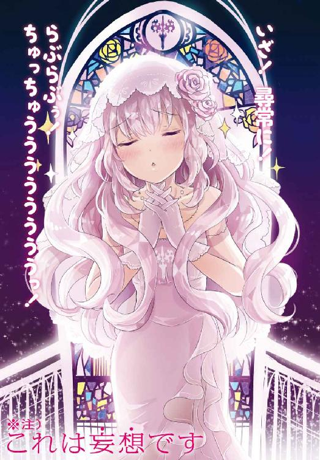
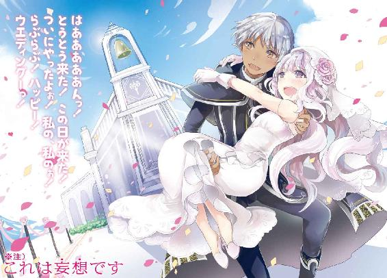
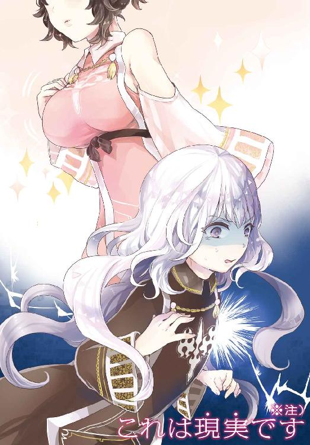
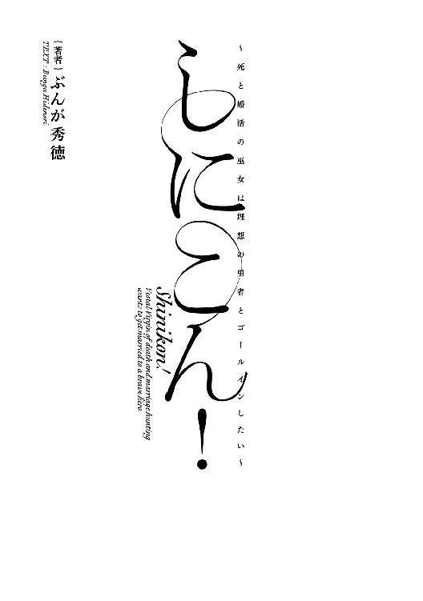
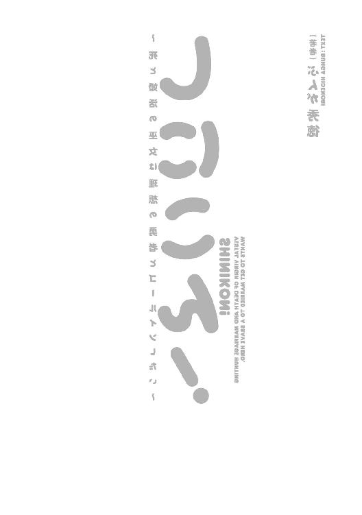
本作品の全部または一部を無断で複製、転載、配信、送信したり、ホームページ上に転載することを禁止します。また、本作品の内容を無断で改変、改ざん等を行うことも禁止します。
購入時にご承諾いただいた規約により、有償・無償にかかわらず本作品を第三者に譲渡することはできません。
本作品は、底本の表現や演出を考慮して本文縦組で制作しております。また一部のページを改変しております。ごらんになるリーディングシステムにより、表示の差が認められることがあります。
「ついに......ついに、この日が来たのですね」
広大な石造りの神殿の奥に、鈴の鳴るような声を響かせる少女がいた。
長く伸びた白銀の髪は強い癖を持ちつつも、美しく波打って乱雑な印象を与えない。切なげに細められた瞳は薄い紫色で、明け方の空のように澄んだ光を湛えている。白く、透き通るような肌を包むのは、黒を基調とし、白銀の装飾が随所に施された法衣である。
非の打ちどころのない美しい少女が、死を連想させる青白く冷たい光を背負い――広大かつ荘厳な神殿の奥に誂えられた祭壇の向こう側に佇む。
それは、完成された一枚の絵画のように、神秘的で儚い光景だった。
「神の代行者。巫女として使命を果たすときが」
逃れえぬ使命にして運命を呟きながら、少女は青白く冷たい光と向き合った。
光の正体は炎。少女の胸元まで高さのある大きく、美しい器で燃え盛る青い炎である。
冷たい輝きを放ちながら、熱い。矛盾した炎の照り返しが、法衣の胸元を飾る一際大きな装飾――死の神メメントモリを象徴する〈獄炎十字〉の意匠を輝かせた。
「メメントモリ様、どうか私を......巫女マリアベルを、あなたの御許まで導いてください」
少女、マリアベルは崇める神の名を呟きながら、ゆっくりと顔を上げる。澄んだ薄紫、朝焼けの瞳が炎の彼方を見詰めた。
神話祭――それは、百年に一度の全世界を巻き込んだ巨大な祭。
世界を産み、育て、導く八柱の神が滞りなく役目を果たすため、神の代行者として選ばれた巫女が供たる勇者を連れて世界を巡り、人々の信仰を集める一大行事。
集めた信仰を神の御許へと届けることで、巫女は大いなる使命から解放される。
そして、その命尽きるときまで、神の愛に守られた安らかな人生が約束されるのだ。
もちろん、巫女という大役は誰にでもこなせることではない。
心身共に高潔かつ清らか、神秘と慈愛と威厳に満ち、様々な試練に立ち向かう力と、使命を必ず果たすという覚悟がなくば務められぬ役目だ。
何しろ、巫女が信仰を正しく届けることに失敗すれば、大いなる災いが世界を襲うとされている。大衆の期待と不安が生み出す重責たるや、半端なものではない。
ついに......ついに、来たよ！ 来たよ来たよ来たよっ！
だが、マリアベルは真剣な面持ちに青い炎の照り返しを受け、重責などものともせぬ気迫と、微塵も揺るがぬ覚悟の叫びを自らの心で逬らせる。
この私の！ 一世一代の！ 婚活チャンスがやって来たよおーーーーーーーーっ！
今、死と婚活の巫女マリアベルの、使命と欲望の祭が始まろうとしていた。
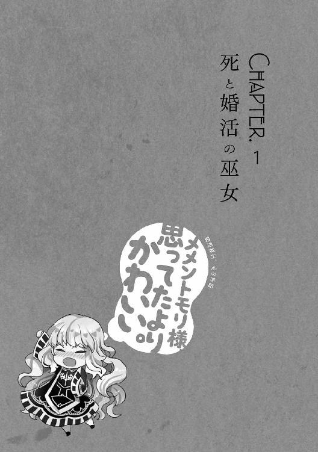
［ Ⅰ ］
神話祭も最初の開催から、かれこれ六百年。マリアベルの仕える死の神メメントモリは、不動の不人気一位として嫌な意味で揺るがない立場を築いていた。
死とは、忌まわしく恐ろしいもの。
死を司る神が人々から恐れられるのも無理はない。
問題は、不人気の煽りが死の神の巫女を輩出する家――つまり、マリアベルの実家に深刻な影響を与えていることだ。
何となく陰気な感じ。
闇よりも暗くて、冷たそう。
関わったら早死にするかも。
マリアベルは、そのような風評被害に晒された親族の姿を見てきた。
恋の機会を逃し、ついでに婚期も逃し、さらには幸せを逃し、愛で充実した日々を送る人々を呪う言葉を吐く犠牲者を何人も見てきたのだ。
だからってダメ！ ぐちぐちと呪いの言葉を吐いて一生を過ごすなんてダメダメ！ 私には耐えられないよ！
ゆえに、マリアベルは神話祭に全てを賭けていた。
過去、巫女と供たる勇者が苦難を乗り越える過程で愛を育み、幸せな結婚を果たし、最期まで添い遂げたという――美談として語り継がれる事例に賭けていたのだ。
限りなく不純、だからこそマリアベルのやる気は凄まじかった。
神話祭の時期を十代半ばで迎えられる幸運に巡りあったからには、この機会を逃さぬようにと徹底的に努力した。
巫女としての修練を積んで積んで積んで積んで積みまくったのだ。
その努力が高じて勝ち取った、死の神の巫女という立場。
それは、マリアベルにとってスタートラインに過ぎない。
「まず、勇者の選定を慎重に行わなければ......」
勇者選定、それは巫女が最初に行う極めて重大な仕事だ。
志願者の大半は勇者としての名誉や、それを利用した富を目的とした烏合の衆。そのような輩を撥ね除けながら、巫女の供として相応しい勇者を――マリアベル的には、一生を添い遂げてもいいような未来の夫を摑み取らねばならないのだ。
とはいえ、メメントモリの神殿に勇者候補が殺到するのはもう少しあとになる。
大体の勇者候補は生命や火、光など特に人気のある神の勇者として選ばれることを夢見、すぐに玉砕する。
そして、滑り止めとしてメメントモリの神殿にやって来るのだ。
不人気の神ゆえの悲しい現実。だが、残りものには福がある、信じる者は救われる。一人くらい、自分が一生を添い遂げてもいいと思える勇者が来る。
不純を通り越して下劣に差し掛かった考えを抱きつつ、マリアベルは青い炎に背を向け、咳払いを一つ漏らして唇を開いた。
「えー......よくぞ参られました。メメントモリの勇者」
巫女と勇者の関係性も婚活も、第一印象が肝心。待ち時間を利用して、神秘性に満ちた挨拶の練習を行った瞬間である。
「お迎えいただき光栄です。メメントモリの巫女、マリアベル様」
薄闇の向こうから、両開きの扉を押し開く音に続いて発せられた声に、マリアベルは固まった。昂ぶりすぎた心が生み出す幻聴かと思ったのだ。
しかし、声の主は幻とは思えぬ規則正しい足音を響かせて薄闇から歩み出る。
そして、祭壇の手前で立ち止まると、ゆっくりと跪いて頭を垂れた。
は、はわあああああうっっ!? もう勇者候補来ちゃったあああああっ!?
予想外の事態に激しく動揺しつつも、打算に満ちた心は迂闊に手を出すなと囁く。
眼前の勇者候補はマントについたフードを目深に被っており、顔がわからないのだ。
マリアベルは、それなりに面食いである。
自分は勇者に見初められるため、美しさをぬかりなく磨いてきた。だから、ちょっとくらい勇者にも外見を求めてもいいよね――努力に裏打ちされた欲望が、はやる気持ちを抑え込む。
「いかにも、私がメメントモリの巫女マリアベルです」
マリアベルは静かに息を吐きつつ、慈愛に満ちた柔和な笑みを浮かべた。
その姿は、誰がどう見ても神秘に満ち溢れた神の代行者だ。
「メメントモリの勇者よ、頭を上げなさい。我が神は死を司る、畏怖すべき大いなる存在ではありますが......」
も、もしかして、メメントモリ様の不人気を逆手に取ったのかなあ。ここなら、いち早く勇者の座は確保できるみたいな、逆転の発想？
マリアベルの脳裏を、失礼かつ打算的な考えが過る。
人間、自分と同じような発想を相手も抱いていると考えがちである。
「死を正面から受け止め、見据える人間を咎めはしません。そのように顔を隠し、俯く方がメメントモリの不興を買いますよ」
台詞の字面は硬いが、微笑と共に吐き出された言葉の響きは柔らかい。
巫女の威厳と少女の可憐さが入り混じった態度は、マリアベルの努力の賜物だ。
「わかりました。マリアベル様のお言葉に従います」
僅かに幼さを残した声と共に、予想外の勇者候補はゆっくりと立ち上がった。
そして、言われるがままフードを脱ぎ、その容貌を曝け出す。
「いい......」
マリアベルは、目を見開き――息と、溢れそうになる欲望を飲み込んだ。
まず、マリアベルの目に飛び込んで来たのは、さらりと揺れた清潔感のある灰銀の髪。続いて、夕暮れのように暖かい橙色の瞳。最後に、健康的な褐色の肌。
それら全てを内包する、中性的ながら整った顔立ちの少年。
それが、いち早くメメントモリ神殿に駆けつけた勇者候補の正体だった。
「いい？」
「いい、いい感じです。はい」
こくこくと頷きながら、マリアベルは少年に背を向ける。
そして、燃え盛る青い炎に向き直り、炎よりも燃え滾る婚活への執念、婚活魂を瞳に宿して小さくガッツポーズを取った。
いい！ いいよ！ すごくいい！ 私の理想とはちょっと違うタイプだけど......
マリアベルはそっと振り返り、少年の容貌を再確認した。
きょとんとした顔をして首を傾げる勇者候補は、確かにそこにいる。幻覚ではない。
灰銀の髪、橙色の瞳、褐色の肌、マリアベルが見たことのない色彩の組み合わせ。
それゆえに、理想の勇者像には合致しなかったが――。
でもいいよ！ いいよいいよいいよ！ この子で理想を上書きしちゃってもいいよ！ メメントモリ様、ありがとう！ 新たな理想との出会いに、ありがとう！
マリアベルは湧き上がる感謝の念と共に気を引き締める。
この出会いをぬか喜びに変えるなどということがあってはならない、ゴールインするまでが婚活なのだ。
決意も新たに、マリアベルは青く冷たい炎の向こう側を見上げる。
そこには、神の御許に信仰心を届ける巫女と勇者を描いた壁画が刻み込まれていた。
さあマリアベル、イメージするの！ スタートとゴールの間を！
決意と共に、マリアベルの心で壮大な妄想が始まった。現実のような濃密さで繰り広げられる、新たな理想とのめくるめく旅路のダイジェストだ。
これからの私とこの子の......婚活の旅路を！ フラグを立てる機会を！
フラグ。恋の進展を客観的に見極めるための精神的な目印のことを、マリアベルはそう呼んでいた。燃え盛る婚活魂と、独創的なネーミングセンスが生み出した造語である。
まずは、そう！
あるときは、弱き者に救いの手を差し伸べ。
そして、フラグを立て――
あるときは、悪しき者に勇気を持って立ち向かい。
そして、フラグを立て――
あるときは、凶暴な獣を加護の力で討ち払い。
そして、フラグを立て――
あるときは、神の導きを受けて秘境へ赴き。
そして、フラグを立てて！ 立てて立てて！
やがて、集めた信仰心を神の御座へと届ける。
新たな理想とらぶらぶちゅっちゅして！ ゴールインする道を開くためにも！ ここは冷静に冷静にいっ！ あくまでも、巫女マリアベルとして冷静に行くよおっ！
僅か数秒で妄想の旅路を終え、マリアベルは現実に戻った。
「メメントモリの勇者よ。あなたにとっては残念なことやもしれませんが、話さねばならぬことがあります」
そのまま巫女の体裁を保ち、体ごとゆっくり振り返って語り始める。
新たなる理想となった少年が小さく頷いたのを確認し、マリアベルは話を続けた。
「我が神の力と信仰は、それほど強いものではありません。あなたに与えられる勇者の加護も、他の神より小さなものとなりましょう」
平たく言えば、不人気絶頂の死の神でいいんですかということだ。
「それでもなお、この私と共に......我が神メメントモリの御許へと、信仰を届ける役目を果たす覚悟はおありですか？」
何かの間違いではないだろうか？
疑念を燻らせるマリアベルの前で、少年はゆっくりと視線を上げた。
橙色の、夕暮れを思わせる瞳に映るのは、青く冷たい炎と、その奥にある壁画だ。
「死の神メメントモリよ、僕......アベルカインの誓いをお聞き届けください」
そして、少年は固い決意と覚悟に彩られた声で、自らの名を紡ぎ出した。
アベルカイン。その名前はマリアベルの中で、即座に未来の夫を指し示す名前になった。
「マリアベル様、お心遣い痛み入ります。しかし、覚悟ならばとうにできております」
「では、この私......マリアベルと共に」
神話を紡ぐ勇者として、旅立ってくださいますね？
マリアベルが用意していた台詞を言い終える前に、アベルカインが力強く頷く。
「はい。僕は、あなたと神話を作りに来ました」
そして、緊張しているのか、やや硬さもあるが――夕暮れの太陽のような気性を感じさせる笑顔を見せて宣言した。
ふにゃっ！ ふにゃああああああああああああああああんっ！
マリアベルは、青白く冷たい炎と暖かい太陽の笑顔に挟まれ、絶頂的な昂ぶりに酔いしれた。
いいっ！ すんごくいいっ！ この子がいいっ！ 私、この子を勇者にするっ！ らぶらぶちゅっちゅするっ！ ゴールインするうっ！
現実のマリアベルは、あくまで神秘的で慈愛に満ちた微笑を浮かべたままだ。
しかし、心の中――妄想世界のマリアベルは違う。新たな理想とらぶらぶちゅっちゅすることを夢見ながら、激しくも喜びに満ちたダンスを踊っている。とてつもない落差である。
「ええ、作りましょう！ アベルカイン......あなたと、私の神話を！」
神話以外のごにょごにょも、いっぱいいっぱい作りたいよね！ ぐへへへへ！
マリアベルは、神秘の微笑でも隠し切れぬ激しい気持ちに頰を上気させる。
まさか、この出会いが――勇者アベルカインが、自らを神殺しの大偉業へと導くとは夢にも思わぬまま、死と婚活の巫女マリアベルは、幸せな結婚生活を夢想し始めていた。
［ Ⅱ ］
「では、アベルカインよ。これより加護の儀式を執り行います。我が神より加護を授かることで、勇者に相応しい力を得るのです」
マリアベルは、微かに上気した頰に満面の笑みを組み合わせてそう告げた。
新たな理想に出会った喜びで溢れる、神秘性もへったくれもない表情だが、美しいことだけは間違いない。伊達に美しさも磨いてきたわけではないのだ。
「あの、マリアベル様。他の勇者候補を待たなくてよいのですか？」
だが、アベルカインはマリアベルの笑顔には動じない。
その様子に打算と欲望を見透かされているのかと微かな焦りを覚えつつも、マリアベルは死中に活を見出した。
ここ、ここだよマリアベル！ ここが好感度アップのチャンス！
マリアベルは、満面の笑みを神秘的な微笑に変えつつ、そっと歩き出す。
そして、祭壇を回りこんでアベルカインの傍らに立つと、アベルカインの体を覆う前開きのマントを手ずから開いてみせる。
「ふふ。アベルカイン、お優しいのですね。ですが、私はあなたこそ、我が神メメントモリの勇者に相応しいお方だと思います」
跪いたときや、何気ない動作の最中にちらりと見えていたマントの中は、軽装の革鎧、黒を基調とした動きやすそうな衣服、腰に携えた剣と、オーソドックスな剣士のスタイルだ。
マリアベルは、基本色が自分と被っていることで、ペアルックという単語を夢想した。
「あなたの身に着けているものは......ひとつひとつが使い古され、それでいて、とても丁寧な手入れが行き届いていますね」
花畑で踊り狂っているような思考回路の持ち主であるが、幸せな夢以外もきちんと見ているのだ。
マリアベルの言葉に、アベルカインが好ましい驚きに目を丸くする。
「わかるのですか？」
「はい。手馴れた、肌に馴染む道具は友や伴侶の如く信用できるもの。もちろん、手入れではどうにもならずに新品を用意する場合もありますが」
マリアベルはそう言って、差し伸べた手を自らの胸元に当てる。
「神や巫女に対して、その身をみだりに飾り立て、豪奢な武具に着られてしまっているような方より、よほど信用できます」
ちなみに、マリアベルの胸元も修繕や手入れではどうにもならない部位だ。
絶望的なまでに薄く、成長の見込めない――哀しいまでの壁だった。
「ご慧眼、恐れ入りました」
アベルカインの瞳に尊敬の念が滲むのを、マリアベルは見逃さない。
ここで畳み掛ける、さりげないスキンシップへと繋げる。マリアベルは、自分が狩人になっているイメージと共に静かに問いかけた。
「あの、手を取ってもよろしいでしょうか？」
「手......ですか？ 構いませんが」
アベルカインは、怪訝な様子で右手を差し出した。その手を両手で優しく包んだマリアベルは、心の中で大興奮しながら笑みを深める。
はあああああんっ！ 細くて長い、きれいな指！ しなやかだけど、ちょっとごつごつしてて男の子してるよぉ！
欲望のままに撫で回しつつも、マリアベルは見るところを見ていた。それは、掌の硬さと厚さ。そこから滲む、激しい修練の痕跡だ。
はうううーんっ！ 褒めてあげたい！ 硬い掌をしているんですねって言ってあげたい！ でも、ここは待ちだよ！ 静かに待ち構えるときだよ！
マリアベルはあえて何も言わない。アベルカインから発言があると見込んでいたからだ。
「あの......硬い掌をしておられるんですね」
その予想は、すぐに現実のものとなってアベルカインの口を動かした。
来たぁ！
そう、マリアベルの掌は、美しく儚げな外見に似合わぬ厚さと硬さを持ち合わせていた。
「巫女も、神話祭において勇者の足手まといにならぬよう、様々な武術を......私の場合、杖術を嗜んでおります」
マリアベルは、ここまでのやり取りや外見的特徴から、アベルカインはかなりマジメに勇者を目指しているタイプだと判断していた。
ならば、こちらもマジメさをアピールする。動機は不純でも、真剣に努力した痕跡は本物だ。
んにゃああああっ！ 絶対に親近感が生まれる！ むしろ、生まれてください！ メメントモリ様、好感度アップを！ どうか、好感度アップをお願いします！
不純な祈りがメメントモリに通じたかはわからないが、アベルカインはマリアベルの手の甲に左手を重ねてきた。掌の厚さを両手で改めて確かめる、下心のない武術的スキンシップだ。
「確かに......これは、厳しい修練を積んだ人間の手です」
ふわあああああんっ！ 来た来たぁ！ 好感度アップ来たぁ！
想定通りの反応に、マリアベルは心の中で拳を突き上げた。
「私も武を嗜む者として、よくわかるのです。あなたが......メメントモリの勇者として、私と神話を作り上げるに相応しい力の持ち主であると」
アベルカインも、何らかの武術を自分よりも高度なレベルで習得しているにちがいない。それは、勇者にとって好ましい資質である。
なぜなら、勇者の加護は肉体的な能力を飛躍的に底上げするという性質がある。武勇に秀で、体を使った戦いを得意とする人間との相性は抜群というわけだ。
「さ......もういいでしょう？ 他の勇者候補を待つ必要などありません」
「マリアベル様、ありがとうございます。メメントモリの勇者を拝命し、加護の儀式を謹んでお受けいたします」
硬く暖かい手を取ったまま、マリアベルは青き炎の前へとアベルカインを導いた。
それは、燃え盛る死の世界の炎、死の神メメントモリを象徴する、この世ならざる炎である。
マリアベルは、心底名残惜しかったがアベルカインの手を離した。
「では、アベルカインよ。これより、勇者の加護を受けるための代償をこちらへ――この世ならざる炎へと捧げていただきます」
「はい。メメントモリ様が加護を授ける人間を見誤らぬよう、自らの血肉を神に捧げる。それでよいのですよね？」
アベルカインの表情が少し緊張しているのを、マリアベルは見逃さない。
血肉を捧げるなどという、おどろおどろしい響きのせいだろうか。そんなことを思いつつも、笑顔のままに白銀の髪を軽く揺らしてみせる。
「その通りです。血肉と言っても、髪を一房、血を数滴――」
その程度の、ささやかな代償で構いませんよ――と続くはずだった言葉は、アベルカインの質問に遮られた。
「差し出す代償が大きいほど、加護も大きくなる。この認識、間違いありませんか？」
「そうですね。遙か昔、指を落として差し出した勇者がいたそうですが......彼に与えられた加護は、他の勇者よりも大きく特殊であったと記録されています」
やや曖昧な答えだが、無理もない。どんな代償を差し出したか、どんな加護を得たのか、詳しい記録は残っていないのだ。
「ええ。初代勇者の欠けた伝説......間違いないようですね」
アベルカインは、真剣な面持ちで頷いた。
その言葉どおり、大きな代償を払って相応の加護を得た勇者は、初代――六百年前の勇者のいずれかであったとされる。
え、そこまでやる気なの？ そこまでガチで行く気なの？
アベルカインの予想外に大きく真剣な覚悟に、マリアベルは少し戸惑った。
そこまでして、強い加護を得ることを決意しているなどと思ってもいなかったのだ。
で、でも、そこまで本気だと難しい！ 神話祭の最中に、最中にぃ！ らぶらぶちゅっちゅするのが難しいよ！
アベルカインの覚悟に、マリアベルは婚活魂を滾らせた。
そして、神秘的な巫女の仮面に少し険しい表情を貼り付け、厳かに問いかける。
「ですが、お勧めはしません。生半可な覚悟では、加護の力を持て余すやもしれませんよ」
マリアベルは内なる婚活魂を原動力に、巫女としてアベルカインに覚悟と決意を問うた。
「大きすぎる力に振り回される不安は......ないわけでは、ありません」
アベルカインは、マリアベルの問いに言葉どおりの不安を滲ませた。
「ですが、どうしても。メメントモリの勇者として、大いなる加護を授からねばならぬのです」
だが、引く意思を見せぬアベルカインは、硬い唾を飲み込んで喉を揺らした。
そして、軽く掲げた右腕の先で、感触を確かめるように何度か指を曲げ伸ばす。
マリアベルは、どうにも止められそうにない雰囲気を察し、緊張した面持ちで考え込んだ。
ゆ、指でも直接突っ込む気なのかなぁ。それくらいなら、何とか回復できるかもしれないけどさぁ。ここまでガチな子と、らぶらぶちゅっちゅできるのかなぁ。い、いや、それよりも、これ......もっと激しく止めた方がいいのかなぁ。いやいや、止めないにしても、もっと安全に代償を差し出す方法があったような
マリアベルの心は、不安と欲望が混ざり合って乱れていた。だが、そんな小さな揺れを吹き飛ばすような衝撃的な光景が、朝焼けの瞳の前で繰り広げられる。
「うくっ......ううっ！」
アベルカインの苦悶の声が炎に吸い込まれるように吐き出された。
嚙み殺した、激痛を堪える、聞いている方まで痛みを覚えるような声。
それは、炎に指先を突っ込んだからではない。
アベルカインは、右手の指先を自らの右眼に突っ込んでいたのだ。
そして、涙の混じった血潮を漏らしながら、眼球を一気に引き抜いてしまう。
えっ、えっ、えええええええええええええええええええええええええええええええっ!?
マリアベルは驚愕し、目を飛び出さんばかりに見開く。
巫女の仮面を保つことができないほど、アベルカインの行動は衝撃的だった。
シャ、シャレになってない！ まずい、まずいよこれっ!? う、動いて動いて！ 早く動いて私！ 固まってる場合じゃないんだってば！
しかし、心の叫びは現実に影響を与えてはくれない。高まる焦りの熱とは逆に、凍りついたように体が動かないのだ。
対照的に、アベルカインは動きを止めなかった。引き抜いた眼球を握り込んで拳を固め、力強く踏み込み、悲壮な覚悟に満ちた声で叫ぶ。
「死の神メメントモリよ！ 我が右腕と右眼を代価に！ どうか、死の理に満ちた強き加護を......あなたの勇者に与えたまえ！」
その叫びは、突き出された右腕と、握り込んだ右眼と共に、青き炎へと吸い込まれた。
一瞬で燃え尽き、砕け散る右腕。激痛と苦悶、喪失感にアベルカインの体が揺らぐ。危うく頭から炎に突っ込みそうになるところを、マリアベルが慌てて抱き止めた。
「ちょっ......ええ!? なっ、アっ、アベルカインっ!? あ、あなた、ガ、ガチすぎませんか!? どこまでやる気なんですか!?」
青き炎から離し、祭壇にもたれかからせながら、抱きつけてラッキーなどと思う余裕もなくマリアベルが叫ぶ。
剝がれかかった巫女としての上っ面が、マリアベルの激しい動揺を物語っていた。
「だ、大丈夫です。これくらいの代償を払わねば、僕の望む偉業には......」
あ、あうあうあうあう！ ア、アベルカインはなんか、あれかな!? ハードな過去とかそういうのがある感じのあれなのかなああああっ!?
「とっ、とっ、とにかく止血だけでも！ 〈快癒の光〉を施します！ 絶対に動かないで！」
〈快癒の光〉は基礎中の基礎とも呼べる神術――仕える神の力を借り受ける奇跡の一つだ。
その名の通り、ちょっとした傷病に対する治療効果がある。
死の神が治療とは奇妙に思えるかもしれないが、基礎中の基礎たる神術は、どのような神に仕える巫女、神官でも行える。
しかし、腕一本が丸ごと欠損するような大怪我を完全に治療するなど、とてもじゃないが不可能だ。大規模な欠損部位の再生は、生命の神の力を借りた上級神術の領域である。
ああ、どうしようどうしようどうしよう！ 見てないで止めればよかった！ どうしよう、どうしよう！
マリアベルはアベルカインを抱きしめ、涙目で強く祈った。メメントモリの神術特有の青白い光が傷口を包み込み、止血は成功する。
それでもなお、至上の目的、婚活すら忘れる程に絶望的な後悔がマリアベルを苛んだ。
アベルカインに加護が与えられる気配も未だない。
もしも、大きな代償で大きな加護なんて法則が誤りだとしたら。
片眼と片腕を失ったアベルカインが、メメントモリ様に見捨てられたら。
勇者として不適当だとみなされたとしたら。
マリアベルの逞しい想像力は絶望と後悔で加速し、果てしなく暗く、死にたくなるような展開を妄想の空に映し出す。
はぐううううっ！ こうなったら、生命の巫女に......あの活火山に土下座してでも、再生を頼もうかなあ。いや、頼もうかなあじゃダメ、頼むんだよ！ 土下座するしかないよ！
なりふり構わずアベルカインを救う覚悟が固まった瞬間である。
「その幼さで、恐ろしい勇者がいたものよな」
マリアベルの暗い想像を断ち切る声が神殿に響く。
アベルカインとマリアベル、三つの瞳が呆けたように声の主を見上げた。
「眼と腕を躊躇いなく差し出すような者は、そなたが初めてぞ」
青白く燃え盛る炎の上、冷たく輝く光に照らされた幼い少女がそこにいた。
巫女の法衣とよく似た、だぶついた衣服に身を包み、黒く波打った髪を神殿の薄闇に溶かすように広げ、朝焼けを思わせる薄紫の瞳でマリアベル達を見下ろしている。
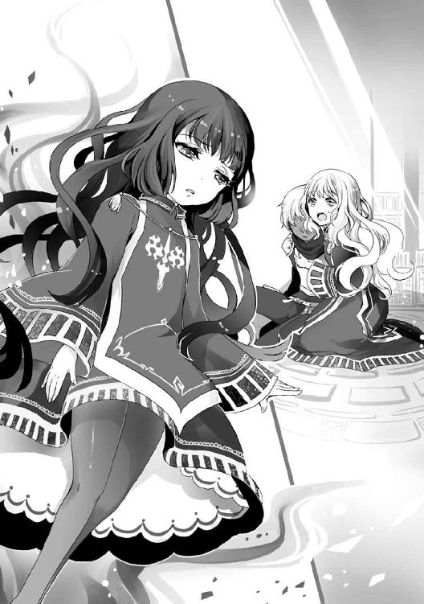
「メ、メ、メ」
マリアベルは十代前半にも満たぬ幼さながら、異様なまでの神秘性と威圧感、そして慈愛を漂わせた少女の正体に思い至り、ぱくぱくと口を動かす。
メ、メメントモリ様ーっ!? ご、ご、ご降臨なさってくれたのおおおおおおおっ!?
死の神メメントモリは、驚嘆に満ちた視線をアベルカインに向けた。
続けて、マリアベルに向けられた視線は――ゴミを見るような冷たいもの。
不純な動機は、思いっきり見透かされていた。
［ Ⅲ ］
「メ、メメントモリ様！ ど、どうかアベルカインに！ あなたの勇者に慈悲を！ 彼をお見捨てにならないでください！」
ゴミを見るような目にも屈さず、マリアベルは叫んだ。
欲望に満ちた婚活魂を感じさせぬ、心から慈悲を請う叫びである。
不純であろうと巫女、損得の絡まぬ慈しみの心も持っているのだ。
「お前も、ある意味恐ろしい巫女よな。わらわの代行者を務めるだけの聖性を持ちながら......」
その先は言わないでください！ ほんとお願いします！ でも、アベルカインがそれで助かるなら考えなくもないです！
メメントモリからマリアベルに向けられる視線が、ゴミを見る目から得体のしれない虫を見るような目に変わった。
捨てればそれですむものから、どう対処していいかわからないものに扱いが変化したのだ。
「巫女マリアベル、そう心配するでない。さて......アベルカインよ、そなたは我が勇者に相応しき者」
アベルカインは止血はしたものの万全とは行かないのか、灰銀の髪を汗で額に貼りつけており、顔色も悪い。それでも、メメントモリの言葉に真剣に聞き入っていた。
その姿を、メメントモリはどこか楽しげに見詰めている。うっとりと陶酔するような視線は、まるで見惚れているようだ。
え、何これ？ メメントモリ様とフラグ立ってる？
マリアベルは、反射的に不謹慎な感想を抱いた。
間髪置かず、虫を見るようなメメントモリの視線が突き刺さる。
は、はううん......ちょ、ちょっと癖になりそうだなあ。メメントモリ様の視線
マリアベルの心を、メメントモリは読んでいた。不純な動機を見透かすなどというレベルではなく、隅々まで見通すことができるのだ。ゆえに、虫を見るような目にもなる。
「遙かなる大偉業に挑むため、強き加護を渇望するその心。そなたが差し出した腕と眼を通じて、わらわにしかと伝わったぞ」
メメントモリは微笑んだ。
マリアベルが癖になりそうと評した冷たい眼差しを消し去り、ふわりと宙を舞ってアベルカインの眼前に舞い降りる。
「さあ、そなたの望む強き加護ぞ。遠慮はいらぬ、わらわが手ずから授けてやろう」
そう言うと、メメントモリは小さく柔らかそうな手でアベルカインに触れた。右腕の断面、右眼の傷跡、最後に軽く頰を撫でてから手を離す。
う、羨ましい......
メメントモリは、羨ましがるマリアベルを睨みつけるようなことはしなかった。
そんなことをしては、本当に癖になるかもしれないからだ。
「こ、これは......!?」
女神と巫女の嫌な心理戦を知らぬアベルカインが、驚きに声を上げる。
いつの間にか、右腕と右眼が元に戻っていたからだ。
か、神様すごーっ!? メメントモリ様、ありがとう！ ありがとう！
「メ、メメントモリ様、何とお礼を申し上げていいか......」
ハイテンションな本音のお礼。
巫女の皮を被ったおしとやかなお礼。
真心が込もった二つのお礼を捧げるマリアベルに対し、メメントモリは優しげな視線を向けた。
「元に戻したわけではない。その眼と腕も、わらわの加護」
メメントモリの言葉を聞きつつ、アベルカインが手を動かす。続いて、右眼だけ何度か瞬かせた。特に変化が感じられないのを確かめたのだ。
「ふふ、力の使い方がわからぬようだな。だが、わからぬ方がよい......これも、わらわからの試練と心得よ」
「ありがとうございます。その試練、必ずや果たし......頂いた加護を使いこなしてみせます」
佇まいを正し、力強く頷くアベルカイン。
マリアベルは、そんな勇者に自然と寄り添って支える構えを取っていた。体調を気遣っていると思える程度の抜け目ないスキンシップだ。
「だが、これから授ける加護はあまりにも強い。節度を持って扱えるように、知識も共に授けてやろう」
え、三つめ？ そこまで大サービスしてくれるの？ これマジで、メメントモリ様とフラグ立ってない？
マリアベルの思考を無視できなくなったのか、メメントモリは、害虫を見るような目でマリアベルを見た。桃色の妄想を早めに駆除した方がよいのではと思ったのだ。
すると、マリアベルの白い頰がほのかに赤らむ。マジで、癖になりかけていた。
「アベルカインよ......そなたの剣をここに」
メメントモリは、さりげなくマリアベルから目を逸らして両手を差し出す。
神の誘いに応じ、アベルカインは腰の剣を鞘から引き抜いた。
そして、青白い炎に照らされて輝く剣を、小さな掌へと預ける。
マリアベルが変態としての器を着実に高める傍らで、アベルカインは勇者としての器を着実に高めていた。
「............」
メメントモリが瞑目し、刀身が青く冷たい光に包まれる。
マリアベルとアベルカインは、その眩しさに目を細めながら、自らの心へと刻み込まれた名を同時に呟く。
「し、死想剣、メメントモリ？」
知識の伝達が終わったことを確認し、メメントモリは頷いた。
「そう、その剣はわらわの名を冠する死の剣。アベルカインよ、お前が勇者として相応しい想いの下に死を念ずるとき――」
死想剣が神の掌から掻き消え、次の瞬間には取り出す前と同じように鞘に納まる。人には認識すらできぬ、神の御技による瞬間移動だ。
「その剣は、絶対なる死の力を伴って鞘から抜き放たれる。そして、お前の技と願いが導くままに、殺めるべき命を必ずや突き貫くであろう」
アベルカインは、メメントモリの言葉を固唾を飲んで聞き入っていた。
その手が、無意識に死想剣の柄に触れる。見た目はそのままに、メメントモリの力を受けて神剣となった剣は、愛用していた武具とは思えない程に重く、冷たかった。
「だが、心せよ。神の力をみだりに振るい、死を振りまくなど勇者に非ず。そのような蛮行に及べば、必ずやわらわの裁きが下ろう」
「はい」
剣の柄を軽く撫でつつ、アベルカインが重々しく頷く。
それを見届けると、メメントモリは少しだけ嫌そうな顔をしてから、マリアベルに向けて声をかけた。
「マリアベルよ、お前とアベルカインは存外......」
メメントモリは、言葉に詰まった。言えば必ず勘違いするという確信があったからだ。
しかし、言わなければ話が進まないので、諦めて思い描いた言葉を口に出した。
「釣り合いが取れているのかもしれぬな」
マリアベルは、夜明けが訪れたかのような爽やかで明るい喜びと驚きに、眼を見開いた。
え？ え？ メメントモリ様公認!? いいの!? ガンガン押していいの!? らぶらぶちゅっちゅしていいの!? ゴールインＯＫなの!?
逬る欲望と喜びのままに、マリアベルはアベルカインに寄り添ったままの体を少しだけ強く密着させる。
ほんの少しで止めたのは、あまりにがっついた態度を見せて、アベルカインの好感度が下がるのを恐れたからだ。
メメントモリは、その様子を優しい眼差しで見詰めた。諦めから来る、悲しい優しさに満ちた眼差しである。
「お前の、ええと......死を司る巫女でありながら、飽くなき幸福、どこまでも生を渇望するその心」
メメントモリは、最大限に言葉を選びながらマリアベルの髪を撫でた。
人の心は読めても、読んだ心を直接他人に伝えることはしない。それが、神の人に対する礼儀であり、マリアベルの欲望でアベルカインを動揺させないための配慮であった。
「それは、必ずやアベルカインの力となろう。お前とわらわの勇者を生かすのだ。決して、悲劇の勇者にするな」
諦めではなく、心からの優しさと共に放たれたメメントモリの言葉に、マリアベルは静かに頷くとアベルカインに視線を向けた。朝焼けの瞳に映る褐色の横顔は、とても真剣な面持ちで、メメントモリの言葉を真摯に受け止めているように見える。
マリアベルはその横顔を眺め、メメントモリの言葉を真摯に受け止めつつ――欲望を際限なく滾らせてゆく。
し、真剣な顔も凜々しくていいなぁ。でも、笑顔の方がすごくいい。ほわっとして、かわいくて......なんていうか、ぺろぺろしたくなるよね！
メメントモリは、伝わってくるマリアベルの心に頭痛を覚えてこめかみを押さえた。
「その様子なら心配はあるまいが。喜劇にもするでないぞ。死は畏怖されるべきものぞ」
「は、はいっ。わかっておりますともっ。このマリアベルと、パートナーたるアベルカインにお任せを！」
さりげなく用いたパートナーという単語に滲む欲望と打算に、メメントモリはある種の純粋さすら感じて驚愕した。
あまりにも純粋な、婚活に賭ける想いの凄まじさ。
幸せな結婚生活という、長く続く生への果てしない渇望。
それは、必ずや、あらゆる悲劇を打ち砕く力になる。
メメントモリは、半ば強引に納得しつつ笑みを深めた。
「うむ。任せたぞ。では、よき神話を紡ぐがよい」
未来をかなぐり捨て、己の命を賭してでも偉業に挑もうとする勇者。
使命をかなぐり捨て、己の命を賭してでも婚活に挑もうとする巫女。
面白い勇者に巡り合った充足感と、面白すぎる巫女に巡り合った疲労感と共に、メメントモリは虚空へと溶けるようにその姿を消した。
消滅の間際、メメントモリが勇者と巫女に最後に残した表情。
それは、幼い容姿に似合わぬ――神の母性に満ちた笑顔だった。
［ Ⅳ ］
アベルカインもマリアベルも、神の笑顔の幻影が残る虚空を見詰めていた。
「......メメントモリ様が、直に加護を授けに来てくださるとは」
やがて、アベルカインが静かに呟く。現実と夢幻の境を彷徨うかのように、戸惑った声だ。
「このようなことは、私の知る限り初めてのことです。アベルカイン、メメントモリ様はあなたを大層お気に召したのでしょう」
マリアベルは、死ぬほど名残惜しかったがアベルカインから体を離す。そろそろ体調も万全だろうし、ここらで離れておく方が自然だからだ。
心の中は果てしなくがっついていたが、婚活には冷静さも必要。
獣の本能と、冷たい刃を心に秘めて機会を待つ忍耐力を併せ持つ者。それこそが、真の婚活戦士だとマリアベルは心得ていた。
「これは、すでに神話的偉業です。神より武具を賜るなど、勇者として最高の誉れでしょう」
マリアベルは、そう言ってアベルカインを褒め称える。しかし、すぐに表情を悲しげに歪め、白銀の髪を揺らして俯いてしまう。
「ですが、今のあなたには......その剣を抜き放つ資格はありません」
「どういうことですか？」
アベルカインは、夕暮れの瞳に疑問を湛えて答えを求めた。マリアベルの非難の原因が理解できなかったのだ。
「アベルカイン。あなたは、己の命を軽んじすぎています」
マリアベルは視線をアベルカインから逸らし、青き死の世界の炎を見詰める。
そして、炎に触れぬように軽く右手を翳してみせた。
「死の世界の炎に、躊躇いなく腕を突き込みましたね。あれは勇気ではなく、無謀......勇者の行いではありません」
怒りを含んで鋭く細めた瞳で、マリアベルはアベルカインを睨みつけた。
その視線と、目尻に溜まった涙に射抜かれて、アベルカインは言葉を失ってしまう。
「私が抱き止めなければ、体ごと倒れ込んでいました。この私を、勇者の死を看取るような不幸な巫女にする気ですか？」
マリアベルの涙は演技ではない、心からの涙だ。
ゆえに、アベルカインの心にも強く印象を残す。
女の涙は武器、本気で流したら使わねば損。本気で流した涙でも、打算で使いこなすのがマリアベル流だ。あまり、褒めてはならない類の技術である。
「ですが、マリアベル様。僕には、どうしてもやり遂げなければならないことが......」
反論を試みるアベルカインの唇に、マリアベルの人差し指が押しつけられた。それだけで、反論の声はあっさりと封じられてしまう。
「あなたがやり遂げねばならないこと。それは、私にとってもやり遂げねばならないことです」
アベルカインが再び沈黙すると、マリアベルは笑顔を見せた。
ぎこちなく、少し無理しているのがよくわかる、怒りと悲しみを堪えて気丈に振る舞っているような笑顔である。
アベルカインにはそう見えたし、他の誰が見ても似たような判断を下したろう。
だが、実情は違う。
ふ、ふあああああっ！ く、唇柔らかいなあ！ こ、この唇といつか、いつか、らぶらぶちゅっちゅしちゃうんだよねえええええっ！
咲き乱れる欲望の花を外に出さぬよう、堪えているがゆえのぎこちなさ。
それでも、外面はあくまでも怒りと悲しみ、そして不安の涙で濡れる理想的な巫女。そんな変態性を持ち合わせていることなど、アベルカインにも他の誰にも想像できるはずもない。
「もっと、あなたの巫女を信じてください。死の上級神術には、一時的に痛覚を消失させる術もあります。それを用いれば、儀式ももう少し安全に行えていました」
〈業火の恵〉と呼ばれる、死の神メメントモリの上級神術である。
正確には痛みを減じる術であって消失させる術ではないが、巫女として高い実力を持つマリアベルは、この術の効果を限界以上に高め、痛みを完全に消失させることができるのだ。
そうなんだよねえ......これ使えば、本当にもっと安全にやれたんだよねえ。ごめんね、ごめんね、アベルカイン、ごめんね
ちょっと、いやかなりの罪悪感と後悔がマリアベルを襲う。アベルカインの覚悟に呑まれて、〈業火の恵〉を使うことを提案できなかった罪悪感と後悔だ。
二つの暗い感情に押されるかたちで、瞳の端に溜めた涙が頰を零れ落ちた。
その涙を優しく拭う指はマリアベルのものではなく、暖かな褐色の指先、神より賜った加護を宿したアベルカインの右手だった。
ふわああああああっ！ 罪悪感さんごめんっ！ 喜んじゃってごめん！ これは来てる、来てるよ！ また好感度上がってるよ！
突然の優しいスキンシップに、マリアベルは欲望を一気にヒートアップさせた。思わず、鏡の前で何度も何度も練習したキス待ち顔を披露しそうになる。
「返す言葉もありません。少し、気が急いていたようです......お許しください」
だが、アベルカインの真摯な反省の言葉が、マリアベルの意識を現実に戻した。
「私に謝る必要はありません。私とて、あなたの覚悟に呑まれて〈業火の恵〉を使うよう言い出せなかったのですから。本当に、申し訳ありません」
「そんな、マリアベル様が謝ることは......」
涙を拭ったあと、頰に添えられたままだったアベルカインの手に、マリアベルは自らの手を重ねて微笑んだ。スキンシップでキス待ち顔を暴発させかけた人間とは思えぬ、完璧かつ理想的な、慈愛に満ちた巫女の微笑である。
「ふふ、では私達で謝り合うのは止めましょう。先の無謀に対して、真に謝るべき存在。それは、あなたの命なのですから」
「僕の命......ですか？」
「死を崇めることと、命を大切にすることは矛盾しません。死の神メメントモリの勇者を担うなら、死と命を大切にしてください」
もっともらしい説法を述べているマリアベルだったが、彼女自身は命というか、生命の神があんまり好きではなかった。今期の巫女が心底いけすかないと言い換えてもいい。
なぜなら、生命の巫女の胸部はマリアベルのような壁とは違う。
今にも何か噴き出しそうなくらい、激しく圧倒的に盛り上がっているのだ。
マリアベルは、忌まわしき生命の巫女の胸を活火山と呼んでいた。
完全に、果てしなくどうでもいい嫉妬である。
「人生で、たった一度だけの終わりの瞬間なのです。あなたの死と命を粗末に扱うことは、この私が許しません」
マリアベルの顔は穏やかな微笑みのままだった。アベルカインの掌から感じる温もりと、溢れ出る欲望が、活火山に対する妬みを和らげていた。
「マリアベル様、わかりました。死の神の勇者として相応しい男になれるよう、僕を導いてください」
「ふふ、わかってくれたようですね。もちろんです、あなたと私は運命共同体なのですから」
うへへへへへ！ 神話祭が終わっても、ずっと共同体予定なんだからね！ 絶対に油断しない！ 終わってからも離さないよ！
全ての巫女と勇者が、神話祭が終わってからも一緒にいたわけではない。全体で見れば数は少ないものの、使命を終えたあと、別々の人生を歩んだ巫女と勇者も存在する。
だからこそ、マリアベルは油断しない。自分がそうならないように気合を入れるのだ。
神話祭という絶好の機会を、アベルカインという理想と出会えた幸運を、二重の意味でたった一度のチャンスを無駄にしないために。
「はい、マリアベル様」
アベルカインは眼前の巫女が笑顔の裏で荒ぶっていることなど気づくことなく、安心した様子で頰に添えた掌を離す。
マリアベルは名残惜しいとは思わなかった。掌の温もりと感触は、記憶の中にしっかりと刻み込んだからだ。一週間は鮮明に思い出せる。その間、ずっとご飯のおかずはこれでいい。マリアベルは、自らの記憶力の良さを心中で自画自賛した。
「それと、僕の目指す偉業についてですが......」
神の代行者たる巫女と、その従者である勇者の旅路は後世に神話として語り継がれる。
その中でも特に目立つ――例えば、非常に多くの人々を救ったり、際立って強大な怪物を倒すといったエピソードを『偉業』と呼ぶのである。
勇者候補の中には、自らが挑む偉業をあらかじめ決めている者も珍しくはない。
その動機は名誉欲や英雄願望の延長線であることが多いのだが――。
「わかっています。今は話す時期ではないのでしょう？」
先手を取られたアベルカインが、小さく頷く。
「神話を紡ぎ、小さな偉業を重ねましょう。充分な信仰が集まり、我らが神の力が高まれば......」
巫女としての威厳を演出するため、マリアベルは僅かに溜めを作った。
「メメントモリ様が認め、あなたが目指す、遙かなる大偉業への道も開けましょう。そのときは、あなたの心の内を包み隠さず私に教えてくださいね」
「はい！ もちろんです、マリアベル様！」
アベルカインは、緊張の取れた柔らかな笑顔を見せて頷いた。
少しずつ気を許してきているのは明らかだが、マリアベルは好感度がどうのと一喜一憂しなかった。そんな些細なことよりも、重要な下準備が終わったからだ。
秘密共有の下準備完了したああっ！ 大収穫だよ！ 神話祭のクライマックスッ！ 心を許しあう二人！ そこで、そこで！ 私の婚活もクライマックスちゅっちゅうっ！
婚活戦士とは狩人でもある。
マリアベルは獲物を追い込む道を見極め、的確に罠を設置することに成功した喜びに酔いしれ、脳内お花畑で激しく躍り狂った。
舞い散る花びらの一つ一つに映る未来のイメージは、どれもこれも桃色の欲望と圧倒的な幸福感で満ち溢れている。
はああーんっ！ クライマックスちゅっちゅともなれば、これはもうあれだよね！ 夜の戦いに突入するしかないよね！ アベルカイン、優しくして――
マリアベルが、妄想世界で「優しくしてね、ぐへへへ！」まで言い終える直前、無遠慮な大量の足音が神殿に響き渡る。
ちょっともう、なに!? らぶらぶ空間に割り込むとか、空気読めないの!? あと、メメントモリ様に失礼だと思わないの!? ここ神殿だよ!?
二人きりの空間へと割り込む、失礼な異物へと鋭い視線を向けたマリアベルだったが――。
「あっ......あなた達は」
足音の正体に気づくと同時に、目を丸くすることになった。
無礼な異物の数は、ざっと四～五十人。それは、通例通りのメメントモリの勇者候補。他の七つの神と巫女に選ばれなかった落第生達だ。
マリアベルも最初は彼らを当てにしていたが、今となっては過去の話。加護の儀式も終えたアベルカインに割り込む術など存在しないのだ。
「残念ながら、あなた達に勇者の枠はありません。巫女マリアベルの勇者は、この僕がたった今貰い受けました」
えっ、『メメントモリの勇者』って言わずに、マリアベルって呼び捨て？
マリアベルは思ったより好感度が上がっている事実を喜びつつ、この状況にどう始末をつけるか考え始める。
滑り止めの勇者候補は、誰も彼も明らかに不満でいっぱい。通例通りなら、ここで敗者復活戦があるはずなのだ。
真っ先に来たアベルカインが責められる道理は全くないにも拘わらず、横から掻っ攫われたと言わんばかりの刺々しい視線を向けている者もいる。
「大丈夫です。マリアベル」
アベルカインは微笑むと、小さな声でマリアベルにだけ語りかける。
「ここから始めてしまいましょう。僕達、メメントモリの勇者と巫女の神話祭を」
その言葉に、マリアベルは小さく頷いた。
アベルカインが、滑り止めの勇者候補から信仰を集めるつもりだと察したのだ。
はううーん。そっか、ここから......私と、アベルカインの神話祭が始まるんだ
マリアベルは、沸き上がる昂ぶりを止められない。自然と高鳴る鼓動を吐き出すかのように、唇から漏れ出したのは勇者の名。
「はい。私の勇者......アベルカイン」
もう、滑り止めの巫女なんかじゃない。
仕えるべき神と、共に歩む勇者の巫女として。
マリアベルのささやかすぎる胸に、確かな誇りと――。
はあああああんっ！ いける！ これはいけるよ！ 待っててね、私のらぶらぶぅ！ ハッピー！ ウエディングーっ！
そう遠くない未来、アベルカインとゴールインする。
確固たる未来予想図が、強く強く、改めて根づき始めていた。
［ Ⅴ ］
「我が勇者、アベルカインの言う通りです。メメントモリの勇者は、すでに選定を終えました」
マリアベルは、居並ぶ元勇者候補に厳かに告げた。その威厳を支えるのは、巫女としての誇りと、誇りよりも強く魂に癒着した婚活魂だ。
「そんなの聞いてないぞ！」
「そうですよ！ メメントモリの勇者の選定は、他の神のあとではないのですか!?」
「選定をやり直してくれよ！ 俺の方が、そのガキよりは役に立つぜ！」
案の定、口々に文句を垂れる元勇者候補。そういう根性が他の神や巫女に選ばれなかった理由だが、それを自覚できる人間は、そもそもこんな場所にはいない。
「黙らっしゃい！」
祭壇に平手を叩きつけ、マリアベルが一喝した。
広大な神殿に響き渡る怒声は、居並ぶ元勇者候補があとずさり、傍らのアベルカインまで微かな驚きを見せるほどの大迫力だ。
「私が選び、我が神の認めた結果を覆せ？ 何様のつもりぞ、思い上がるでないわ！」
マリアベルの凄まじい怒気に、アベルカインは神の姿を重ねた。
降臨したメメントモリの何気ない仕草からも溢れていた威厳と畏怖を、元勇者候補を叱り飛ばすマリアベルにも見出したのだ。
むにゃああああああうっ！ 滑り止めで勇者になる？ 甘いよ！ 婚活のため、巫女の座を勝ち取るため！ 血反吐を吐くほど努力をした私と、あなた達の不純さでは格が違うよっ！
マリアベルから放たれる怒気に呑まれ、元勇者候補の大半は大人しくなった。
しかし、それでは収まりのつかない血の気の多い連中もいるものだ。
「だからって、このまま引き下がれるか！ こちとら、この日のために新品の武具を用意してきたんだ！」
「そうだ！ 巫女が何と言おうと関係ない！ 死の神メメントモリに、俺の方が勇者に相応しいと証明すれば！」
「そこの少年が死の神の勇者に相応しいと言うのなら、我々にも、納得できるだけの力を見せてほしいところですな」
見るからに新品の煌びやかな鎧に身を包んだ青年。
両肩から袖を無造作に破り取ったような、ワイルドなノースリーブの少年。
腰に二本の剣を携え、熟練の戦士といった雰囲気を漂わせるカイゼル髭の中年。
実力行使をほのめかす愚か者のラインナップはこんなところだ。
「アベルカイン」
マリアベルは軽く溜息をつきつつ、傍らのアベルカインに声をかける。
「はい」
「任せてよろしいですね。少し、頭を冷やしてあげなさい」
軽く頷いたアベルカインが、愚か者達へと近づいてゆく。
ゆっくりとした足取りだったが、それを交戦の合図と受け取ったのだろうか、実力行使トリオの一人、ワイルドなノースリーブの少年が我先にと飛び出した。
おっ、この子は口だけじゃないね
マリアベルは、ワイルドノースリーブの踏み込みの鋭さに感心したが、彼女の勇者であり脳内婚約者でもあるアベルカインの方が上手だった。
「オラあれっ!?」
ワイルド以下略は「オラァッ！」と気勢を上げたかったのだろうが、勢いよく回転する視界に気合の抜けた声を発した。
本人には何が起きたのかわからなかったが、周囲からは一目瞭然。
鋭い踏み込みにも、振り上げた拳にも臆することなく、懐に飛び込んだアベルカインがワイ以下略を投げ飛ばしたのだ。自らの力を利用されたかたちのワ以下略は、神殿の床へと仰向けに叩きつけられて目を瞬かせた。
敗北に理解が追いつかない呆然とした表情からは、ワイルドさがすっかり失われている。
「何度やっても結果は同じ。それがわからないほど君が弱いとは思えない」
アベルカインは、ただのノースリーブと成り果てた少年を見下ろして淡々と告げた。
その言葉と結果で実力差を察したのか、ノースリーブの少年は喉から出掛かった言葉を飲み込んで脱力する。
「参った......」
完全に戦意を失った様子のノースリーブの少年を、青白い光が包み込む。
それは、マリアベルの祈りによって生じた神術〈快癒の光〉の輝きだ。
「敗北を認めるのも勇気です。あなたが蛮勇を振るうだけの愚者でなかったことを嬉しく思います」
マリアベルは祭壇から手をかざし治癒の神術を施しながら、慈愛に満ちた優しい声色でノースリーブの少年の勇気を称えた。
すると、神術の行使を終えたにも拘わらずノースリーブの少年の体が青白く光る。
それだけではない、居並ぶ元勇者候補の中にも青白い光を放つ者達がいた。
その数は十人前後、全体の二～三割程度といったところか。
明らかな異常事態なのだが、元勇者候補は誰も光に気づかないのか何の反応もない。
お、見えた見えた！ 信仰心の光が見えたよ！
アベルカインにも光が見えたのか、少し驚いた様子で瞬きをしていた。
この光は巫女と神に選ばれた勇者にしか見えない、信仰を摑むことに成功したサインだ。
やがて、青白い光は人々の体から離れて宙を彷徨うと、マリアベルの平たい胸元、神の代行者として信仰を集める器に吸い込まれてゆく。
そう、巫女の肉体こそが、神に捧げる信仰心を現世に留める仮の器なのだ。
ふむむー、無手でもかなりやれるんだ。投げ方もすごく優しかったし、あれは結構な実力差がないとできないよね
マリアベルは、信仰を受け入れる感触が意外にあっけなかったことに肩透かしをくらいつつ、アベルカインの勇者としての実力を冷静に見極めようとしていた。
はっ......！ もしかして、寝技も得意なのかな！ これは、旅の間に稽古をつけてもらってハプニングを狙うべきかも！
見極めた結果、婚活魂から溢れる本能が生み出したナイスアイデアを活かすべく、マリアベルの妄想は加速した。
だが、導き出されたのは、とても悲しい光景だ。
楽しい寝技の最中に起こるハプニング。
アベルカインの掌がマリアベルの胸元に触れる。
しかし、アベルカインはそのことに気づかない。
なぜなら、マリアベルの胸は、悲しいほどに清く、貧しいから。
くうううううっ！ もう少し！ 私にも、あと少し胸があれば！ 楽しい寝技の時間で、激しいアピールが可能なのに！ 活火山め！ 活火山めええっ！
ここにいない生命の巫女を呪いながら、マリアベルは妄想をさらに加速させ、自らの壁、清く貧しい乳房に活路を見出した。
いや、待って！ アベルカインが貧乳派という可能性は――
「ま、待ってくれ！ このままじゃ国に帰れねえ！」
加速の果てに見出した活路もろとも、マリアベルの妄想が現実の大声に急停止する。
煌びやかな鎧の青年が、腰に携えた剣の柄に手をかけて、悲痛な表情で叫んでいた。
「俺は、勇者になって周りの奴を見返してやろうって......」
何やら、長々と回想を始めそうな気配の煌びやか以下略に対し、マリアベルは若干怒りを滲ませ、回想を遮るように手を翳す。
「勇者とは、そのような心根で務まる役目ではありません。まして、真剣に手をかけ――その刃を神の前で抜き放つなど言語道断」
巫女も婚活を目的に務まるような役目ではないはずだが、マリアベルはそれを棚に上げた。婚活戦士の心の棚は果てしなく高く、都合の悪い事実をいくらでも収納できるのだ。あまり、と言うか、かなり、褒めてはいけない類の精神力である。
「しかし！」
マリアベルの言葉も空しく、煌びやかな鎧の青年は剣を抜こうとした。
「止めた方がいい」
その動きは、アベルカインが鞘ごと突き出した剣によって制止された。
煌びや以下略が抜こうとした剣の柄の先端に、正確に宛てがわれた鞘の先端。それは、機先を制するかたちとなって抜剣の機会を失わせる。
「そんな抜き方じゃ、逆に怪我をする。あなたの手は武人の手じゃない。使い方を間違えないでほしい」
「うっ......」
煌び以下略はあとずさり、自分の手を見下ろして項垂れる。彼の実家は銀細工の工房を営んでいるのだが、家族との些細な喧嘩から......まあ、なんやかんやあって引っ込みがつかなくなり、似合いもしない剣や鎧を買い込んで勇者選定に挑戦したのだ。
「......もし、その場の勢いで武具を買い込んで引っ込みがつかないなら」
マリアベルは事情などわからないが、武具が新品と睨んで金銭的問題をちらつかせてみた。これが大当たりしたのか、煌び以下略がはっと顔を上げる。
「それらの武具に、私の〈神術印〉を授けましょう。皆も知っての通り、死の神の信仰は他の神に比べると弱いものですが......」
〈神術印〉とは、巫女の名と神の象徴を物品に刻み込む、ただそれだけの神術である。
神話祭で各地を巡り、記念として様々な場所に残して行くのが主な使い方だ。
この術は神の代行者である巫女にしか使えず、偽造すれば重い罰則もある。
「まあ、少し色をつけて買い戻してくれる程度。そのくらいの記念にはなると思いますが......いかがでしょう？」
この発言は、他の連中にもかなり効いた。その証拠に、青年と同じく煌びやかな武具を着込んだ新品組から青白い光が溢れ出る。
うわっ......これで信仰心来ちゃうんだ。まあ、うん......人間、お金には弱いよね
ノースリーブの少年のときと合わせて、半数の元勇者候補は信徒になったようだ。
あとは、実力行使トリオの最後の一人がどう出るか、アベルカインとマリアベルは揃ってカイゼル髭の中年に視線を向けた。
「少年、その足運び......攻撃のタイミングに対する、的確な見切り」
カイゼル髭は、すでに戦意喪失したのか、解説役を買って出ようとしていた。
しかし、その言葉に被せるようにアベルカインの声が響く。
「あなたも、なかなかの使い手のようですね」
「ふ、なかなかとは......手厳しいが、正しい評価を下す少年だな。もう少し褒めてくれてもよいのではないか？」
「すいません。しかし、あなたは世辞を好まぬ性格だと感じましたので」
言葉を交わすうちに、カイゼル髭の表情が硬い緊張から苦笑、そして微笑に変わる。
「この年になっても『神技』に届かぬ非才の身ながら、最後のチャンスと勇者を夢見てみたが」
カイゼル髭が切なげに強調した言葉――神技。
それは、神を崇める武術流派を習得し、修練に修練を重ね、才気と信仰に満ちた武人のみが開眼することができる、神術と双璧をなす奇跡の力。
基本ともいえる人間離れした技の冴えから始まり、武術流派の個性に合わせた強力な攻撃手段や、常人では持ち得ない超感覚など、その効果は非常に幅広く、多様である。
「君のような才気に溢れた少年が相手では、清々しく道を譲るしかなさそうだ」
そう言って、カイゼル髭がそっと右手を差し出した。発言や態度の節々から、アベルカインに対する武人としての敬意と羨望が伺える。
アベルカインは握手に応じるためか、死想剣を腰に戻してカイゼル髭へと歩み寄った。
はううーん。これは、残りは穏便にすませられそうかな？
マリアベルですら、そう感じて安堵を吐息に乗せた瞬間である。
アベルカインが、カイゼル髭の握手をスルーした。
それも、ただ無視したわけではない。差し出された右手を放置し、カイゼル髭の腰に携えられた二本の剣に手をかけ――奪い取るように抜き放ったのである。
突然の奇行に誰もが心と体を強張らせる中、アベルカインだけが動きを止めない。遠巻きに見守っていた残りの元勇者候補を睨みつけ、二本の剣を躊躇いなく投げ放つ。
神殿の静謐な空気を切り裂いて放たれた剣は、長身の痩せた男と、中肉中背のスキンヘッドの男に命中、肩口を貫いて苦悶の叫びを逬らせる。
「マリアベル！ 今の二人と、そこの大剣の男を除いて神術の守護を！」
アベルカインは、突き刺すような勢いでもう一人の男を指差して叫んだ。
そこにいたのは、身につけた装備はありふれたものながら、他の元勇者候補とは明らかに一線を画する空気の持ち主だった。
癖のあるくすんだ茶髪と瞳、垂れ目がちな目元の泣きボクロが特徴的な男で、金属製の胸当てと籠手を身につけ、身の丈ほどもある大剣を背負っている。
「メメントモリよ！ 〈庇護の柱〉に慈愛を注ぎ、か弱き命を守りたまえ！」
マリアベルの祈りが、困惑と緊迫の広がり始めた神殿に響き渡る。
すると、アベルカインが名指しした三人の男を除いて、元勇者候補が一人、また一人と青白く冷たい光の柱に包まれてゆく。
〈庇護の柱〉は〈快癒の光〉と同じく基本的な神術の一つだ。
神の慈愛で弱き人々を守る単純な防御壁だが、一流の神官が充分な信仰を注げば、上級の防御神術に匹敵する強度を発揮する。基本だからと馬鹿にできない術である。
アベルカインのオーダーを見事にこなしつつも、マリアベルの表情には苦渋の色があった。
「くっ......アベルカイン、申し訳ありません。あなたに対する援護が......」
数十人の元勇者候補に対し正確かつ強力な〈庇護の柱〉を行使できるのは、マリアベルの実力と、神術を強化する巫女の加護あってのことだ。
しかし、そこが限界。
メメントモリの加護は民の信仰の弱さを反映してか、あまり強いものではない。
そのせいで、アベルカインに対する援護を行う余力を捻り出せないのだ。
ふぐうううううっ！ 二人きりならできるのに！ もっともっと、アベルカインが戦いやすくなるように上級神術とかで援護できるのにいっ！
苦渋の表情のまま、マリアベルは元勇者候補の面々を見回した。皆、動揺、あるいは野次馬根性で足が止まってしまっており、自主的な逃亡は期待できない。
かと言って、発破をかけて一気に逃亡するように仕向けるとアベルカインの邪魔になる可能性がある。それでは本末転倒だ。
マリアベルは、未来の夫を助けたいのに、それができぬジレンマに唇を嚙んだ。
「大丈夫。僕の援護は考えず、彼らを守ってあげてください」
だが、アベルカインは何一つ問題ないと言わんばかりの態度で、腰の剣を鞘ごと抜いて油断なく構えを取った。夕暮れの瞳には、鋭い刃のような冷徹な光が灯っている。
応じるように、泣きボクロの男が元勇者候補の集団から歩み出る。
続いて、痩せた男とスキンヘッドの男が、肩に刺さった剣を引き抜きながらあとに続く。
不規則に立ち並ぶ〈庇護の柱〉の青白い光に囲まれた一人と三人は、一触即発の空気を漂わせて睨み合う。
「お前さん、ひどいことをするじゃあないか。俺達が一体全体、何をしたってんだい？ いっちょ教えてくれよ」
そのとき、泣きボクロの男が張り詰めた空気を弛緩させるような、にやけた声を発した。
傍目から見れば、もっともな話だとでも思ったのだろうか。痩せた男とスキンヘッドを含め、元勇者候補の怪訝な視線がアベルカインに集中する。
「口を慎め！ お前達の体から滲み出る邪気、この状況で取り繕えるとでも思っているか！」
マリアベルが青き炎の如き、冷たく熱い怒声を逬らせた。
聖性に満ちた朝焼けの瞳は、すでに泣きボクロの男達の正体を見破っている。
ハッタリじみた怒声に頼らずとも、このような状況で大義を得るための〈審問の星〉と呼ばれる神術も存在するし、マリアベルも使えるのだが――。
んくううううううううっ！ 使う余裕ない！ 〈庇護の柱〉で精一杯だよ！ ここは、ハッタリで押し通す！ 押し通してみせるよ！
悲しい事実にくじけず、マリアベルは気合を入れた。
「へっ。なら、いっちょすっぱりケリをつけてみるかい？」
その気合を嘲笑うかのように、泣きボクロの男が不敵に笑って悪態をついた。
そして、弾けるように床を蹴り――突進の勢いを殺さず、大剣を一気に抜き放ってアベルカインへと襲い掛かる。マリアベルの怒声を逆手に取り、不意打ちを仕掛けたのだ。
刹那の後、強烈な打撃音が神殿に響く。そう、斬撃ではなく打撃。
音の出所を見れば、不意を突こうと襲い掛かった泣きボクロの男が、驚愕の表情を浮かべて目を剝いていた。
「姑息な真似をする」
アベルカインは、不意打ちを仕掛けられることがわかっていたかのように強く踏み込み、大剣を振り下ろす暇も与えず、鞘に包まれた剣を卑劣漢の脇腹に叩きつけていた。
「か、あ、っは......！」
皮と肉を突き抜け、内臓に響き渡る衝撃と激痛。泣きボクロの男は口から空気と涎、そして血を吐き出して一歩、二歩とあとずさる。
同時に、痩せた男とスキンヘッドが悪意を持って行動した。肩口から引き抜いた剣をマリアベルへと投げつけつつ、痩せた男は鋭いナイフを、スキンヘッドは短めの鎖分銅を、それぞれ隠し持っていた武器をアベルカインへと振るう。
見事と言っていい連係攻撃だったが、投げつけられた剣も、鋭いナイフも、鎖分銅も、何一つマリアベルやアベルカインを傷つけることはできなかった。
「無駄だ！」
アベルカインは泣きボクロの男を蹴りつけ、その体をマリアベルと投げ放たれた剣の間に割り込ませた。脇腹のダメージが抜けきっていない泣きボクロの男は、為す術もなく二本の剣に突き刺され、短い呻き声を上げる。
そして、若干踏み込みの早かった痩せた男のナイフを捌いて鳩尾に鋭い突きを捻じ込むと、間髪置かずスキンヘッドの男の鎖分銅を払い落とし、首に横薙ぎの一撃を叩き込む。
あらかじめ決められた流れをなぞったかのような正確さで男達を迎撃したアベルカインは、勇気と闘志に溢れた怒声を放った。
「お前達の〈脈動〉は噓をつかない。巫女に悪意を向ける愚か者め！」
その声を合図にしたかのように、泣きボクロの男が膝をつき、痩せた男は泡を吹いてくずおれた。一瞬遅れて、スキンヘッドが塊のような血を吐き出して仰向けに倒れる。
泣きボクロはまだ意識が、痩せた男は辛うじて息があるが、首を叩き折られたスキンヘッドは完全に絶命したのかぴくりとも動かない。
「〈脈動〉......！ 少年、やはり君は命脈流！ それも、神技に開眼しているとは！」
壮絶な光景の中で、場違いに興奮したカイゼル髭の声が響く。
すると、ノースリーブの少年が反射的にあいづちを打った。
「オッサン、何か知っているのか!?」
「うむ。彼の流派は恐らく、命脈流。命の脈動を重ねて断ち切ると言われる......」
えっ!?
マリアベルは、心中で驚きの叫びを漏らした。
得意満面のカイゼル髭の解説に、聞き逃せぬ単語が含まれていたからだ。
同時に、苦悶の表情で膝をつき、アベルカインを睨み上げる泣きボクロの男が解説を引き継ぐかのように声を上げる。
「せ、生命の神クレアーウィットを崇める武術流派。ま、まさか、同門の剣士が死の神メメントモリの勇者に選ばれているとは......」
その言葉に、アベルカインから滲む怒気が凄まじい殺気へと激変した。
それも、対峙している泣きボクロの男だけでなく、元勇者候補の全てを震え上がらせるほどに激しく、凄まじい――死そのものを思わせる圧倒的な殺意の奔流だ。
「同門だと？ ふざけるな」
立ち塞がる死の気配に、泣きボクロの男は青褪めて後方に飛び退った。傷ついた肉体が生命の危機に対して限界を超え、反射的な逃亡を選択したのだ。
「お前の剣に、神の愛は微塵も感じられない。込められているのは、歪んで膨れ上がった......邪な信仰だけ」
アベルカインの声色は淡々としたものだったが、死そのものとしか言いようのない空気を身にまとって放たれた言葉は、冷たい刃のように泣きボクロの男の耳に突き刺さる。
「名乗れ、邪教徒。それとも、このまま物言わぬ屍となるか？」
その言葉に元勇者候補は皆、露骨に顔をしかめて泣きボクロの男に嫌悪の視線を向けた。
邪教徒。それは嘗て、世界を滅ぼしかけた大いなる災いの源――神への教義を歪めて解釈し、邪に歪めた忌まわしき信仰、邪教を奉ずる者達だ。
「ふっ......こりゃ、いっちょ誤魔化してもぶっ殺されるな」
泣きボクロの男は、不遜にも神殿の床に鮮血の混じった唾を吐き出すと、ゆらりと立ち上がって大剣を構えた。背中に深く刺さった二本の剣が抜け落ち、溢れ出た血が生命力を奪う。恐怖で青褪めた顔が紙のように白く塗り替わっていった。
「邪教徒なんて言い草は心外だが。俺はザグフェル。命脈流剣士にして......不死なる世界を希う者さ」
強がりが丸見えのにやけた笑みを貼り付け、ザグフェルは自らの名と信仰を謳い上げる。
『不死なる世界を希う』とは、邪教徒の中でも生命の神に対する信仰を歪めて解釈する者達が放つ祈りの言葉だ。
「ここに来たということは、反メメントモリ派か。死の神の信仰を貶めるつもりだったのだろうが、当てが外れたな」
アベルカインが、吐き捨てるようにザグフェルの宗派を言い当てた。
生命の邪教宗派の一つ、反メメントモリ派。その名の通り、メメントモリの信仰が完全に失われれば、誰もが死から解放され、不死なる世界が来ると信じている連中だ。
メメントモリだけでなく、マリアベルやアベルカインにとってもシンプルでわかりやすい敵対勢力である。
「へへ、まったく、その通り。当てが外れに外れて困っちまうよ」
ザグフェルはにやついた声を返しながら、どうしてこうなったのか考えていた。
虫の息の痩せた男グランツも、絶命したスキンヘッドの男バランズも、ザグフェル自身ですらも、最初から巫女を殺せるなどとは思っていなかった。
だが、滑り止めでやってきた三流の勇者候補を殺害することは、決して不可能ではない。
凶行を止められず、弱者を守ることもできず、神殿を血で汚したという汚名を巫女に被せ、信仰獲得と勇者選定を妨害することが目的だったのだが――。
「へへっ、いっちょ巫女の神術でぶっ殺されても、生き残った連中が、ああだこうだと噂してくれるはずだったのによぉ......」
ザグフェルは笑みを深めた。笑うしかなかった。自分達の企みに立ちはだかり、その全てを叩き潰そうとしているアベルカインに勝てる気がしなかったからだ。
「くっ......」
マリアベルの危機感に満ちた声が、緊迫した神殿に染み渡る。
元勇者候補は皆、不安げにざわめいた。そして、邪教徒はそれほどの強敵なのか、勇者は勝てるのか、自分達は殺されたりしないか、思い思いの感情と共に固唾を飲む。
ちょっと待って、待って待って！ アベルカインって命脈流なの!? しかも、神技まで使えるって、クレアーウィット様の神官戦士なの!? まずくない!? これ、まずくない!?
だが、危機感の源はザグフェルなどではない。
勇者の戦いを見守り、弱き人々に守護を与えつつ、マリアベルは、浮かび上がる最悪の可能性に戦慄していた。
ど、どうしよう、どうしよう！ アベルカインが、アベルカインが......！
わなわなと震える妄想世界のマリアベルの背後で、花畑が激しく隆起した。現れたのは、どろどろと溶岩を流し出す二つの活火山だ。
爆乳派だったら、どうしよう!?
マリアベルの心でのみ逬り、神秘に満ちた理想の巫女の仮面に遮られ、現実には決して漏れ出ることのない婚活戦士の危惧が大噴火の轟音と共に妄想世界へと爆発する。
その様子を、心を見抜くことのできるメメントモリだけが――暗く冷たい死の世界から、生温い眼差しで見守っていた。
［ Ⅵ ］
マリアベルの妄想世界が爆乳派の脅威に大噴火をしているのとは対照的に、現実世界は冷たい静寂に包まれていた。
「へへっ」
圧倒的な死と対峙しながら、ザグフェルは己の過去を見ていた。
小さな田舎町、真面目だけが取り柄の父、優しいが怒ると怖い母、内気で病弱な姉、そして幼い自分と――平凡な日常が打ち砕かれた『死』と炎の渦巻く夜。
両親の焼死。原因は火事。それも、隣家の住人の不注意による失火が燃え移ったのだ。
ザグフェルは助かった、姉も助かった、隣家の住人も助かった。大火傷を負っていたが助かった。火の手を見て駆けつけた、クレアーウィット神官のおかげだった。
だが、父と母は助からなかった。神術を施す前に、すでに命を落としていたから。
納得できなかった。大火傷を治せるのに、失われかけた命には手が届くのに、失われた命には手が届かないのが、どうしても納得できなかった。
葬儀が終わっても、火事の原因が判明して隣家の住人が裁きを受けても、孤児院に引き取られて暮らしが変わっても、ずっとずっと納得できなかった。
そんなある日、姉が一冊の本を差し出し、優しい声で囁いてきた。
ザグフェル。私達の信仰が、ここにあるよ。
それが、正しき信仰に仇をなす、恐ろしくもおぞましき邪教――いや、邪教と罵られる、死から人々を解放する信仰との出会いだった。
ザグフェルは、死を前に思い出した自らの原風景を信じた。
己の信仰が、大切な姉の齎した信仰が、邪教と罵られる信仰こそが正しいのだと、アベルカインに一矢報いる正義の力になると、信じて、信じて、信じ抜いた。
その思いが狂気にまで至った瞬間、ザグフェルの体から痛みが消えた。入れ替わりに、神の愛に包まれているかのような、圧倒的な全能感が湧き上がってくる。
「へへっ。いっちょ、悪あがきってやつをさせてもらうぜぇ！」
狂える信仰――狂信を笑みに滲ませ、邪教徒ザグフェルはアベルカインに襲い掛かった。
鞘に納められたままの死想剣と、鈍い輝きを放つ無骨な大剣が激突する。しかし、重量の乗った大剣の一撃を何度受けても死想剣の鞘は壊れない。
奇妙な光景だが、これも勇者の加護の一部である。
死想剣のように直接神から授かった武器でなくとも、勇者が戦いで扱う武器はその強度が飛躍的に上昇する。
そうでなければ、加護によって高められた肉体の能力に武器がついて来れず、反動で破壊されてしまうからだ。
「あれだけの傷を負ってこの動き......」
アベルカインが怪訝な表情で漏らした言葉は、鞘の強度と同じく非常に奇妙なことだった。
すでに重傷を負っているはずのザグフェルが、何事もなかったかのようにアベルカインと激しく剣を交えているのだ。
しかも、その太刀筋は無傷だった頃よりも鋭さを増しているようにも見える。
「へへ、こういうのはどうだい？」
奇妙な力の上昇を含めてもなお、アベルカインを正攻法で破るのは不可能と察したのか、ザグフェルが悪辣な笑みを浮かべて距離を取る。
そして、いかにリーチのある大剣とはいえ、当たるはずのない位置から斜め下を掬い上げるような斬撃を放った。
「ああっ！ あいつ、仲間を！」
元実力行使トリオの二番手、煌びやかな鎧の青年が顔を顰めて叫んだ。
ザグフェルは、辛うじて息のあった痩せた男を大剣で切り裂き、吹き出る血潮を斬撃の勢いでアベルカインに浴びせかけたのだ。
「くっ！」
あまりの非道に面食らったのか、一瞬動きを止めたアベルカインの瞳を鮮血が覆い隠す。
夕日が沈めば夜になる。ごく当たり前の摂理を現すかのように、夕暮れの瞳を卑劣なる薄闇が包み込んだ。
「そらそらそらあっ！ いっちょ重ねてみろよ！ 俺とお前さんの脈動、おごぉっ!?」
調子に乗って攻め込み、全体重を乗せた縦一文字の斬撃を放ったザグフェルの目が飛び出んばかりに見開かれ、苦悶と涎、血の混じった液体が口から吹き出る。
半身になって斬撃を躱したアベルカインは、ザグフェルの喉を鞘の先端で突き潰した。
骨と肉がひしゃげる不快な音が響き、首を叩き折られたスキンヘッドよりも勢いよく、ザグフェルの体が仰向けに倒れ、反動で小さく跳ねてから動かなくなる。
「言ったはずだ。お前達の〈脈動〉は噓をつかない」
アベルカインは鮮血の目潰しを受け、視界を塞がれながらもカウンターを取った。
命脈流は、命の脈動を重ねて断ち切る流派と言われている。
意味を紐解くと、脈動とは攻撃、重ねるとは合わせる。相手の攻撃タイミングに自分の攻撃を合わせ、まとめて断ち切る――即ち、カウンターを得意とする流派なのだ。
〈脈動〉は、そんな命脈流の特徴を色濃く宿した神技。筋肉や関節、目線の動き、呼吸の間隔など、様々な要素から相手の攻撃を察知する超感覚だ。
「す、すげえ......」
「な、なんてガキだ......」
「ガキじゃねえよ、あいつは......メメントモリの勇者、そうだろ」
実力行使トリオ以外の元勇者候補から、口々に感嘆と賞賛の入り交じった声が漏れ、青白い信仰の光が溢れ出る。
しかし、マリアベルは信仰獲得に喜ぶ暇もなく、鋭い声で助言を放つ。
「アベルカイン！ 気をつけてください！ その男の信仰は狂信にまで至り〈不死〉の特性を得ています！」
その瞬間、絶命したはずのザグフェルが跳ね起き、アベルカインに襲い掛かった。
「ならば、これでどうだっ！」
目元の血を拭い、油断なく構えていたアベルカインは、マリアベルの声に背中を押されるように踏み込んだ。灰銀の髪が、ザグフェルの大剣に先端を切り取られて神殿に散る。
これまでで最も紙一重の回避で懐に飛び込んだアベルカインは、鞘に包まれた死想剣を立て続けに振るった。
太股、脇腹、二の腕、首筋、頭部――防具に覆われていない箇所へと手当たり次第に食い込む打撃は、人の体が壊れる音を響かせてザグフェルを吹き飛ばす。
「へへっ......」
しかし、ザグフェルは倒れすらしない。襤褸切れのようになった体を、尋常ではない速度で修復しながら踏ん張ってみせる。
「この土壇場で、いっちょ辿りついたぜ。我らが崇める〈不死〉の領域によぉ」
邪教徒は、本来神に捧げるべき信仰を自分の内側で歪めて膨れ上がらせる。
その信仰が狂気にまで達したとき、狂信特性と呼ばれる歪な力を得ることがある。
生命の狂信に対応する特性は〈不死〉――ザグフェルのそれは強烈無比な再生能力に留まっているが、より深い狂信に達した者は不死身と呼ぶに相応しい存在になるという。
「そこまでの狂信に至っているなら......」
アベルカインの眼差しが、鞘に包まれた死想剣に向けられる。その瞬間、夕暮れの瞳が迷いに揺らいだ。まるで、死想剣を解き放つのを躊躇っているかのようだ。
はうあああああうっ!? ア、アベルカイン、どうしたの!? そこはもう、抜いてもいいんじゃないの!? 抜いてズバーっとやってもいいんじゃないの？
対峙するザグフェルも、固唾を飲んで戦いの行方を見守る元勇者候補も、誰も気づかぬような一瞬の迷いにマリアベルだけが気づいていた。
なんで？ なんで抜かないの、なんで――
迷いの原因を、マリアベルはすぐに見つけ出した。思い出したと言い換えてもいい。
アベルカインの捨身の姿勢を正すべく巫女として紡ぎ出した言葉が、溶岩で暑苦しく歪んだマリアベルの妄想世界に木霊する。
ですが、今のあなたには......その剣を抜き放つ資格はありません。
あっれえええええええっ!? わ、私のせいだあああああああっ！
後悔で彩られた猛吹雪が吹き荒れ、爆乳に対する怯えの象徴、活火山をあっというまに休火山へと変貌させる。
だが、後悔に苛まれつつも、マリアベルは迷わなかった。
自分が迷えば、誰がアベルカインを迷いから解き放つというのか。
「アベルカイン！ 迷ってはいけません！ そのまま奴を断ち切るのです！」
決然とした輝きを瞳に宿したマリアベルの声が、アベルカインの迷いを断ち切った。
それを合図に、巫女の慈愛に背を押された勇者と、沸き上がる狂信に突き動かされる邪教徒が激突した。
「ははあっ！ いっちょ殺してみろよおっ！ 今の俺を殺せるもんならなああっ！」
ザグフェルは、自らの血に塗れた凄惨な装いで暴れ狂う。
異常なまでの力と速度は、攻撃タイミングを読まれながらもアベルカインに防戦を強いた。〈不死〉の再生力を活かして、自らの体を傷つけることを厭わず、限界を超えた力と速さを引き出しているのだ。
んもー！ うるさいよお邪魔虫！ 私のリード！ アベルカインのテクニック！
「メメントモリよ！ 〈業火の息吹〉にて、勇者の武具に死の炎を！」
いかに狂信特性の力を借りているとはいえ、勇者の加護を受けたアベルカインが力と速さで押されることに微かな疑問を感じつつも、マリアベルは高らかに祈りを唱え上げた。
すると、アベルカインの携えた死想剣の鞘が、青き死の炎で包み込まれる。
ここまでの戦いを通じて集まった信仰心がマリアベルの加護を高め、無数の〈庇護の柱〉を維持しながらも、上級神術で援護を行う余裕を作ったのである。
二人の力が合わさった！ 愛の共同作業ソード！ これで迷わず！ 大人しく！ 速やかに駆除されちゃえばいいよっ！
防御力を上げる神術も存在するが、どちらもかける余裕はない。ならば、断ち切れというアドバイスを鞘のままでも実行できるよう攻撃力を上げる。それが、マリアベルの選択だ。
「いっちょこのまま、押し切らせてもらうぜえっ！」
悪しき魂を焼き裁くメメントモリの炎を前にしても、ザグフェルは引かない。膨れ上がった邪な心と力をアベルカインへ叩きつけんと大剣を振るう。
「せえいっ！」
その瞬間、邪な力と速さを、洗練された技と信仰に満ちた術、そして、勇気が上回る。
荒れ狂う狂信の嵐を潜り抜け、神殿の静謐な空気を切り裂いて、アベルカインの振るう青き炎の軌跡がザグフェルの脇腹を焼き砕いたのだ。
「ぐうぅえああああああああああああああっ！」
焼き抉られた脇腹から生じる痛みと、最後の賭けに注ぐ気合を源に、ザグフェルの口から絶叫が上がった。
え!? あいつ、私を見て......っ!?
マリアベルが狂信に満ちた視線に気づいた瞬間、ザグフェルは自らの武器――無骨な大剣をマリアベルへと投げ放った。
「マリアベルーッ！」
だが、凶刃はマリアベルを傷つけることなく焼き砕かれた。
それを為したのは、アベルカインの投げ放った青き炎を纏う死想剣。
ザグフェルの脈動を先読みし、マリアベルを守るべく自らの武器を手放したのである。
や、やばやばやばやばやばああああいっ！ アベルカイン、今のはスルーでいいんだよ！ あんな、ヤケクソで投げた剣なんて私には効かないんだよおっ！
この展開に、マリアベルは激しく焦った。
巫女の加護には神術の力を高めるほかに、常にその身を守る不可視の防御壁が含まれている。
信仰の弱いメメントモリの防御壁でも、マリアベルが全力で行使し、維持している〈庇護の柱〉くらいの強度はある。ザグフェルの投げた大剣など弾き返せるのだ。
武器の強度を上げ、攻撃力を高める勇者の加護と対になった守勢の加護である。
しかし、生真面目な使命感に満ちたアベルカインは、反射的にマリアベルを守ってしまった。
「へへえあっ！ いっちょ上がりいっ！」
ザグフェルは狂喜した。
巫女を害するという賭けは失敗したが、目の前には、武器を失ったアベルカインの姿。
勝てる、忌まわしき死の勇者に勝てる。
再生の兆しが見えぬ脇腹の痛みも忘れ、ザグフェルは右拳を振り抜いた。
「くうっ！」
迫り来る死の中に、アベルカインは決死の覚悟で活路を見出した。
頰を掠める狂信の拳に肉を抉られながらも、自らも力強く右拳を突き出したのだ。
アベルカインの狙いは、青き炎で焼き抉られた脇腹――傷ついた臓腑を拳で抉り裂く、凄惨な殺意を宿した一撃である。
「そうだよなあっ！ いっちょ、そこしかねえよなあっ！」
嘲るような叫びを上げるザグフェルは、脇腹を左腕で庇っていた。
急所への攻撃を警戒し、守りを固めていたのだ。
余裕を持って拳を受け、引き戻した右拳でアベルカインの頭蓋を砕く。
明確な勝利のイメージがザグフェルの魂を震わせる。
「あ、えっ？」
だが、華々しい勝利のイメージは現実になることはなかった。狂喜する魂を正気に引き戻すほどの激痛がザグフェルの全身を駆け抜ける。
「あがっ、え、ああっ？」
ザグフェルは呆けたように動きを止めた。僅かな間を置いて、青き炎で抉られた脇腹を見下ろすが――左腕も、ちゃんとそこにある。新たな血は一滴も出ていない。
「な、なぜええっ......!?」
だというのに、アベルカインの右拳が貫いている。守りを固めた左腕も、焼き抉られた脇腹の傷口も、全てを貫いているのだ。拳の先端は背中から突き出て、青白い光を放っていた。
「死の右腕の加護......」
アベルカインが、ゆっくりと一歩後退する。その動きに合わせ、右拳が音もなく引き抜かれた。ザグフェルの体には拳が貫通したような傷跡はどこにも見られず、アベルカインの拳や腕にも、ザグフェルの肉体を貫通したような痕跡は残っていない。
だからこそ、たった一つの変化が、誰の目にも明確かつ鮮烈に映った。
それは、アベルカインの拳――正確には、手の甲に輝く青白い光。
その源は、手の甲に刻みつけられた手形。幼い子供のように小さく儚い神の手形だ。
「はあっ、あっ......」
ザグフェルは、弱々しく手を伸ばした。
迫り来る死を体感しながら、ザグフェルは己の過去を、自らを新たなる信仰に導き、不死の力に導いてくれた姉の姿を見ていた。
優しい声が、何度でも自分を救ってくれると信じながら。
「悪しき魂を滅ぼす神の権能、お預かりしました。メメントモリ様」
だが、ザグフェルの耳を打ったのはアベルカインの声。無慈悲なる神へと捧げる感謝の言葉。そして――自らの魂が砕け散る、絶命の音色だった。
狂える魂の失われたザグフェルの肉体は、首を突き潰されたときのように仰向けに倒れ込み、神殿の床に激突する。
その死に顔は激痛と恐慌に歪み、くすんだ茶髪は瑞々しさが失われて、老人のように白く染まっていた。
「ふう......」
アベルカインは、加護の手形を消し去りながら、疲れ切った様子で息を吐いた。
同時に、元勇者候補を包む〈庇護の柱〉の光が消え、激戦の余韻が残る神殿へと軽やかな駆け足の音が響き渡る。
「アベルカイーンッ！」
己の名を呼ぶ声に、アベルカインが弱々しく視線を向ける。
そこには、白銀の髪を揺らし、黒い法衣を翻し、目尻に涙を溜めて駆け寄ってくるマリアベルの姿があった。
「マリアベル......」
「ごめんなさい。私のせいで、あなたを危険な目に......」
マリアベルは、駆け寄っただけでは飽き足らぬとばかりにアベルカインに抱きつき、胸元に顔を埋めながら青白い輝きを溢れさせた。
傷つき、疲れ果てた勇者を癒す〈快癒の光〉の輝きだ。
美しい声は不安と安堵によって震え、目尻に溜まった涙が頰を伝って零れ落ちる。
「いいんです。皆を守り通してくれて、ありがとう」
そう言うと、アベルカインはそっとマリアベルの髪を撫でた。二度、三度と褐色の掌が撫でる度に、白銀の髪がふわりとかたちを変える。
元勇者候補は皆、勝利を収めた勇者と感極まった巫女の感動的なやり取りに見とれた。
ふにゃああああんっ！ アベルカイン、私をなでなでしてるよぉ！ いいないいなぁ！ いつか、夜の戦いのあとも！ こんな風になでなでしてもらっちゃったりして！
不安に涙したのも、労わりの神術をかけたのも、全て巫女としての清らかな感性から出た真実の行動である。
だが、感極まって抱きついた上に、なでなでを引き金に夜の戦いへと思いを馳せる、婚活戦士としての感性もマリアベルの真実の姿なのだ。
気が早いかな？ でもでもでもぉ！ ほんのり汗の匂いがするよお！ これ、夜の戦いを終えたあともこんな感じだよね！ きっとそうだよね！ ぐへへへへ！
後悔の吹雪を桃色の桜吹雪で消し去りながら、マリアベルは妄想世界で転げ回った。
それでも、鍛え上げた神秘の仮面はびくともせず、慈愛と安堵に満ちた表情でアベルカインを抱き締め続けている。
理想の巫女たる外面を支える仮面の強度は驚くべきものだが、さらに驚くべきマリアベルの真骨頂はここからである。なんと、逬る桃色の欲望を糧に、アベルカインを包み込む〈快癒の光〉の力を強めたのだ。
健康な体は、充実した夜の戦いを支える大きな力。幸せな夫婦生活を支える大きな力。ならば、妻として、大いなる慈愛の心で傷ついた夫を全力で癒す。
慈愛の行動から欲望へ、逬る欲望から大いなる慈愛へ、巫女としての清らかさと婚活戦士としてのいやらしさが好循環を起こし、神術の力を大きく強めたのである。
「これは......なんて暖かい光......」
アベルカインは、自らを包む光の暖かさに、大いなる慈愛を感じて感嘆した。まさか、その慈愛の原動力が桃色の欲望だなどとは夢にも思わずに。
好感度アップの気配に、マリアベルは妄想をさらに、凄まじい勢いで加速させ、自らを新たなる妄想領域へと導いた。
脳内一人二役――即ち、桃色の一人芝居である。
ここでアベルカインが、『マリアベル、体を拭かないと風邪を引きますよ』とか言っちゃって！ でもでも私は！ 『もう少し、あなたの香りに包まれていたいんです』とか言っちゃってっ！ そのまま気持ちの昂ぶった二人は！ らぶらぶちゅっちゅセカンドステージに突入しちゃってえええっ！
劇団マリアベルの妄想劇場が脳内アンコールを迎えた瞬間、周囲の元勇者候補がざわめき始める。好意的な戸惑いの混じった声が、ぽつりぽつりと漏れ出たのだ。
「お、おお......」
「あ、あれは......」
「もしや、そんな......」
マリアベルは不可解なざわめきにびくりと震え、脳内一人二役を中断した。
あ、あれれれれれっ？ 何かざわついてる？ もしかして、アベルカインとのちゅっちゅイメージ漏れちゃった？ そ、それとも、なんて言うか、らぶらぶ見せつけすぎた？
欲望漏れの危惧と共に周囲を覗うマリアベルの瞳に映るのは、元勇者候補だけでなく、アベルカインまでが空中の一点を見上げる奇妙な光景だった。
「あっ......」
自然とその視線を追ったマリアベルの唇から、微かな驚きの声が漏れる。
そこにあったのは、アベルカインがマリアベルを救うべく投げ放った死想剣だ。
神殿の薄闇の中へと消えたはずの剣は、数多の瞳が見守る中で、ゆっくりとアベルカインの眼前に舞い降りた。
「............」
マリアベルを胸に抱いたまま、アベルカインが死想剣を摑み取る。
「我々は......歴史の目撃者になったのかもしれぬ」
その光景を目の当たりにしたカイゼル髭は、涙すら流して呟いた。
他の元勇者候補も同じ気持ちだったのだろうか、ここまで信徒になっていなかった僅かな者達からも、ついに信仰の光が溢れ出た。
「そうだ、慈愛に満ちた巫女マリアベルと......」
ノースリーブの少年が、カイゼル髭に続いて言葉を発した。
「強き勇者、アベルカインの......」
さらに、煌びやかな鎧の青年が続く。
その先の言葉を発する者は、誰もいなかったが、信徒達の想いは共通している。
我々は、生き証人になった。
死の神メメントモリの巫女マリアベルと、勇者アベルカイン。
神話に名を残す二人が紡ぐ、始まりの偉業を見届けた生き証人になった。
「少し、照れ臭いです」
アベルカインが、マリアベルにだけ聞こえる小声でぽつりと漏らした。
元勇者候補から注がれる、憧れと信仰の視線が照れ臭いのだ。
「アベルカイン、今のうちに慣れておきなさい」
マリアベルも小声で答えを返しつつ、アベルカインの間近でそっと微笑んだ。
「あなたは、この先もっともっと......数多の人々に、このような視線を注がれる。遙かなる大勇者となるのですから」
その言葉と微笑みが、アベルカインの表情を引き締めた。静かな闘志と使命感に満ちた凜々しい表情を間近で眺めながら、マリアベルは微笑を深める。
ふにゃあああああああああああっ！ やっぱ、凜々しい顔も最高だよぉ！ 暖かい笑顔だけじゃなくて！ こういう顔も！ こういう顔も！
マリアベルは妄想世界で天を仰ぎ、両腕をめいっぱい広げ、喜色満面で息を吸い込んだ。
ぺろぺろしたあーーーーーーーーーーーーーーーーーーいっ！
心の空にだけ高らかに響く、欲望に満ちたマリアベルの叫び。
それを、心の中まで見守らざるをえないメメントモリだけが、冷たく薄暗い死の世界で、頭痛を堪えながら聞き届けていた。
マリアベルよ――もう少し言葉を選ぶことはできぬのか。
突っ込みを堪え切れなくなったメメントモリの声が、死の世界いっぱいに響き渡る。
だが、その言葉は、肝心のマリアベルには届かない。巫女の心を神はいつでも見通せるが、いつでも言葉が届くわけではない。
人を超えた巨大な意思の塊でもある神と常に言葉を交わせるようでは、巫女は神に甘えてしまうだろう。それは、聖性を鈍らせることにも繋がるし、下手をすれば巫女の心を神の意思で押し潰してしまう。
必然の一方通行が、メメントモリとマリアベルの間に生み出したもの――それは、此度の神話祭の終わりまで続く、天然の一方通行漫才であった。
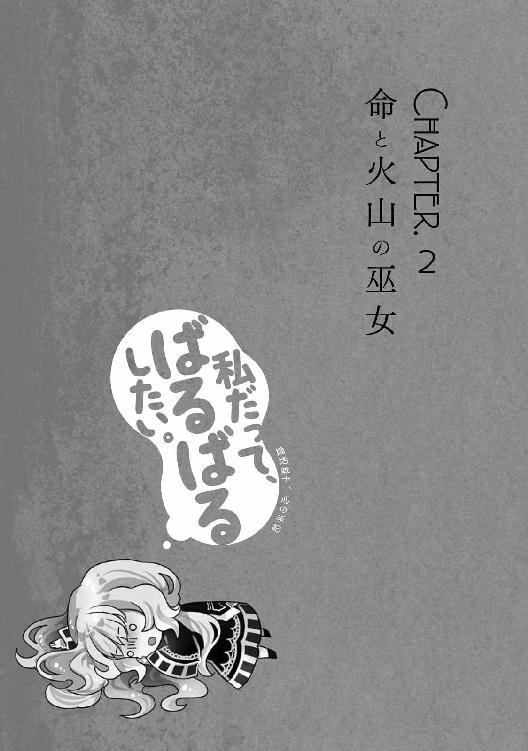
［ Ⅰ ］
「............」
広大な石造りの神殿の奥に、侵し難い沈黙と共に佇む少女がいた。
肩口まで伸びた黒髪は強い癖を持ちつつも、美しく快活な輝きを放つ。切なげに細められた瞳は濃い紫色で、日が沈む空のように安らかな光を湛えている。白く、透き通るような肌を包むのは、薄桃色を基調とし、白銀の装飾がところどころに施された法衣である。
非の打ちどころのない美しい少女が、薄桃色の柔らかい光に背を向け、精緻かつ荘厳な壁画に手を添えて佇む。
それは、完成された一枚の絵画のように、神秘的で儚い光景だった。
「クレアーウィット様。どうか、私達を......巫女アウスティナと、勇者ナシュタールを、あなたの御許へと導いてください」
少女、アウスティナは静謐を破る祈りを残し、神の御許に信仰を届ける巫女と勇者が刻み込まれた、逃れえぬ運命の壁画から離れた。
そして、音もなく身を翻した少女は、背を向けていた光の源に目を向けた。美しく、大きな器の中に咲き乱れる、薄桃色の花弁と白銀の茎を持つ、この世のものとは思えぬ花だ。
柔らかな光がアウスティナの胸元、爆と美を兼ね備えたふくらみに押し上げられた大きな装飾――生命の神クレアーウィットを象徴する〈生命賛華〉の意匠を輝かせた。
「ナシュタール。お待たせ」
「お気になさらず。祈りの時間を待てぬほど、狭量なつもりはありません」
アウスティナの言葉に反応したのは、咲き乱れる花の向こう側に佇む人影。生命の神、クレアーウィットの勇者ナシュタールだ。
薄桃色の光に照らし出されるのは、癖のない白銀の髪、胸元など急所を守る白銀の軽鎧、白を基調とし、そこかしこに薄桃色の装飾が施された法衣、腰に携えた剣。
ただ一点を除けば、生命の神官戦士として標準的な出で立ちである。
「ありがと。でもね、祈ってただけじゃないの」
アウスティナは器の向こう側に歩を進め、ナシュタールに視線を向けて微笑んだ。日没の瞳に映るのは「顔を出しに行きましょう」という言葉と相反する異質なもの。
仮面。
両目に当たる部分に深い覗き穴のついた、顔の上半分を覆いつくす仮面だ。
なまじ、他の装いが標準的であるがゆえに、仮面の異質な存在感が際立ってしまっている。
「では、何を考えていたのですか？」
ナシュタールは問うた。他に誰か見ている者がいれば、お前こそ何を考えて仮面などつけているのだと思うところだ。
しかし、この場にいるのはアウスティナとナシュタール二人だけ。少し前まで、溢れ返るほど押し寄せていた勇者候補の熱気も、神聖な空気に溶けて消えかけている。
「マリアベルのこと、思い出してたの」
アウスティナは答えを返しつつ、懐から髪留め――新品のように手入れされたバレッタを二つ取り出した。片方は薄紫の飾り玉、もう片方は濃い紫の飾り玉がついており、色違いでお揃いだと一目で分かる。
「それは、確か......」
ナシュタールは、二つの髪留めに心当たりがあったのか、仮面の奥で目を瞬かせる。
「うん。こっちは昔、私が身につけてたもの」
アウスティナの眼差しが、薄紫の飾り玉がついた髪留めに向けられる。薄桃色の光に照らされた飾り玉は、朝焼けを思わせる色をしていた。
「こっちは、マリアベルのものなんだけど......ずっと、返しそびれちゃって」
続けて、もう一つの髪留めに向けられた眼差しは、どこか物憂げなものだった。
「そのことを後悔に思うなら、返しに行くべきでしょう。マリアベル様はまだ、メメントモリ神殿にいるはずです」
もっともな意見を述べるナシュタールだったが、アウスティナは難しい顔をして呟いた。
「でもねえ。マリアベルの目を仮面程度でごまかすのは......」
そこまで言って、アウスティナは俯いて考え込んだ。その瞳に映るのは、現在ではなく幼く、遠い過去の景色だ。
「いや......あの子、知らないわ。あなたの顔も、姿も、一度も会ったことないもの」
アウスティナが顔を上げて言い切ると、ナシュタールは大きく頷いた。
「ならば、何一つ問題はありません。旅立つ前の少しの寄り道ぐらい、クレアーウィット様も許してくださるでしょう」
「うん。ありがと」
アウスティナはナシュタールの言葉に微笑を返し、マリアベルのものだという髪留めを懐にしまった。
そして、自分の髪留めで後ろ髪をまとめ、かわいらしく快活なポニーテールを形作る。
「折角だし、これで行くわ」
そう言って、アウスティナは笑みを深めた。巫女ではなく、年頃の少女らしい、誰もがどきりとしてしまいそうな魅力的な笑顔だ。
しかし、ナシュタールは仮面の奥で、小さな子供を見るように優しく目を細めるだけ。
「よいのではないでしょうか。マリアベル様も、昔を懐かしんでくださるでしょう」
ナシュタールの声を合図に、二人は歩き出した。
だが、その歩みを遮るかのように入り口の扉が慌しく開き、薄桃色の法衣に身を包んだクレアーウィット神官が駆け寄ってくる。
「何かあったの？」
ただごとではない様子の神官に対し、アウスティナは神を思わせる慈愛の微笑を湛えて問いかけた。
つい先ほどまで、年頃の少女らしい笑みを浮かべていた顔を、巫女という役割が形作った見えざる仮面が覆ったのだ。
その一声で幾分落ち着いたのか、神官は息を整えて言葉を紡ぐ。
「は、それが......メメントモリ神殿で、生命の邪教徒が騒ぎを起こしたようです」
アウスティナは、神官の言葉にぴくりと眉根を動かしたが、それも一瞬のこと。
「わかった。詳しい話を聞かせてちょうだい」
見える仮面と、見えぬ仮面、異なる二つの仮面を被る巫女と勇者の道は、桃色の欲望を分厚い仮面で覆う巫女――婚活戦士マリアベルの道と交わろうとしていた。
［ Ⅱ ］
世界の中心に位置する都、神殿都市オクタゴナ。
命、火、水、風、地、光、闇、死――全ての神の信仰と神殿を抱き、敬虔な神官やその家族が数多く住まう都は、普段の穏やかさが噓のような賑わいに包まれていた。
都を囲む八角形の外壁には、新たなる神話の始まりを祝う垂れ幕が幾つもかけられ、宗教的装飾が施された石造りの建物が並ぶ大通りには、ところ狭しと色鮮やかな飾りつけの出店が並び、大量の観光客でごった返している。
それもそのはず、オクタゴナは神話祭の初日に八人の巫女が結集し、それぞれの神殿で勇者選定を行う、非常に重要な催しの会場なのだ。
だが、どんな賑わいに包まれた都でも、人のいない静かな場所はある。
そのような場所の一つ、メメントモリ神殿に程近い墓地の、そのまた近くにある小さな公園。
祭の賑わいも届かず、墓地を訪れる人も殆ど知らないような穴場で、密やかに言葉を交わす二つの人影があった。
死の神メメントモリの巫女マリアベルと、勇者アベルカインだ。
「アベルカイン、神殿から出るのを少し遅らせて正解でしたね」
日よけに植えられた木の下で、古ぼけた白いベンチに座ったマリアベルが微笑んだ。
「はい。邪教徒を撃退した噂が広まったのか、見物人も大勢集まりました。一部の人達からは、信仰の光も......仰るとおり、大正解でした」
アベルカインはベンチに座らず、木漏れ日の中、マリアベルを見下ろすかたちで佇んでいた。
注目すべきは、その装いがほぼ一新されていることだろう。
黒を基調とし、白銀の装飾がなされた神官服を着込み、髪色とよく似た灰銀の輝きを放つ金属鎧で胸元を中心とした急所を守り、堂々たる〈獄炎十字〉の意匠を背負った姿は、メメントモリの勇者と呼ぶに相応しい。
神殿を訪れたときと同じ装備は、腰に携えた剣――死想剣だけだ。
「邪教徒は、遙か古より巫女と勇者、そして正しき信仰の敵。それを見事倒したあなたに信仰を捧げるのは当然のことでしょう」
マリアベルの言葉に、アベルカインは静かに頷いた。
遙か古、最初の神話祭は苛烈なる戦いの神話。邪教が蔓延し、欲望と狂信に支配された世界を巫女と勇者が解放する物語なのだ。
「とはいえ、今は過去よりも現在。神殿で信徒になってくださった皆さんに感謝しなければなりませんね。彼らが、自然と噂を広めてくれたのでしょうし」
「はい。とてもありがたいことです」
マリアベルの声にも、アベルカインの声にも、信徒達への感謝の念が溢れている。
元勇者候補は皆、何の見返りも求めることなく、自らが目の当たりにした光景を、神話の生き証人となった興奮もあらわに観光客達に話してまわった。
メメントモリ信仰が弱い原因は、一般人から過剰に怖がられていることだ。その恐怖に、邪教徒撃退という情報が加わったことで、怖いもの見たさの好奇心が作り出された。
お陰で、強烈なデビューを飾った巫女と勇者を一目見ようと、大勢の観光客が集まったのだ。
マリアベルとアベルカインは、このチャンスを最大限に利用した。
神殿から続く大通りにも観光客が増加していると見込んで姿を現すと、軽く手を振ったり、笑顔を振り撒いたりしながら信仰獲得に励んだのだ。
アベルカインが襲撃を警戒し、殺し屋のような視線を垣間見せたりするなど――生真面目さが生み出してしまったマイナス要素もあったが、外面は完璧な巫女であるマリアベルの尽力もあり、そこそこの信仰を回収できた。
メメントモリの巫女と勇者として最高に近いスタートを切り、さらなる信仰獲得も狙えそうな状況でありながら、マリアベル達は人気のない小さな公園へとやってきた。
理由は、幾つかある。
神の降臨、信仰獲得、邪教徒との激闘など、あまりに濃密なスタートによる精神的疲労を癒すため。マリアベル的には未来の夫と静かな二人の時間を過ごすためだ。
「アベルカイン、あなたも座ったらどうです。折角、静かに休める場所に来たというのに」
「いえ、僕はこのままで構いません。反メメントモリ派の邪教徒が、ザグフェル達以外にもオクタゴナに潜伏している可能性がありますから」
マリアベルの純粋な労わりと、隣に座ってもらっていちゃいちゃしたいという欲望は、アベルカインにあっさりと断られた。
今のオクタゴナに、そうそう邪教徒が侵入できるはずがない。
何しろ、巫女や勇者に勇者候補、様々な宗派の神官や神官戦士など、玉石混淆なきらいはあるものの、優れた聖性を持つ人々が大量に集まっているのだ。
邪教徒から漏れ出る歪んだ信仰の気配は邪気と呼ばれ、正しき信仰と優れた聖性を持つ人間に近づくと、お互いに反発するような感覚を生む。
聖性を持つ人々が大量に集まる状況下にあるオクタゴナへの侵入が、邪教徒達にとっていかに困難であるか、幼い子供でもよくわかるだろう。
アベルカインも、そのことはよくわかっている。それでもなお、警戒を一切緩めることなく張り詰めた雰囲気をかもし出しているのだ。
マリアベルは、そんなアベルカインを見上げ、頼もしさと不安を感じながら考え込む。
不測の事態を警戒してるんだなあ。頼もしくて魅力的なところなんだけど......
マリアベルとて、さらなる襲撃を全く警戒していないわけではない。
ザグフェル達は隠密行動に長けていたが、最初から〈不死〉に目覚めてはいなかった。
より強力な狂信の極みに至った、本命が控えているという可能性は否定できないのだ。
でもでも！ あんまり張り詰めすぎると、いざというときに反応が鈍ることもあるし！ 無理しすぎないように気をつけてあげないとね！
未来の夫を支える決意も新たに、マリアベルは張り詰めた緊張を程好く和らげるための言葉を、神秘と慈愛の微笑で飾りつけて紡ぎ出した。
「アベルカイン、あなたの危惧はもっともです」
まず、マリアベルはアベルカインの警戒心を肯定することにした。否定から入るよりも、話を聞いてもらえると思ったからだ。
「しかし、神殿を出るときに教えたはずですよ。あなたが衣替えをしている間、クレアーウィット教団に調査と対処を依頼するよう手配したと」
「それはそうですが。勇者として、あなたを守るのが僕の務めですから」
アベルカインの生真面目な視線が、マリアベルを真正面から見詰めた。
くううううううっ！ いいないいなあっ！ いつか、この真っ直ぐな視線に！ 私への愛が溢れ返るようになったらもっといいなあ！ うへへへ！
荒ぶるマリアベルだが、表面上は穏やかに話を続けた。
「生命の邪教徒から滲む邪気は、クレアーウィットの神官や神官戦士の方が察知しやすいはずです。だから、あまり張り詰めすぎないで、休めるときに休んでください」
同じ神を崇める聖性と邪気は、反発の感覚が強くなり、互いに存在を察知しやすくなる。
アベルカインが、巧妙に邪気を隠していたザグフェル達に先制攻撃を決断したのも〈脈動〉に加えて、マリアベルよりも早く邪気を感じ取っていたからだろう。
ふにゅーんっ！ アベルカインも、神技まで使えるくらいだし！ クレアーウィット様も信仰してるんだろうけど！ だからって、無理をさせる気はないんだからね！
マリアベルの気持ちが通じたのか、アベルカインが少し安心した様子を見せた。
「......そうですね。反メメントモリ派とはいえ生命の邪教徒。対応する教団に任せるのは適切な対処だと思います。少し、気を張りすぎていたようですね」
「ええ、ここは頼りにさせてもらいましょう」
マリアベルは、アベルカインが心から休息を選択してくれたことに安堵して笑顔を深めた。だが、それはあくまでも現実のみを見た場合の話だ。
はああーん。それはそれとして......それはそれとしてえっ！
神秘と慈愛に満ちた理想的な笑顔の下で、マリアベルは欲望に火をつけていた。燃料はもちろん、メメントモリの勇者として、装いを新たにしたアベルカインだ。
ふあああああああんっ！ すっごく似合ってるよ！ この染めちゃった感！ 自分色に染めちゃった感！ 私が逆に染められちゃうこともあるのかな......なんちゃって！
言うまでもないが、アベルカインの衣替えはマリアベルの妄想を助けるためではなく、メメントモリの勇者としてのイメージを重視するためのものだ。
神の前で過剰に着飾るのは褒められた行為ではないが、大衆相手に巫女や勇者としてのイメージを大事にし、適度に着飾るのは必要なことである。
マリアベルもアベルカインも、信仰獲得に積極的だ。マリアベルは、マジメなアベルカインの好感度を上げるため。アベルカインは、混じりっ気なしのガチで信仰心を獲得するため。最終目的は違っても、二人の方向性は同じだった。
「それにしてもアベルカイン。その装い、とてもお似合いですよ」
滾る欲望を神秘の仮面で覆い隠し、朝焼けの瞳と夕暮れの瞳を交わらせながら、マリアベルはアベルカインをそっと褒めた。
「そうでしょうか。僕にはもったいないような良質の品ばかりですが」
「いえいえ、あなたに相応しい装備ばかりです。その装いも、必ずや信仰獲得の助けになるでしょう」
謙遜を押し切る心からの賛辞に、アベルカインは照れ臭そうに頰を掻いた。
マリアベルは、その様子を微笑んで見守りつつ、マントについた糸くずを払ってやる。心の中では微笑みどころか、涎すら垂らして抱きつきたい衝動を堪えていた。
はああああんっ！ 照れてる照れてる！ 可愛いところもいっぱいあるよね！ そういうところ、これからの旅で、もっともーっと発見しちゃうぞ！ ぐへへへ！
そよ風に揺れる木漏れ日の下で、白銀の髪を煌めかせて微笑みつつ、未来の夫とチャームポイントを見つけあい、恋と愛と夫婦生活のスパイスにする。そんな、幸せかつ桃色の妄想に酔いしれるマリアベルだったが――。
「この剣だけ、見た目が少し浮いてしまいましたね」
他でもない未来の夫、アベルカインの言葉が妄想を霧散させる。
「いえ、それほど浮いてはいないと思いますよ」
は、はううーん......
当たり障りのない返事を返しつつ、マリアベルの視線はテンションと共に下降する。白銀の髪を力なく揺らして俯いた眼差しの先にあるのは、鞘に納められた死想剣だ。
死想剣を抜いていれば、ザグフェルにあれほど苦戦することはなかった。鞘をつけたまま戦えば、どんなに愛用している剣でも使用感はまるで違うだろう。そのハンデが、アベルカインを追い込んだ可能性は否定できない。
そもそも、最初から剣を抜いていれば〈不死〉に目覚めさせることもなく、不意打ちに対してカウンターを取った時点でザグフェルを殺していたはずだ。
剣を抜く資格がないなどと、説法さえしなければ。そんな考えが、マリアベルの妄想世界に一片の雪となって舞い落ちる。
むうううううっ！ いや、こういう考えはダメダメ！
マリアベルは、沸き上がる後悔を振り払うように軽く頭を振った。
アベルカインに捨身の姿勢を改めさせる説法は、長い目で見れば絶対に必要なこと。
短期的に悪い副作用が出たからといって後悔や迷いを見せては、それこそアベルカインの足を引っ張ることになる。
よしっ！ 鞘のまま戦うなら、それでもいいよ！ それに、問題はそれだけじゃないし！ こうなったら全部まとめて、しっかりばっちり支えてあげちゃうもんね！
決意と共に、マリアベルの妄想世界へ輝かんばかりの日差しが溢れた。一片の後悔を消し飛ばす光を感じながら、現実世界のマリアベルも顔を上げる。
「ところで、マリアベル様。神殿から戴いた装備は、確かに良質なのですが......」
「まだ、肌に馴染まないのでしょう？ 早めに慣れていただけるよう、暇を見て私と訓練でも......」
そこまで言って、マリアベルはぴたりと動きを止めた。そのまま、ぎこちなく小首を傾げつつ、アベルカインの台詞を心の中で何度も何度も繰り返す。
たった一文字、聞き逃すことのできない単語が幻聴ではないという確信を持ったマリアベルは、震える声でアベルカインに問いかけた。
「あの、アベルカイン？ あなた、マリアベル様と言いましたよね？」
マリアベルは微笑を保って言ったつもりだが、自信はない。心の中では冷や汗を流しながら、どこで好感度が下がったのか思い返していたからだ。その焦りは現実にまで伝染し、張りついたような微笑の頰を冷や汗が一筋流れて落ちる。
「はい、今は人目もありませんから。マリアベル様は神の代行者、従者として適切な態度を取ったまでです」
「え、あの、どういうことですか？」
「ええと、僕は死の神メメントモリの勇者ですから。少し不遜な態度の方が周囲に畏怖を与えて......信仰獲得に繋がるかと思いまして」
そう言うと、アベルカインはマリアベルの瞳を少し不安げに覗き込む。
マリアベルは、微笑を顔に貼り付けたまま驚愕した。
は、はわあああああうっ!? 勇者としてのキャラづけ考えてたぁ!? ほんとマジメだなぁもおおおおっ！ やる気すぎる、やる気すぎるよぉ！
アベルカインの発想は正しい、巫女に様をつけて敬う態度を取るのも正しい。
巫女は神の代行者で、勇者はその従者、立場は勇者より巫女が上なのだ。
でもダメ！ キャラづけはいいけど、私に遠慮しすぎちゃダメ！
マリアベルは、瞼を閉じて考え込む。閉じた瞼の裏に映るのは、暗黒のような未来。それは、アベルカインの感情が巫女に対する尊敬で終わってしまうことだ。
それだけはダメだよぉ！ 夫婦間でも敬意は必要だけども！ 愛がなければ、そもそもゴールインできないよ！ らぶらぶちゅっちゅもできないよぉっ！
現実世界では神秘的で慈愛に満ちた微笑を浮かべつつ、妄想世界で拳を固めたマリアベルは、暗黒の未来を振り払う閃きを求めて己を叱咤した。
マリアベル！ あなたはできる子！ だから、考えるの！ 夜明け......そう、婚活の夜明けを摑むために！ 愛と未来とらぶらぶちゅっちゅを摑むために！
こうして、夜明けを摑んだマリアベルは瞼を開き、朝焼けの瞳でアベルカインを見上げた。
「アベルカイン、よい心がけですが......私のことは、普段から呼び捨てでも構いませんよ」
「それは、少し気安すぎませんか？」
「アベルカイン、気安いからよいのです。神話祭における私達の関係は『親しみ』をテーマにしたいと考えています」
「『親しみ』......ですか？」
不安から疑問に表情を変えて、アベルカインの夕暮れの瞳がマリアベルを見詰めた。
「死への畏怖を大切にすること。それは、メメントモリ様の信仰獲得において当たり前のことです」
「はい」
「ですが、当たり前のことだけをしていては......」
マリアベルは、巫女の威厳を演出すべく溜めを作る。
そして、ここが勝負どころだと判断し、念入りに気合を入れ直して言葉を紡ぎ出した。
「あなたの望む偉業に挑める程に、信仰の力が獲得できないかもしれません」
アベルカインは、マリアベルの言葉に目を丸くした。その発想はなかったという様子だったが、すぐに驚きを抑えて真剣な表情になる。
やったっ！ 食いついてきたぁっ！
内心の昂ぶりを表に出すことなく、マリアベルは厳かに話を続けた。
「そこで、何故『親しみ』なのか。あなたが疑問に感じるのも、無理はないと思います」
「はい。メメントモリ様のイメージには合わない気がしましたが......」
「ふふ、正直ですね。でも、考えてみてください」
マリアベルは、祈りを捧げるかのように胸元で手を組んだ。
そして、巫女の神秘と少女の可憐さを兼ね備えた渾身の微笑を浮かべる。何度も何度も鏡の前で練習した、婚活に対する執念の産物だ。
「メメントモリ様は、少し怖がられすぎています。死の神を恐れるな、と言うのは無理な話ですけれど」
「それが、信仰獲得の妨げになる......ということですか」
話の内容が気になってしょうがないのか、渾身の笑顔もアベルカインには通じない。
マリアベルとしては、頰を赤らめてくれたりしないかなどと、淡い期待を薄い胸に抱いていたのだが――今は、それよりも大事なことがある。
「そこで『親しみ』が大事になってきます。周囲の人も『親しみ』を感じるような、気安くも暖かな信頼感を作り上げるのです」
「なるほど......過剰な恐怖を中和しようと言うのですね」
「そう、その通りです。それに、普段が暖かで穏やかだからこそ......」
「ここぞと言うときの厳しい態度が映え、信仰獲得に繋がると......」
アベルカインは、元勇者候補を一喝したマリアベルの姿を思い返した。穏やかな態度を保っていた巫女に、あんな激しい一面があるのかと驚いた記憶が鮮明に蘇ってくる。
ど、どうかなあ？ これ、苦しくないよね？ さあ、フレンドリーに！ フレンドリーに行こうよ！ そして、いつかラブリーに移行するの！
夕暮れの瞳を閉じ、腕組みをしながらアベルカインは考え込んだ。やるべきことをやり尽くし、結果を待つだけの時間が、マリアベルには果てしなく長く感じられる。
「わかりました。マリアベル、その方針で行きましょう」
やがて、夕暮れの瞳を開いたアベルカインは、力強く頷いて灰銀の髪を揺らし、褐色の肌に爽やかな笑みを浮かべて同意した。
その表情と言葉は、マリアベルの心に婚活の夜明けとなって降り注ぐ。
「わかってくれましたか......！」
やった、やったーっ！ さようなら尊敬！ こんにちは愛情！
婚活の夜明けに照らされ、妄想世界で飛び跳ね回って喜ぶマリアベル。その姿を、メメントモリは眉をひくつかせながら見守っていた。
マリアベルよ――尊敬を完全に手放してどうする。
メメントモリの額に青筋を立てさせつつ、マリアベルは、さらなる成果を求めて言葉を紡ぐ。
「では、早速......『親しみ』による信仰獲得を試してみるとしましょう」
「試す？ どういうことですか？」
問い返すアベルカインに対し、マリアベルは漏れ出る欲望に頰を染めて立ち上がった。
「少し、子供っぽいと思われるかもしれませんが......」
マリアベルは、欲望で染まった頰さえも、恥じらいに顔を伏せるような動きで利用した。恐るべき婚活戦士の策謀が、桜色の唇から美しい声に乗って紡ぎ出される。
「多くの人々と同じ目線で、オクタゴナの賑わいを楽しむのはどうでしょうか」
「観光客からの、さらなる信仰獲得を狙うわけですか。やってみる価値はありそうですね」
「ええ、それに......早めに信仰獲得に励めば、それだけ私達の加護も強まります。そうなれば、神殿のときよりも、余裕を持って多くの人々を守れるようになるでしょう」
親しみ作戦は無理矢理なこじつけも含まれているが、今の台詞はマリアベルの本心だ。弱き人々への配慮を何気ない台詞にちりばめられる、巫女としての聖性の深さが覗えた。
「それに、アベルカイン。神殿での戦いを見るに、あなたは通常の加護が不完全にしか発動していないようです」
アベルカインの脳裏に、ザグフェル相手に力と速さで押されたことが思い出される。
いかにメメントモリの信仰が弱いと言っても、身体能力を増強する勇者の加護が発動していれば、押されるようなことはありえない。
では、アベルカインが勇者として不適格だと加護を剝奪されているのかと言えば、そうではない。どんな打ち合いでも壊れない鞘や、魂を引き裂いた右腕など、加護の影響と思しき数々の現象がその証拠だ。
「恐らく、右眼、右腕、そして剣。あまりに強力な三つの加護に、肉体を強めるための力を取られているのでしょう」
これが、鞘の件以外にも早急に解決しなければならない大きな問題だ。
しかし、マリアベルは深刻さを感じさせぬ、暖かな笑顔でアベルカインを激励した。
「神殿を出てからここまで来る間も、かなりの信仰は獲得できました。この調子で信仰を獲得すれば、本来の勇者の加護も余裕を持って発動し、あなたの助けになるでしょう」
「はい、がんばりましょう」
アベルカインの瞳には、マリアベルに対する好感がありありと浮かんでいる。
自分にはない発想で、積極的な信仰獲得を目指す巫女が頼もしくて仕方がない。夕暮れの瞳は、大いなる信頼の輝きを宿していた。
ふにゅうううううううんっ！ やったやった！ やったああああっ！
暖かな瞳と向き合いながら、マリアベルは妄想世界で身を震わせた。跳ね回るどころか、桃色の翼を生やして飛び立つほどの喜びに包まれたのだ。
お祭りぃ！ デートのぉ！ 大開催だよーーーーーーっ！
喜びに満ちた叫びが響き渡ると、妄想の空に浮かぶ雲が、様々な欲望を象った姿に変化した。
寄り添って露店を見てまわったり、別々のお菓子を買って食べさせあったり、道行く人達から「巫女と勇者というより、恋人みたいですね」とか言われてみたり、顔を見合わせて頰を赤らめあってみたり、らぶらぶちゅっちゅしてみたり――あらん限りの欲望が、ふわふわの雲となってぶちまけられている。
その様子を見ていたメメントモリは、強烈な眩暈にふらつきながら呟いた。
マリアベルよ――いや、これ以上は止そう。
中途半端に発言を取りやめ、メメントモリは俯いた。どうしても、口に出したくない単語があったからだ。
とりあえず、らぶらぶちゅっちゅで物事を締め括る癖だけはどうにかせよ。
本当は、このように言及したかった。だが、らぶらぶちゅっちゅと口に出してしまうと、自分の中の何かが終わる。得体の知れぬ恐怖と予感が、メメントモリを蝕んでいた。
［ Ⅲ ］
マリアベルとアベルカインは公園を出ると、一番近い大通りに向かって歩を進めた。
ひっそりと静まり返った路地には、墓地に向けるかたちで壁や屋根に〈獄炎十字〉を飾りつけた建物がぽつぽつと見受けられる。
それらは全て死者の安息を祈り、自らも死に引きずり込まれぬようメメントモリの守護を請う、二つの意味が込められた宗教的装飾である。
うんうん。感心感心。こういうの見ると、メメントモリ様の信仰も捨てたもんじゃないって実感できるよね
お祭りデートへの期待と、崇める神に対する信仰、そして、近づいてくる大通りの活気を実感して機嫌をよくしたマリアベルの足取りが少しだけ軽くなった瞬間――黒い法衣のメメントモリ神官が大通りの方から歩いてきた。少し痩せ気味で、人のよさそうな中年男性だ。
「これはマリアベル様、それに、邪教徒を討伐した勇者様ですね。此度の神話祭、無事のご帰還を心よりお祈り申し上げます」
メメントモリ神官は、マリアベル達に気づくと丁寧に頭を下げて挨拶した。
信仰獲得への期待ではなく、無事の帰還を祈る言葉が自然に出てくる辺りに、人柄のよさが滲んでいる。
「ありがとうございます。あなたは確か、この辺りの墓地を管理している神官でしたね」
マリアベルが足を止めて返した言葉に、メメントモリ神官は顔を綻ばせた。
「私のような者を覚えていてくださるとは、光栄です。巫女様、そして勇者様。どうか、多くの人々の記憶に残るような、よい旅路を」
「はい、必ずや。あなたの祈りに応えてみせます」
アベルカインの生真面目な返事に微笑を返し、メメントモリ神官はもう一度頭を下げてから、二人とすれ違って歩いてゆく。向かう先は、彼が管理しているという墓地だろう。
祭の賑わいから離れ、自分の仕事をいつもどおりにこなす。そんな人間もいるものだ。
「神官の顔を、全て覚えているのですか？」
歩みを再開したアベルカインが問いかけると、マリアベルは恥じらいに頰を染め、自慢するようなことではないという謙虚な心を嫌味なく滲ませて答えを返す。
「オクタゴナには、よく来ましたから。ここで長く勤めているメメントモリ神官の顔は、ほとんど覚えています」
ふにゃあああーんっ！ 好感度上がってる上がってるぅ！ アベルカインって、マジメで清楚な感じの娘が好みなのかな？ それならそういう方向性で行くけどさあ！
表面は清楚かつ神秘的、内面は不純かつ婚活的なマリアベルは、近づいてくる大通りの活気に呼応するかのように、妄想世界の活気を天井知らずで上げまくった。
それはそれとして！ 大通りに出たら！ さりげなくスキンシップはしたいよね！ さあ、どんと来い！ やって来い！ スキンシップチャンス！
桃色の翼で妄想の空を舞いながら、マリアベルは祈った。足の踏み場がないほど、圧倒的な人ゴミが大通りに溢れていることを祈りまくった。
溢れる人！ はぐれる不安！ ここから導き出される答えは一つ！
マリアベルは欲望を荒ぶらせ、足取りに合わせて揺れるアベルカインの手を見詰めた。
はぐれたら困ります！ 手を繋ぎましょうかっ！ マリアベルうぅうううううっ！ はい、喜んで！ アベルカイーーーーーンッ！ うへへへへへへっ！
欲望の爆発と共に、妄想の空で劇団マリアベルの幕が開く。しかも、単純な一人芝居ではない。妄想の空に相方が――桃色の翼を生やしたアベルカインがいるのだ。
マリアベル、手を繋ぐだけでは、不安になってきましたっ！ アベルカイン、私も、私もそう思っていましたともっ！ さあ、さあさあ！ 行くよ！ 手から腕、さらなる密着のステージへゴーゴーゴーーーーッ！
欲望の叫びを妄想の空に響かせ、マリアベルは空想上のアベルカインに飛びついた。褐色の腕にしっかりと抱きついて身を預け、無駄のなさすぎる胸元を押しつける。
押しつけられる清らかで貧しい柔らかさが！ アベルカインの宗派を貧乳派へと導く！ よし、これだよこれ！ お祭りデートの狙いはこれで行こう！
圧倒的なテンションで繰り広げられる一人芝居は、一人ミュージカルと言っても過言ではない激しさへと成長していたが、現実には頰を染める程度の影響しか及ぼさない。
婚活戦士の本性を隠す神秘の仮面は、無駄のない乳房の如く揺ぎ無く、鋼鉄のような強度でマリアベルの顔に貼りついていた。
だが、人間には決して見通せぬ――むしろ、見通さない方がいいマリアベルの心を、冷たく暗い死の世界から見通して、溜息を漏らす神がいた。そう、死の神メメントモリだ。
マリアベルよ――お前の妄想に、アベルカインまで駆り出すのは自重できぬのか。
桃色の翼を生やした空想上のアベルカインは、メメントモリに強烈な不安を与えた。現実のアベルカインまで、婚活戦士に汚染されるのではないかという不安である。
しかも、マリアベル曰く『お祭りデート』は始まってすらいない。これで、デートが始まったらどうなってしまうのか。メメントモリの不安に、冷や汗交じりの恐怖が滲んだ。
しかし、神の不安も恐怖も、マリアベルとアベルカインの歩みを止めることはできなかった。二人は路地から抜け出て、大通りに辿りついてしまったのだ。
「なかなかの賑わいが続いていますね、マリアベル」
アベルカインの、なかなかの賑わいが『続いている』という言葉。それは公園で休息を取り、戻ってきたあとも、そこそこの観光客が残っていることに対する感想である。
「そうですね。なかなかです」
くううううううっ！ うまく行くと思ったのに！ 思ったのにぃ......
メメントモリ神殿と広場を結ぶ大通りには、マリアベルが期待したような足の踏み場もない壮絶な人ゴミは存在していなかった。
うーん、神殿を出た直後と比べると、人が少なくなってるなぁ。そこそこ注目してくれてるみたいだけど
マリアベルは、アベルカインと共に周囲を見回し、観光客の注目を浴びていることを確かめながら、人が少なくなった原因を考察する。
そして、すぐに見つかった答えはマリアベルにやるせない悲しみを与えた。
向かって右、神殿に向かう通りを見ても、向かって左、中央広場に向かう通りを見ても、明らかに露店の数が少ないのだ。
他の神殿と中央広場を結ぶ大通りには、もっと沢山、ところ狭しと露店が並んでいるはずなのに、メメントモリ神殿から続く大通りには、まばらにしか露店が存在しない。
理由は明白、メメントモリ信仰の弱さにある。露店商達はメメントモリ神殿から続く大通りは観光客が少なく、集客が見込めないと判断しているのだ。
そして、露店の数が少なく、見て回るものもないので、観光客達は他の巫女や勇者を見に行ったり、もっと賑わっている場所へと姿を消してしまったというわけだ。
「アベルカイン、どのお店に行きましょうか」
まあいいよ！ それならそれで、のんびりお祭りデートを楽しんじゃうもんね！
マリアベルは悲しみを振り払い、前向きな笑みを浮かべた。
他の神殿と中央広場を結ぶ大通り――生命や火、光など人気の高い神に関連する場所ならば、マリアベルの望むような人ゴミは存在するかもしれない。
だが、マリアベルは移動など微塵も考えず、メメントモリ神殿から続く大通りでお祭りデートを楽しむことを選んだ。未来の夫との幸せな思い出を、敬い、崇める神、メメントモリの近くで作りたかったからだ。
死の世界で見守るメメントモリも、婚活魂と直結しつつも純粋で輝かしいマリアベルの信仰心は認めていたし、心から褒めてあげてもいいと思っていた。
「どの、と言われると迷ってしまいます」
そう言って周囲を見回すアベルカインの表情には、若干の緊張と好奇心が混在している。緊張は反メメントモリ派の襲撃に備えて、好奇心は色とりどりの露店に対する年相応の少年らしい感情だろう。
「ふふ。ならば、片っ端から楽しんでしまえばいいのです」
マリアベルは、そう言って微笑むと、アベルカインを伴って正面の露店に向けて近づいていった。輪を投げる手が描かれた看板を掲げた露店である。
すると、不精髭を生やし、薄緑色の手拭いを頭に巻いた店主が、にこやかな笑顔で二人を出迎える。その体からは、拍子抜けするほどあっさりと青白い信仰の光が溢れ、マリアベルの胸元へと吸い込まれていく。
「こりゃどうも、メメントモリの巫女様。そちらの勇者様ともども、見事なスタートを切ったようで。お陰で、随分と儲けさせていただきましたよ」
「まあ、調子のいいことを言って」
「はは、露天商なんてのは調子のいい人間でないと勤まりませんよ。ところで、わざわざ小言を言うために来たわけじゃあないですよね」
冗談めかした軽やかなマリアベルの追及に、店主はバツが悪そうな笑顔で頭を下げつつも、冗談めかした軽やかな声音で問い返した。
「はい、私もこちらの勇者......アベルカインと共に、この賑わいを楽しもうと思いまして」
「そりゃあいい。いきなり邪教徒の討伐なんて大仕事を片づけたんですし、ちょっとくらい遊んでも罰は当たりませんよ」
うんうんと頷きつつ、店主は露店の内側へと掌を向け、階段状の段差をつけた横長の台を指し示す。
その上には、お菓子や玩具が目立つ場所にぽつぽつと、隅の方には硬めの縄を丸めたような輪が束になって無造作に置いてある。
「ここはどういう店なのでしょう」
このような露店は初めてなのか、アベルカインが素朴な疑問を口にした。
「ははあ、勇者様は初めてですか。この輪を投げて、お菓子や玩具に通す遊びで代金を頂く店です。輪投げ屋ですよ」
すると、店主は親切に説明しながら束になった輪から一つ手に取り、飴玉の袋詰めに狙いをつけて投げてみせる。見事に輪を通せば格好もついたが、店主の投げた輪は袋に弾かれて台の下に落ちた。
「おっと、外れてしまいました。見事に輪を通せば、その品物は差し上げます。巫女様、勇者様、三回ほどサービスしますので遊んでみますか？」
強烈なデビューと信徒達の噂で観光客を集めてくれたことに恩義を感じているのか、店主は実に友好的な態度で輪を三つ差し出してきた。
「アベルカイン、お先にどうぞ」
マリアベルは三つの輪を受け取ると、一つアベルカインに差し出した。
「そうですね。では......」
台の上を見回しながら、アベルカインはマリアベルの差し出した輪を受け取った。そして、迷いなく狙いをつけ、手首のスナップを利かせて輪を投げる。
「おっ」
店主が驚いたような声を上げる。アベルカインの放った輪は、驚く店主と微笑を浮かべたマリアベル、遠巻きに見守る観光客達の眼差しの中、飴玉の袋を輪の内側へと収めてみせた。
「流石は勇者様と言うべきでしょうか。投げた瞬間、これは取られるなと思いましたよ」
手放しの賞賛と共に店主が差し出した飴玉の袋を、アベルカインははにかんだような笑みを浮かべて受け取った。そして、袋についた紐を腰のベルトに結びつけて固定する。
ふ、ふわあああああっ！ いいなあ、今の笑顔いいなあ！ 飴玉よりもぺろぺろしたいよ！
妄想世界で欲望の叫びを上げるマリアベルのように、ぺろぺろしたいと思ったかどうかは定かではないが、驚くべきことに――信仰の光が数人の観光客から飛んできた。
親しみで恐怖を中和するという、欲望から生じたこじつけが効果を発揮してしまったのだ。
「マリアベル、次はあなたが」
飴玉の袋に続いて信仰まで獲得して上機嫌なのか、アベルカインは少し弾んだ声でマリアベルにも輪投げを勧めてきた。
「そうですね。私は何を取りましょうか......」
マリアベルは何気なく景品を見回すと、少し悲しげに眉根を寄せた。朝焼けの瞳に映っていたのは、隅の方に置かれた小さな人形だ。
黒い髪、薄紫の瞳、黒い法衣、胸元の〈獄炎十字〉――マリアベルとアベルカインの見た本人とは若干の差異があるものの、間違いなくメメントモリの姿を模した人形である。
「あ、それはあんまり狙う客がいないので、隅の方に......」
店主は申し訳なさそうに言うと、メメントモリ人形を真ん中に移動させようとした。
「いえ、そのままで構いません。そのまま取ります」
マリアベルは、それを穏やかな、しかし逆らいがたい声と態度で制すると、気合を入れて輪を構え、メメントモリ人形に狙いをつけた。
んもー！ 何でみんな、そんなにメメントモリ様を怖がるかな！ メメントモリ様、すっごく優しいしかわいいじゃん！ 胸も小さいじゃん！
マリアベルは清く貧しい乳房が震え、揺れるような錯覚を覚えるほど憤慨していた。
そもそも、メメントモリは善良な魂を慈しみ、死後の安息を与える神。
悪しき魂を無慈悲に罰し、裁く神でもあるのは事実だし、そのような側面は怖がられるくらいがちょうどいい。
だが、優しく慈愛に満ちた側面を無視するような、過剰な恐怖には納得できないのだ。
メメントモリは、そんなマリアベルの憤慨を微笑ましく思いつつも、最後につけ加えられた余計な一言に眉根を寄せた。
マリアベルよ――わらわの現し身はお前よりも見た目の年齢は下。胸が育っておらぬのも、無理はあるまい。
すると、マリアベルは突っ込みが聞こえているかのような叫びを妄想世界で炸裂させた。
さあ行くよ！ メメントモリ様の小さな胸に当てるつもりで！ ゴーッ！
自分自身とメメントモリの心を傷つけながら、マリアベルは白銀の髪を揺らし、巫女の法衣を翻し、アベルカインの投擲よりも派手で大仰なアクションで輪を放った。
「あー」
アベルカインのときとは違い、店主は残念そうな声を上げた。
マリアベルの放った輪は、メメントモリ人形を大きく外れて露店の外にまで飛んで行ってしまったのだ。派手なアクションは、全く成果に繋がらなかった。
「くっ、外してしまいました......」
「はは、力を入れすぎましたね。あと一回ありますし、がんばってください」
店主はマリアベルを励ましつつ、露店の外、石畳の上に落ちた輪を拾いに行った。マリアベルは店主の姿を視界から外し、傍らのアベルカインをちらりと仰ぎ見る。
「マリアベル、自分で取りたいのですか？」
その眼差しから迷いを察したのか、アベルカインが視線を合わせて問いかけた。
「はい、つまらない意地のようなものですが......是非、私が」
すると、見かねた店主が輪を拾って戻ってきながら声をかける。
「うーん、でも、さっきの感じだと難しいんじゃないですかね。もうちょっと、取りやすい場所に置いても構いませんよ」
ありがたい申し出だが、マリアベルはそれでも迷いを見せた。
う、うーん。あのまま取ってあげたいんだよね。どうしようかなあ......
隅に追いやられたメメントモリ人形を、自分の手で救ってあげたい。やっていることが遊びでもあるせいか、マリアベルの敬虔な信仰心に、年頃の少女らしい意地が混じっていた。
「いえ、そのままで構いません。マリアベル、人形の方を向いて輪を構えてください」
前半は輪投げ屋の店主、後半はマリアベルに向け、アベルカインが穏やかに言葉を発した。
「え？ こうですか？」
店主は無言のまま頷き、マリアベルは何のつもりか疑問に思いつつも構えを取る。
「そうです。そのままでお願いします」
アベルカインはそう言うと、マリアベルの背後に回り、ぴたりと距離を縮めた。そして、輪を構えたマリアベルの白い右手に、自らの褐色の右手を添えたのである。
はっ、はっ、はわあああああああああああああああああああああああああうっ!?
突然の、一切の邪念のないスキンシップに、マリアベルの妄想世界は激震した。
ちょっ!? ええ!? 何で、ええっ!? ご、ご褒美ですかっ!? メメントモリ様を、すみっこからお助けしようとしたご褒美ですかあああああああああっ!?
妄想の花畑を揺らし、桃色の花吹雪を激しく舞わせ、マリアベルは叫んだ。
そして、近い将来――手だけではなく、足や腰まで取られたりなんかしちゃったりする、夜の戦いに思いを馳せて踊り狂った。
「マリアベル、腕全体を使わないで。手首を使って、輪を水平に安定させることを意識しながら投げてください」
輪どころか、欲望を滾らせすぎて色んなものを水平に保てそうにないマリアベルとは対照的に、アベルカインはあくまでも邪念なく、適切な指導を行ってみせる。背後から腕に手を添えたのは、先ほどのように腕ごと振りかぶって暴投するのを抑止するためだ。
「は、はい......わかりました」
神秘の仮面を辛うじて維持しながら、マリアベルはこくこくと何度も頷いた。
そして、何を思って密着ご褒美スキンシップを行ってきたのか答えを出す。
こ、この感じ......そうか！ アベルカインは、ピュアな武術脳なんだ！
武術脳とはマリアベルの作った造語。敬虔で武術に対してひたむきな神官戦士に多い思考形態を指す言葉だ。
武術脳の持ち主は、恋愛に対する興味、知識が薄い反面、武術、あるいは体を動かすことに対する純粋さと親切心が重なり合い、とんでもなく大胆なスキンシップを行うことがある。
少なくともマリアベルはそう分析していたし、その分析は現実となった。ぴたりと寄り添う密着指導は、大胆なスキンシップは夢ではないのだ。
ふわあああああああああっ！ 当たってるよ私の分析ぃ！ よし、よし、行くよ！ 愛し合う二人の共同作業で！ メメントモリ様を救い出すよぉっ！
妄想世界でも、現実世界でも、マリアベルはアベルカインの導きに従って構えを取った。同じ姿勢、同じ気合、表情だけが理想と欲望の二つに分かたれている。
「えいっ」
かわいらしい掛け声と共に、現実のマリアベルが輪を放る。手首を使い、輪を安定させることを重視しつつメメントモリ人形に狙いをつけた投擲だ。
「おおっ」
店主が、アベルカインのときよりもほんの少しだけ驚いた声を上げる。その声が予言であるかのように、マリアベルの投じた輪はメメントモリ人形を優しく包み込んで着地した。
「やりましたね。マリアベル」
吐息のかかるような距離から、アベルカインの祝福が浴びせかけられる。
マリアベルは興奮しすぎて鼻血が出るのではないかと心配しつつも、桜色に染めた頰を見せつけるように、ゆっくりと振り返って小さく言葉を発した。
「あの、それはよいのですが......す、少し、近いです」
んにゅううううう！ 流石に名残惜しいけど、ここはこれで！ ここは引くことで、アベルカインに意識してもらう！ フラグを立てる状況だよ！
マリアベルの狙いは、的中した。
アベルカインは、稲妻に打たれたかのように驚き、慌てた様子で距離を離して頭を下げた。その頰は、微かに赤らんでいる――フラグが立ったのだ。
「も、申し訳ありません。とんでもない失礼を......」
現実世界のマリアベルはにこやかな笑顔で首を振った。
「謝ることなどありません。あなたのお陰で、こうしてメメントモリ様の人形に輪を通すことができました」
ぐへへへへ！ 謝る必要なんてないない！ 今後もよろしく！ 積極的なスキンシップを、この私、あなたのマリアベルによろしくお願いします！
妄想世界のマリアベルは、喜びと恥じらいに加え、欲望と鼻血をトッピングした笑みを浮かべていた。壮絶な表情である。
そのことをただ一人見抜けるメメントモリは、死の世界で複雑な表情を浮かべて呟いた。
マリアベルよ――まあ、うん、その人形、大切にしてくれればそれでよい。
欲望に突っ込むか、信仰心を褒めるか、迷った末にメメントモリの口から出てきたのは、実に当たり障りのないアドバイスだった。
［ Ⅳ ］
密着スキンシップとメメントモリ人形の救出は、思わぬ信仰獲得チャンスを生み出した。
周りで見ていた観光客の子供が、自分にも輪投げのコツを教えてほしいと申し出て来たのだ。しかも、最初の一人を引き金にして、何人もの子供が自分も自分もと群がってきた。
「構わないよ。さ、こっちにおいで」
アベルカインは優しい笑顔で子供達を迎え入れ、輪投げ屋の店主は料金はちゃんと払ってもらうよと子供達に念を押す。
マリアベルはメメントモリ人形を胸元に抱え、その様子を微笑を浮かべて見守った。
ふにゃああああああああああああんっ！ いい！ 今の笑顔いい！ 私との愛の結晶にも、あんな笑顔向けたりするのかな！ いや、もっと優しい笑顔で来るよね！ 二人の愛の結晶には、特別な笑顔を向けちゃうよね！
斜め上の発想力で幸せな未来に思いを馳せるマリアベルを他所に、アベルカインは適切な指導で子供達を次々と輪投げの名手に仕立ててゆく。
微笑ましい『親しみ』を生み出す光景は、恐怖を見事に中和した。遠巻きに見守っていた観光客の一部が信仰の光を溢れさせ始めたのだ。
はうはうはうーんっ！ 子供達と戯れるアベルカイン、いいないいなぁ！ でもでも、そろそろ私とも戯れてほしい！ ああでもっ、あの笑顔を見守りたい！ ぺろぺろしたい！ どうするか迷っちゃう......
妄想世界で「迷っちゃうな！」と言い切る直前――マリアベルは未来の夫の笑顔から視線を逸らした。朝焼けの瞳が向けられたのは大通りの向こう側、中央広場の方向だ。
「マリアベル、あの店などどうでしょう。......マリアベル？」
アベルカインは、マリアベルの無反応に怪訝な顔を向けた。
そして、同じように中央広場へと視線を向ける。
笑顔の消えた顔は、敵襲の可能性を考えているのか緊迫感に満ちていて、子供達は思わず距離を取ってしまう。
く、ああっ、ああああああああっ......揺れてる！ 揺れてるよぉ！
マリアベルは、見ていた。近づく人影の一点を、ただ只管に見ていた。
人相だとか、着ている衣服だとか、杖らしきものを携えているとか、他のあらゆる特徴を完全に無視して、一歩一歩、歩みを進める度に激震する――薄桃色の法衣に包まれた、大きな乳房を見ていた。嫉妬を滾らせて見詰めていた。
ふるん、ふるん。
やがて、マリアベルは妄想世界に幻の音を生み出した。揺れ動く胸と嫉妬を源に、悲しみに満ちた幻聴を作り出したのだ。
ぷるん、ぷるん。
揺れ動く胸が近づくにつれ、幻の音が激しさを増す。
やがて、観光客や露天商達もマリアベルの視線の先にいる人物に気づいた。不幸中の幸いというべきか、胸を凝視していると気づいた者はいない。
ぶるん、ぶるん。
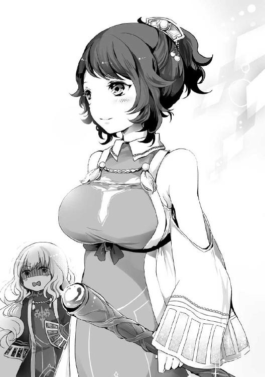
あ、あうあうあうあう！ あ、アベルカイン！ アベルカインは大丈夫だよね！
ボリュームを上げ続ける幻聴の影響で、硬直から解き放たれたマリアベルは、焦りと不安を、理想の巫女の仮面から滲ませて、アベルカインの横顔を確認した。
「マリアベル、あのお方は......」
アベルカインは、緊迫感と入れ違いに若干の驚きを顔に浮かべ、近づいて来る人影を見ていた。その表情に、揺れ動く乳房に対する邪念は感じられない。
よ、よかったあ、大丈夫。アベルカインは、あの激震に惑わされてない！
焦りと不安を安堵に入れ替え、穏やかな笑顔で外面を取り繕いつつ、マリアベルはアベルカインに言葉を返した。
「は、はい、彼女は......あなたの、察する通りの人物です」
薄桃色の法衣を翻し、激震と共に近づく人影が何者なのか、マリアベルは言葉を濁した。もったいつけているわけではなく、奇怪なあだ名を吐き出すのを堪えたのだ。
くああああうっ！ あ、危ない危ない！ 危うく、活火山ですって言うとこだったよ！
ばるん、ばるん。
同時に、いよいよ『ふ』の派生では処理できなくなったのか、マリアベルの幻聴はボリュームと内容を豪快なものに変化させた。
その瞬間、死の世界にメメントモリの呟きが漏れる。
マリアベルよ――最初から、お前の心に響く音は、人の胸が発する音ではなかったぞ。
的確な突っ込みを合図にしたわけではないだろうが、マリアベルが活火山と呼びかけそうになった人影が歩みを止めた。
同時に、白銀の輝きを放つ杖の下端が、硬い音を立てて石畳を小突く。
先端は花が開くような、水が噴き出すような――美しくも不思議な意匠が施され、柄の部分には植物の蔦が二つ交差するように絡みつく。美術品の如き芸術性を持った杖である。
「メメントモリの巫女マリアベル、久しぶりね」
朗らかな声でそう告げたのは、杖の主たる美しい少女――生命の巫女アウスティナであった。
向き合って並び立つとよくわかるが、マリアベルとアウスティナ、二人の美しさは見事なまでに対になっている。
まず、マリアベルの白銀の髪に対し、黒髪。癖のある髪質は似ているが、アウスティナの髪はマリアベルよりも短めで、髪型も後頭部でまとめたポニーテールと差異がある。
次に、マリアベルの薄紫の瞳に対し、夕暮れの向こう側、日没を思わせる濃い紫の瞳。どちらもぱっちりとした瞳の美しさが際立つ目つきをしているが、アウスティナの方が若干釣り目がちで気が強く見える。
最後に、マリアベルの無駄のない壁に対し、何かを噴き出しそうな活火山。
これが、最大の対比である。
アウスティナの胸が『ばるん』なら、マリアベルの胸は『つるん』――そのくらい、絶望的なまでの格差が存在していた。
「ええ、ええ......本当に、お久しぶりです」
マリアベルは、神秘と慈愛に満ちた巫女の微笑を浮かべ、薄桃色の法衣に身を包んだ、自分と対照的な少女の名を声に乗せた。
「生命の神。クレアーウィットの巫女、アウスティナ......」
溢れんばかりの聖性をまとい、意味深に対峙する二人の巫女。傍目にはそうとしか思えない状況で、妄想世界のマリアベルは戦士の咆哮を上げて拳を固めた。
んにゃあああああああああああっ！ アウスティナ！ 許さない、許さないよ！
妄想の花畑を貫いて、溶岩を垂れ流す二つの活火山がマリアベルの眼前に出現する。
その激震で！ アベルカインを惑わすのだけは！ 絶対に許さないよおおおおおおっ！
無駄に壮大なスケールで繰り広げられる一人相撲を見守るメメントモリは、呆れるでも、慄くでも、蔑むでも、頭痛を覚えるでもなく、死の世界でほのかな笑みを浮かべた。
マリアベルよ――本当に、その人形を大切にするつもりなのだな。
活火山を相手に激しい戦意を滾らせ、拳を固めて一人相撲を繰り広げようと、マリアベルはメメントモリの人形を優しく、一切の余計な力を込めることなく薄い胸に抱き続けていた。
荒れ狂う溶岩のような嫉妬の奔流と、アベルカインを爆乳から守る決意の只中にあっても、マリアベルは、その感情を八つ当たりに変えたりはしない。
優しくも清らかな聖性を、メメントモリは暖かな微笑みで見守っていた。
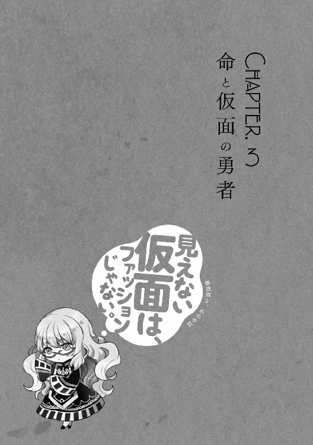
［ Ⅰ ］
アウスティナ、あなた！ 勇者候補がどれだけいても！ 一番いい人材を！ すぐに選び出せるだけの洞察力を持ってるでしょおおっ！ なんで、まだオクタゴナでだらだらしてるのおおっ!?
「あなたはもう、オクタゴナを出発しているとばかり思っていましたが......」
マリアベルは慈愛に満ちた微笑のまま、美しい白銀の髪を揺らして小首を傾げて、もっともな疑問を口にする。
「メメントモリの勇者が命脈流の達人と聞いてね。顔を見に来たの」
アウスティナは、獲物を前にした獣のように楽しげな笑顔でアベルカインに声をかけ、目を合わせただけでもどきりとしてしまいそうな、魅力に溢れた眼差しを向けた。
「メメントモリの勇者、アベルカインです。生命の巫女アウスティナ様、お目にかかれたことを光栄に思います」
しかし、アベルカインは動じない。メメントモリの勇者として、神技を授かった武人として、堂々たる態度でアウスティナの眼差しを受け止めたのだ。
「はじめまして、アベルカイン。隙のない佇まい、堂々とした振る舞い。クレアーウィット様が神技を授けるのもよくわかるわ」
「ありがとうございます。神技を授かった身でありながら他の神の勇者を務めること、どうかお許しください」
やや硬さはあるものの、アベルカインはアウスティナと友好的なやりとりを展開し、仕上げに佇まいを正して頭を下げた。
うにゃああああっ！ 流石だよアベルカイン！ 爆乳に動じない！ 活火山に揺るがない！ 溶岩に呑み込まれない！ 欲を言えば、貧乳には動じてほしいけど！ ささやかなふくらみを愛し！ 慈しみ！ ちゅっちゅするような人になってほしいけど！
逬る欲望の祈りは嫉妬を中和し、活火山に対する警戒を少しだけ薄れさせた。
「こら」
その瞬間、アウスティナはアベルカインの額を杖で軽く小突いた。
「そんな小さなこと、クレアーウィット様が気にするはずないでしょ」
アウスティナが大らかな笑顔で放った言葉に、アベルカインも釣られて微笑んだ。
「確かに。失言でした」
「わかればよろしい。でも、そういうの嫌いじゃないわ」
アウスティナとアベルカインは、和やかに笑いあった。
だが、その傍らに和やかとは程遠い心の叫びを轟かせる者がいた。
ほ、ほ、ほわああああああああああああああああああああああうっ!?
そう、妄想世界で激しい溶岩の流れに押し流される婚活戦士、マリアベルである。
んにゃあああああアウスティナあぁっ！ あなた、狙ってるの!? アベルカインとのフラグを、溶岩に突き立てることを狙ってるのぉっ!?
ごろごろと妄想の花畑を転がったマリアベルは、流れ来る溶岩から未来の夫たるアベルカインを守るために立ち上がった。
嫌いじゃないということは、好みだということ。
アウスティナの言葉は、マリアベルの闘志を掻き立てるには充分すぎた。
メメントモリ様！ 私に知恵と勇気を、活火山の溶岩を押し返す知恵と勇気を！
決意に導かれるまま、マリアベルはメメントモリ人形を両手で優しく抱き締めた。
ご、強引に追い返したり！ さっきみたいな、さりげないスキンシップに無理矢理割り込むのは難しいよね......ううう、どうしよう、どうしよう！
そんな態度ではアベルカインの好感度が下がるという婚活思考を繰り広げるマリアベルだが、アウスティナに暴力的な態度を向けるつもりは最初からなかった。
ふぐうううう！ アウスティナにも、巫女として大事な使命があるし！ あんまり無茶できないんだよねええっ！ ばるんばるん鳴らされても、何もできないんだよねええええっ！
自分の心にのみ響く騒音に毒づきながらも、答えを出したマリアベルがついに動いた。欲望と嫉妬を押し隠し、アウスティナに対して質問を投げかけたのだ。
「ところで、アウスティナ。あなたの勇者はどうしたのですか？」
勇者選定が終わっていなければおかしい時間にも拘わらず、一人でフラフラしているのは不自然な光景だ。実に自然で無難な質問といえよう。
「............」
アウスティナは、日没の瞳をちらりと背後に向けた。すると、いつからそこにいたのだろうか。腰に剣を携え、仮面で顔を覆った神官戦士が佇んでいた。
この流れでここにいて、生命の勇者でないなどということはありえない。勇者の不在を口実にアウスティナを追い返そうと考えたマリアベルの目論見は早くも崩れ去ってしまった。
「彼が私の勇者、ナシュタールよ」
アウスティナの口にした名前――ナシュタールは、初代生命の勇者と同じ名前である。
偉人の名を我が子につける親は、さほど珍しい存在ではない。歴代の巫女や勇者の名前は、その中でも根強い人気を誇っている。
はうはうーんっ！ でもでも、普通は名前負けしそうでプレッシャーとか感じちゃうし！ 私とアベルカインの子供には！ らぶらぶちゅっちゅの結晶には！ そういうプレッシャーとか無縁の、オリジナリティ溢れる名前をつけてあげたいよね！
「生命の勇者ナシュタール殿、はじめまして」
マリアベルは内心のぶっ飛び具合を外に出さず、無難な挨拶でナシュタールを出迎えた。
「メメントモリの巫女マリアベル様、お目にかかれて光栄です」
挨拶を受け取ると、ナシュタールは、若々しい少年の声で挨拶を返した。
その声を聞きながら、マリアベルは静かにナシュタールを観察する。
生命の巫女アウスティナが選ぶだけはある、身の内から滲み出るような聖性と、隙のない佇まいを両立させた神官戦士である。
初代勇者の名前に負けない、見事な逸材と言っても過言ではない。
は、はううーん。いや、ここまでは別に、文句のつけようもないんだけど
朝焼けの瞳に映るのは、どう見ても異質な仮面である。
巫女として、婚活戦士として、優れた洞察力を持つマリアベルには、ナシュタールが類稀な資質を持つ神官戦士であり、勇者に相応しい人物だとわかる。
しかし、アベルカインがメメントモリ神殿で装いを一新したように、巫女と勇者は大衆からの目線を考え、ある程度イメージに合った衣服を身につける必要がある。
うーん、周りの人も変な目を向けてるけど......もしかして演出かな？ クレアーウィット様の人気は高すぎるから、ちょっと引かれるくらいがバランス取れると思ったのかも
信仰を集めるのに、ちょっと引かれるような演出を行うとは奇妙な話に思える。
だが、際立って人気の高いクレアーウィットの巫女は、人々の神に対する信仰が過剰な依存になったり、邪教の狂信に繋がらぬよう予防に努める必要がある。
まめに説法をして回ったり、表情や仕草、雰囲気で神の威厳を強く演出するなど、様々な対処法を考え、実行に移さねばならないのだ。
その一環として、仮面という胡散臭さと近寄りがたい雰囲気をかもし出す道具を使い、人々を程よく突き放そうとしているという可能性もなくはないが――。
はうううーん。でも、そういうのもアウスティナはもっとうまくやるだろうし......
「マリアベル。あなたが彼を見てどう思っているのか、なんとなくわかるけど」
ナシュタールが横に並ぶと、アウスティナはマリアベルの思考を断ち切るようなタイミングで声をかけた。
「彼は、生命の勇者に相応しい逸材よ。少し理由があって、顔を隠しているけど......このくらいで色褪せてしまうような資質の持ち主じゃないわ」
「そうですね、アウスティナ。私の目から見ても、素晴らしい聖性と実力を兼ね備えた方だと思います」
真正面から断言されれば、マリアベルも深入りして何か言うつもりはない。アベルカインにだって、問題が皆無というわけではないのだ。
ちょっと捨身すぎるところとかね！ こういう欠点を、二人三脚で直していったり、受け入れあったりするのも夫婦生活の醍醐味だよ！
マリアベルは現実では神秘的で純粋な笑みを浮かべつつ、妄想世界では婚活的で不純な笑みを浮かべて鋭い右ストレートを放った。
すると、小さな拳は現実ではありえぬ衝撃を巻き起こし、溶岩を勢いよく吹き飛ばす。
だから、だから、アベルカインには！ いつか、私の性癖を受け入れてほしいな！
マリアベルが溶岩を吹き飛ばした力の源。それは、アベルカインと出会ってから最大規模の欲望に満ち溢れた桃色の花吹雪だ。
死の巫女の立場を勝ち取るべく、心身を虐め抜くような激しい修行を積んで積んで積んで積みまくった弊害。それが、マリアベルの性癖である。
簡潔に表現するならば、マリアベルはちょっと『Ｍ』だった。
ぐへへへへ！ でもでも、痛すぎるのとか愛のないプレイはノーサンキューだよ！ アベルカインにはできれば、できればでいいから！ や、優しくいじめたり、言葉責めとかしたりして......じゅ、充実した夜の戦いを展開してほしいなあ！
マリアベルは現実世界でもほのかに頰を染め、アベルカインをちらりと仰ぎ見た。そして、メメントモリ人形を少し強く握り、欲望の祈りを心の中で逬らせる。
メメントモリ様、どうか！ アベルカインが、ちょっと『Ｓ』でありますように！ ていうか『Ｓ』ですよね！ だってだって、アウスティナの笑顔に！ ちょっと『Ｓ』な笑顔に動じなかったし！ 少なくとも『Ｍ』じゃないですよね！ ねっねっ！
ＳとＭ、磁石のようにぴたりとくっつき、パズルのようにぴたりとはまる。性癖の合致を求めて放たれたマリアベルの祈りを、メメントモリは耳を塞いでスルーした。
「マリアベル、アベルカイン。少し、私達につき合わない？ 挨拶だけで別れるのも、ここで立ち話も、どちらもちょっと味気ないでしょ」
活火山ことアウスティナは不純な祈りに対して罰を与えるかのように、マリアベルにとって非常によろしくない提案を口に出した。
ほ、ほわあああああうっ!? な、何言ってるの活火山んんっ!?
早く、速く、疾く、全力でアウスティナと距離を取りたかったマリアベルは、こじつけでも何でもいいからと断る理由を考え込んだ。
「はい、構いませんよ」
だが、マリアベルの考えがまとまるよりも早く、アベルカインが提案を受け入れてしまった。
ふえええええええんっ！ アベルカイン、そうじゃないよ！ そういう言葉責めはいらないよ！ 活火山に溺れる不安がまとわりつく、悲しい言葉責めはいらないよおおっ！
マリアベルは妄想で泣いて、現実で笑った。
命脈流の剣士であるアベルカインが、生命の巫女アウスティナの誘いを断るはずがない。
「アウスティナ、わかりました。これも何かの縁でしょうし、アベルカインともども、おつき合いしましょう」
マリアベルの表面上は快い返事、アベルカインの裏表なく快い返事、その二つを受け止めたアウスティナは笑みを浮かべた。
はううーん......うふふ、そっか、それ〈生命賛華〉だったんだ。乳で歪んでて気付かなかったよ。うふ、うふふ、うふふふふふふふ
マリアベルは、妄想世界で嫉妬が滲む虚ろな笑みを浮かべた。
同じような法衣、胸元にある神の象徴、しかし――見易さは決定的にマリアベルが上だった。
激しく隆起したアウスティナの胸は〈生命賛華〉を柔らかな曲線で歪めてしまう。
それに対し、マリアベルの胸に〈獄炎十字〉を歪める曲線は存在しない。
うふ、うふ......うふ？ 〈生命賛華〉と言えば、この杖もそうだけど
マリアベルは、アウスティナの携える白銀の杖を見詰め、先端の装飾を確認した。間違いなく〈生命賛華〉と同じかたちをしている。
これ護神具だよね？ 何で出してんの？ あれかなあ、演出？ こういうの持ってると格好がつくし、歴代の巫女にも出しっぱなしにしてる人がいたらしいけど
〈護神具〉とは、己の代行者として認めた者に神が授けた道具を呼び出す、巫女にしか使えない上級神術だ。
外見は様々だが、巫女の殆どは武術も嗜むせいか、手に馴染む武具の形となることが多い。
装備すれば神術の安定性を飛躍的に高めてくれるため、大掛かりな神術を行使するときに重宝する。
また、巫女として身の証を立てたり、聖性を演出するために呼び出してみたりと、神話祭の旅路において、何かと使い道のある便利な小道具でもある。
まあ私はほら！ ここぞというときに出す派だけどね！ でっかいどばーんとした神術使うときとかさ！ 女の武器はそう簡単に見せたりしない！ 揺らしたりしない！ ばるばるさせない！ そうですよね！ メメントモリ様！
女の武器はともかく、巫女の武器としての護神具の扱いは、どちらが間違っているとも正しいとも言えない。
出しっぱなしでは常に臨戦態勢を取れる代わりに、気持ちが張り詰めて疲れが溜まる。
ここぞというときに出すようにすれば、咄嗟に取り出すことができないかもしれないというリスクがある。一長一短なのだ。
「それじゃ、ついてきて」
アウスティナはマリアベルにだけ聞こえる『ばるん』という音と共に踵を返した。
ナシュタールも神官服を翻し、アウスティナと並んで歩き出す。
そして、マリアベルとアベルカインがあとに続こうと足を踏み出した瞬間、その背中に大きく元気のいい声がかけられた。
「みこさまー！ ゆうしゃさまー！ がんばってねーっ！」
それは、アベルカインの小さな教え子の一人。薄紫色のワンピースを着て、同じ色の安っぽい飾り玉がついた髪留めでツインテールを作った女の子だ。
元気いっぱい手を振りながら、青白い信仰の光を溢れさせている。
「ええ、もちろん！」
マリアベルは白銀の髪をふわりと弾ませて振り返り、暖かい気持ちで笑みを浮かべ、女の子に負けず劣らずの元気な声を返した。
アベルカインやアウスティナ、ナシュタールも釣られて振り返ると、それが合図になったかのように、まだ信仰の光を出していなかった観光客達から青白い光が溢れ出した。
屈託のない子供の一声というのは、ときに多くの大人を導くきっかけになりえるのだ。
「もう、みこさまなんて言うから、釣られて振り返っちゃったじゃない」
これで終わっていればよかったのだが、アウスティナが余計なことを言った。口調は軽く、楽しげで、ちょっとした冗談といった響きの言葉だ。
「あ、ごめんなさい。えーと、えーと」
だが、ツインテールの女の子は焦った。アウスティナの機嫌を損ねたのではと、その言葉を必要以上に重く受け取ってしまったのだ。
焦りは『名前を呼ぶ』という単純な答えに辿りつく道を覆い、その代わりとばかりに『こんどは、どのみこさまかわかるように』直感的な特徴を口に出させた。
それが、悲劇に繋がった。
「すれんだーな方のみこさま！ がんばってねー！」
突然の無邪気な口撃に為す術もなく、妄想世界のマリアベルは吹き飛ばされた。
溶岩に押し流されたときよりも激しく、空高く――そして、受身も取れずに妄想の花畑に落下する。
「ふふ......スレンダーなんて言葉を、よく知っていましたね」
妄想世界でぴくりとも動けぬほど傷つきながら、現実のマリアベルは微笑を維持し、当たり障りのない言葉を返した。
スレンダー。
それは、清く貧しい乳房を持つ女性の体型を思いやりで包み込んで表現するための、優しくも悲しい言葉だ。それがごく自然に、あまりにも純粋に、女の子の口から飛び出した。
平時なら無邪気な子供の言葉とスルーできたが、活火山と壁の格差に乱れていたマリアベルの心は、スレンダーの衝撃をまともに受けてしまったのだ。
ふええええええええええええええんっ！ あるんだよ！ 純粋だからこそ、人を傷つけることが、世の中にはあるんだよおおおおおおおおっ！
妄想世界で火がついたように泣き出し、花畑を転げ回るマリアベルの姿は哀れの一言だ。
それでも、現実には激情を持ち込むことはない。
少し前なら、笑顔が崩れて涙が溢れかねないダメージを負っているにも拘わらず、現実のマリアベルは穏やかな微笑を浮かべたまま。
神秘と慈愛と威厳に満ちた巫女の仮面は、度重なる妄想の爆発に耐える度、少しずつその強度を上昇させていた。
マリアベルは巫女としても、婚活戦士としても、着実に進歩を重ねているのだ。
「さ、アウスティナ。先を急ぎましょう」
マリアベルに促され、気の毒そうな顔をしていたアウスティナが前を向いて歩き出す。続けて、ナシュタールも静かに歩みを再開した。
ふぐっ、ふぐうううっ！ あんたなんか、あんたなんかねえ！
アベルカインを伴い、改めてアウスティナのあとを追いつつ――マリアベルは妄想世界で泣き濡れた顔を上げた。
その口から逬るのは、ツインテールの女の子に向けた怒りの叫びだ。
健やかに育てばいいよ！ 胸を除いて、健やかに育って！ 将来、私と同じように傷つけられるといいよ！ スレンダーな体を気に入ってくれるお婿さんを、必死こいて見つけてっ！ 幸せになればいいよおおおおおおおおっ！
胸は貧しくても、マリアベルの心は清らかだった。
怒りに満ちてなお、幸せを祈る――複雑怪奇な叫びを聞き届けたメメントモリは、なんとも言えない微妙な表情をひくつかせる。
マリアベルよ――まあ、うむ、とりあえず、しっかり前を向いて歩くがよい。
死の世界に染み渡るメメントモリの言葉には、前を見て歩かないと転ぶというささやかな労わりが込められていた。
「マリアベル、疲れているのですか？」
すると、メメントモリの代わりに、アベルカインがマリアベルに対して労わりの込もった小さな声をかける。
その言葉で、マリアベルは神秘の仮面、つまり顔つきは何とかなっていても、姿勢が俯いて猫背気味になっていることに気がついた。
「大丈夫です。ありがとう、アベルカイン」
マリアベルは未来の夫から感じる労わりの気持ちを力に変え、清く貧しい乳房と、悲しみに傷ついた魂を必死に鼓舞した。
はう、はうう......せめて、上を向こう。しっかりと、貧乳でも存在していいんだって誇りを込めて胸を張ろう。うん、うん、そうしよう
決意と共に、マリアベルは力を入れて胸を張り、真っ直ぐな姿勢で歩み始めた。
そんなマリアベルの瞳に、アウスティナの黒く艶やかなポニーテールが映し出される。
歩く度にかわいらしく、清く貧しい乳房を圧する音を生じさせずに揺れる髪の根元では、先ほどの女の子と同じような、薄紫の飾り玉がついた髪留めが輝いていた。
......アウスティナって、あんな子供っぽいのが趣味だったっけ
マリアベルが心中で呟いたとき、アウスティナは髪留めに手を伸ばし、何気ない様子で飾り玉に触れ、軽く弄くった。
じっと見詰めているうち、マリアベルは心の奥がちくちくと痛むことに気がついた。
その痛みの原因がアウスティナの髪留めにあるのか、無垢な子供のスレンダー・アタックにあるのか、マリアベルには、どうしても判別することができなかった。
［ Ⅱ ］
スレンダーの悲劇で負った傷と痛みを心に抱いたまま、マリアベルは歩いていた。
アウスティナに案内されて中央広場を抜け、メメントモリ神殿と真逆の位置にある大通りへと導かれる。そう、クレアーウィット神殿側の大通りだ。
ナシュタールだけはほぼ無言だったが、アウスティナは積極的に、マリアベルとアベルカインはアウスティナに応じるかたちで様々な言葉を交わしていた。
すでに通過した中央広場も、今歩いているクレアーウィット神殿へ続く大通りも観光客が非常に多く、生命の巫女たるアウスティナには当然のように視線が集中する。
アウスティナと共に和やかな空気を形成し、強烈なデビューの噂が広まったマリアベルとアベルカインにも、それなりに好意的な眼差しが向けられているが、ナシュタールはどうしても仮面が奇異に映るのか、怪訝な視線を向けられている。
「へえ、露店巡りの最中だったんだ。いきなり出てきて、悪いことしちゃったかな」
アウスティナは楽しげに話を続けた。
ナシュタールの態度も、向けられる視線も特に気にする様子を見せない。
「いえ、お気になさらず」
アベルカインが、ごく自然にあいづちを打つ。
周囲は少し前にマリアベルが望んだ、足の踏み場もない人ゴミに近い状況だが、アウスティナを先頭にした四人は進路の妨害を受けることはなかった。
自然と、人垣が二つに割れるのである。
アウスティナから溢れる巫女としての聖性が、進路上の人々に『道を開けねばならない』と思わせるのだ。
人々を圧倒し、退けさせる聖性の質はクレアーウィットの巫女に相応しいものだ。
くうううううっ！ アウスティナの乳払いは相変わらずだなあ！ やっぱ、爆乳は人を圧するんだよ！ プレッシャーを与えて、道を開けさせるんだよ！ そうに違いないよ！
マリアベルは溢れる聖性にとんでもなく失礼な名前をつけつつ、なんとか『ばるん』を振り払うことに成功していた。
それでも、スレンダーの悲劇による傷は癒えきらず、活火山との無益な一人相撲も終わる気配を見せない。
「ええ、祭の賑わいを大勢で楽しむのも悪くありません」
現実世界のマリアベルは、複雑な心境を感じさせぬ笑顔で答えを返した。
「そうね。何なら、今からでも再開しちゃう？ 露店巡り」
冗談めかした軽口をアウスティナが返すと、ついにナシュタールが沈黙を破った。
「アウスティナ。そんなことをしては、話をする時間がなくなりますよ」
「もう、冗談に決まってるでしょう」
聊か生真面目すぎる窘めに対し、アウスティナは唇を尖らせて反論した。
その様子を見守っていたマリアベルとアベルカインは、奇妙な感覚に捉われて顔を見合わせ、白銀と灰銀の髪の下、朝焼けの瞳と夕暮れの瞳を交錯させる。
来た！ 愛・コンタクトが来たよ！ つまり、ええと......これ、アベルカインも何かおかしいって思ってるよね？
マリアベルとアベルカインは、短いやり取りを見守るうちに、アウスティナとナシュタールが古くからの知り合いだと感じていた。これだけなら、別におかしなことでもない。
問題は、ナシュタールがアウスティナを窘める言葉に込められた感情だ。
なんか、子供っていうか......すっごい年下の子を叱るみたいな、そんな感じだよね
ちょうど、先ほどのアベルカインと子供達のような距離感なのだ。アウスティナ達は、それほど年が離れているようにも見えない。だからこそ、違和感があった。
はっ！ ナシュタールってもしかして、すっごい老けてるとか？ でも、声が若々しくてミスマッチだから仮面つけてるとか？
斜め上の仮説が聞こえたわけではないだろうが、ナシュタールはいつの間にか、マリアベルをじっと見詰めていた。
その眼差しに気づいたマリアベルは、未来の夫との愛・コンタクトを惜しみつつもナシュタールと目を合わせ、小首を傾げる。
「あの、何か？」
「いや、大したことではありませんが......アウスティナと、これからも仲良くしてやってくれませんか」
物理的な仮面の向こうから放たれたおせっかいな台詞を、精神的な仮面を被ったマリアベルが受け止めた。
「ちょっと！ そんな余計なことは言わなくていいから！」
すると、ナシュタールの態度が気恥ずかしくなったのか、アウスティナが焦りと照れを表情に混ぜ込んで、少し大きな声を出した。
「申し訳ありません。アウスティナ」
マリアベルから視線を外すと、ナシュタールは軽く頭を下げた。
「あーもう、いいわ。今後は気をつけてよね」
アウスティナは謝罪を受け入れつつも歩くペースを上げた。クレアーウィット神殿に向かうのかと思いきや、直前で脇道に逸れ、人ゴミから離れるようにずんずんと歩いていく。
今のアウスティナを正面から見れば、マリアベルでなくとも『ばるんばるん』という音を聞くことができたかもしれない。
くうう、ばるばるしてる！ 背中越しでも聞こえるよお......って、あれれ？ この道、見覚えあるような
自分にしか聞こえぬばるばる音に苛まれながらも、マリアベルは周囲の景色を見回した。
宗教的装飾が施された石造りの建物が並ぶ景色はオクタゴナではありふれたものだが、クレアーウィット神殿に近いせいか、幾つか新たな特徴が加わっている。
まず〈生命賛華〉を目立つところに装飾した建物が多い。
次に、小さな花壇や街路樹など、植物の数が他の神殿に近い通りよりも豊富である。〈生命賛華〉のモチーフが花であることを意識した景観作りが行われているのだ。
協力している家の数は、墓地の近くで〈獄炎十字〉を飾りつけていた家の数と比べるべくもない。それだけで、二つの神の信仰格差がよくわかる。
「ふう、ここよ。落ち着いてお話するには、ちょうどいいでしょ」
アウスティナが足を止めたのは、高い壁に囲まれた立派な門構えの大きな家である。壁の上には柵が、柵の上には庭にでも植えられているのであろう青々とした木々の姿があった。
「この家は......」
またしても見覚えがあったマリアベルは、その気持ちを声に出してしまう。
すると、鍵を開く音に続いて、軋んだ音が響く。
〈生命賛華〉の刻まれた両開きの門扉をアウスティナが開け放ったのだ。そして、体ごと振り向くと、溜息をつきながらマリアベルへと声をかけた。
「懐かしいでしょ？ マリアベル、ここに何度か来たことあるし」
アウスティナは、覚えているのは当たり前だとばかりにそう言うと、髪留めを軽く弄くった。
その言葉に、マリアベルは目を瞬かせて問い返す。
「私が？」
「小さい頃だったから、覚えてないかな。ここ、うちの別荘なの」
その言葉が、マリアベルの遠い記憶を封じた扉を開く鍵になった。
そ、そういえば、そんなこともあったような
妄想世界のマリアベルは、花畑に現れた古い扉の取っ手を摑み、軋んだ音を響かせつつ開け放った。
扉の向こうに広がっているのは、芝生の上で仲良く遊ぶ二人の少女。
成長した現在とは違い、白銀と黒髪、色違いながらお揃いのポニーテールを揺らす、幼い頃のマリアベルとアウスティナだ。
そうだ。そんなこともあったあった。この頃はよかったなぁ......二人とも胸がなかった。平等に清く貧しかったよ
忘れかけた思い出を見詰め、マリアベルは妄想世界で感慨深げに頷いた。
「マリアベル、どうかしたのですか？」
その時、どのような忘我の境地からも一声でマリアベルを呼び戻す、未来の夫――アベルカインの声が響く。
「少し、昔を思い出してぼうっとしていたようです」
未来の夫からの呼びかけを無視するようなことなど、婚活戦士にはありえない。マリアベルは、神秘と慈愛に満ちた完璧な微笑でアベルカインに応対した。
アウスティナは、そんなマリアベルを少しの間じっと見詰めていたが、何を言うでもなく門の向こう側に視線を戻す。
「さ、マリアベル、アベルカインもどうぞ。大したもてなしはできないけどね」
率先して中に入るアウスティナにナシュタールが並び、そのあとをマリアベルとアベルカインが続く。
やがて、四人が門の向こうに消えると、開け放たれていた門扉が閉じ、真ん中から二つに分かれていた〈生命賛華〉が一つになる。
堂々と門扉に刻まれた〈生命賛華〉を、メメントモリは死の世界から静かに見詰めていた。
［ Ⅲ ］
アウスティナは門を抜け、玄関を抜け、ナシュタール、マリアベル、アベルカインの三人を案内して人気のない廊下を進んだ。
これほど大きな別荘。案内する使用人の一人や二人いそうなものだが、数日前から暇を出しているのだという。
んにゅーん。神話祭開催が近くなると、私達はオクタゴナの神殿に泊まり込みになるからね。アベルカインと一緒に泊まり込みできたら最高だったんだけどなあ。うへへへ！
泊まり込みと言っても、特別なことをするわけではない。神殿に泊まることそのものに、俗世の汚れを落し、聖性を高めるという儀式的な意味合いがあるからだ。
「さ、ここでいいでしょ。応接間よ」
アウスティナは〈生命賛華〉の刻まれた立派な扉を手ずから開けて、三人を中に導く。
扉の向こうにあるのは、豪華かつ気品のある調度品が並んだ見事な応接間だ。
「はあ、やっと本題に入れるわ。初日のオクタゴナは、どこに行っても人の目があるって教えられてたけど、あれは本当なのね」
アウスティナは、最後に自分が入って扉を閉め、大きく溜息をついた。
そして、呼び鈴の置かれたテーブルを挟んで向かい合う横長のソファへと静かに座る。
「アウスティナ。少し横になったほうがよいのではないですか」
すると、ナシュタールが優しい声で奇妙なことを言った。今のアウスティナは横になるほど疲れているようには見えない。
「大袈裟なのよ。そこまで疲れるようなことをした覚えはないわ。ほら、ナシュタールも早く座って、マリアベルとアベルカインはそっちに」
だが、アウスティナは唇を尖らせて反論しつつ、てきぱきと場を仕切り始めた。
うーん、このガンガン仕切る感じ。ばるばる押し込んでくる感じ。ほんと、クレアーウィットの巫女って感じだよね
クレアーウィットは最初の神話祭が終わった直後、全ての神を代表して人々の前に姿を現し、百年ごとに信仰を集めて神に届けるよう啓示を下した。
まず、人々に、百年間は自らの力で平和を守るよう伝え。
次に、それでもなお、影のように新たな邪教や信仰の敵が生まれ、世界の理を歪め、大いなる災いに繋がるであろうと警告した。
最後に、そのような邪悪を巫女と勇者が打倒し、集めた信仰を神の下へと届ける。そうして、世界の理を平常に保つというサイクルを提唱したのだ。
これが、神話祭が百年ごとに開催されるようになったきっかけであり、巫女と勇者が失敗すれば大いなる災いが世界を襲うと認識されている理由であり――クレアーウィットの人気が高い理由でもある。
こんだけどばーんと記録に残ってれば、そりゃあ人気も出るってもんだよ。まあ、私はアベルカインと......ずっと記憶に残り続けるような、大恋愛結婚しちゃうんだけどね！
マリアベルは納得しつつ欲望を滾らせ、アベルカインと共に対面のソファへ座った。メメントモリ人形は持ち主がソファに座ったことで両手から膝の上へと居場所を移す。
ナシュタールも、特に異を唱えることなくアウスティナの隣に座っている。
「アウスティナ様、本題とやらを聞かせていただけますか」
テーブルを挟んで向き合う巫女と勇者の中で、最初に言葉を発したのはアベルカインだ。実に生真面目な第一声である。
「邪教徒のことよ。マリアベル、クレアーウィット教団に調査と対処を依頼したでしょ？」
アウスティナの事実確認に、マリアベルは小さく頷きつつ問い返した。
「ええ、ご迷惑をおかけして申し訳ありません。......もしや、アウスティナとナシュタール殿も調査と対処に当たってくださったのですか？」
「そうよ。でも、気にしないでいいわ。クレアーウィット様の信仰を歪める連中は、私にとっても敵だから」
アウスティナは、本当に何でもないことのように裏表のない笑顔を見せた。
「そうですか。ありがとうございます」
これは、マリアベルにとって、ありがたくも意外な展開である。依頼をした時点で、アウスティナはとっくにオクタゴナを出ていると思っていたからだ。
んにゅっ。私とアベルカインは、オクタゴナに長居して信仰を集めるつもりだったけど......
今のところ、その目論見は成功しているのだが、オクタゴナで信仰を集めるのは大きなリスクもある。その源は、そこら中に溢れる観光客だ。
ふにゅーん。無理もないんだけど......みんな、巫女と勇者にすっごい期待を膨らませてオクタゴナに来てるんだよね
巫女と勇者も、完全無欠というわけではない。欠点もあれば、失敗もする。巫女と勇者が初対面同士で、お互いのことがよくわからない状態ではなおさらだ。
だが、欠点や失敗をアウスティナの胸のように期待を膨らませた観光客の前で見せてしまうと、期待との落差で大きな悪印象を与える可能性がある。失敗を起こしやすい状況ではあるが、誰もがそのことを理解してくれるとは限らない。
その上、彼らは観光客――すぐに故郷へと帰ってしまうので、短期間で悪印象を払拭しようと焦ると、傷を深めることになりかねない。
さらに最悪の展開は、多くの人がそうした悪印象を故郷に持ち帰り、旅の土産話に吹聴することだ。一人や二人ならともかく、多くの人が似たようなことを言えば、信憑性を伴って悪い噂が広まってしまう。
これを回避するために、巫女と勇者がやるべきことは一つ。適当に手でも振って観光客に愛想を振り撒き、あまりボロが出ないうちにさっさとオクタゴナを旅出つことなのだ。
「ま、オクタゴナに留まっていた理由は、他にもあるんだけど」
アウスティナは理由については話す気がないのか、真剣な表情を浮かべつつ矢継ぎ早に言葉を続けた。
「結論から言うと、邪教徒はまだオクタゴナに潜伏してるわ。それも、けっこうな数ね」
「今のオクタゴナ......邪教徒が、そんなに容易く入り込めるものなのでしょうか」
アベルカインの疑問は、もっともな話である。
オクタゴナには、観光客や露店商の他に、各宗派の神官や神官戦士も数多く滞在している。彼らの目を盗み、邪気を隠して潜入するというのは非常に困難である。
ザグフェル達のように巧妙に自分達の邪気を隠し、神殿への侵入を果たしてみせた邪教徒もいるにはいるが、そんな器用なことができる者の数は少ないはずだ。
「あなた達が始末したザグフェルって男。一年くらい前に、クレアーウィット教団が処理した反メメントモリ派の生き残りなのよね」
アベルカインの質問に対し、アウスティナは少しズレた、しかし全く無関係ではない答えを返し、懐から一枚の紙を取り出した。
テーブルに広げられた黄ばんだ紙には、髪型や髭などの些細な違いはあるが、泣きボクロが特徴的なザグフェルの似顔絵が描かれている。邪教徒の手配書だ。
「他にも数名、巧妙に邪気を隠してる奴を発見したと報告があった。全部、ここ数年で処理してきた生命の邪教団の生き残り。まだ見つかっていない奴もいると思う」
「邪教団の残党が教義を超えて結集し、逆襲を企てている。我々は、そう判断しています」
アウスティナの説明を補足するかたちで、ナシュタールが口を挟んだ。
同じ神の邪教団でも教義が食い違ったり、場合によっては敵対することもある。同盟を組むなど非常に稀なケースだ。
「教義の食い違いに目を瞑り、協力する決意が......歪んだ信仰を隠し、巧みに邪気を抑え込む器用さに繋がったのではないでしょうか」
仮面の向こうから響くナシュタールの声は淡々としていながらも、邪教徒に対する真っ直ぐな闘志で満ちていた。
「ここまでは、まず間違いないと思うわ。実際、ザグフェルと一緒に行動していた二人。禿げ頭は反メメントモリ派の生き残りとして手配されてるけど......」
「痩せた方は違う？」
「ええ、別の宗派の生き残りよ」
マリアベルが短い質問を挟み、アウスティナがすかさず答えを返す。
メメントモリ神殿に侵入したザグフェル達も、複数の邪教宗派による混成部隊だった。その事実が、ナシュタールの仮説に説得力となって積み重なる。
「しかし、邪教徒が宗派を超えて結集するとなると......」
アベルカインが、真剣な表情でアウスティナを見詰めた。夕暮れの瞳と日没の瞳が、意思を通じ合わせたかのように瞬き合う。
「まず、優れた指導者......あるいは、象徴的存在がいるのは間違いないわ」
アウスティナはそう言うと、新たに一枚の紙を取り出し、机の上に広げた。
それは、新たなる邪教徒の手配書だ。くすんだ茶髪を長く伸ばした、泣きボクロが目立つ女性が描かれており、名前はディアネイラとある。
「その女も反メメントモリ派の生き残り。あなた達には、ザグフェルの姉と言った方がわかりやすいかしら」
「すいません。少し近くで見せてください」
ここで、マリアベルが身を乗り出した。膝の上のメメントモリ人形まで真剣な表情を浮かべているように見えるほどの、異様な緊迫感を身にまとっている。
くあああああああああっ!? アベルカインがぁっ！ アウスティナと、アウスティナと、アイ・コンタクトしてるううっ!? ダメ、ダメだよっ！ アイを愛に発展させたら絶対にダメええぇっ！
マリアベルは、現実で起こりうる邪教徒との戦いへの警戒と、妄想の中でのみ現在進行形で戦火を広げる活火山に対する一人相撲を同時にこなしていた。
その様子を見守るメメントモリの不安は、色んな意味でじわじわと深まってゆく。
「確かに、顔立ちに似たところがありますね」
メメントモリの不安を他所に、マリアベルは緊迫した面持ちで手配書を眺めた。
やる気満々にしか見えないマリアベルの態度に感心するかのように、アウスティナは大きく頷きながら話を続ける。
「ええ。弟と違って武術はからきしだけど、幼い頃から〈不死〉に目覚めた狂信者よ。ザグフェルが邪教を信望するきっかけになったって話もあるけど、指導者としての素質に結びつけるにはちょっと弱いかな」
「しかし、象徴的存在としての素質は充分ということですか」
アベルカインはそう言うと、マリアベルと同じように身を乗り出して手配書を眺めた。
夕暮れの瞳に映るのはディアネイラの似顔絵ではなく、名前の下に記された略歴だ。
そこには〈不死〉の力を信徒に見せつけるためのパフォーマンスに利用され、幼いながらも狂信の象徴として扱われていたと記されている。
パフォーマンスの詳細は省かれているが、気持ちのいい内容ではないだろう。
ふにゃっ!? いい、いいよアベルカイン！ このシンクロはいい！ でも、どっちかって言うと......身を乗り出したあなたに眺められる側がいいかな！ なんちゃって！
ペアルックならぬペアポーズから桃色の妄想を展開しつつ、マリアベルは姿勢を正してアウスティナに問いかける。
「わざわざ手配書を出してくるということは、この女性......ディアネイラもオクタゴナに来ているのですか？」
すると、アウスティナは肯定とも否定ともつかぬ答えを返した。
「確証はないわ。ディアネイラを発見したって報告もないし」
発言の内容とは裏腹に、アウスティナの瞳は『オクタゴナにいる』という確信に満ちている。
「でも、何か気になるのよね。こいつ」
「......僕も、アウスティナ様と同意見です」
アウスティナの直感に、アベルカインが同調する。
「アベルカイン、何か理由があるのですか」
マリアベルが尋ねると、アベルカインは頷いて答えを返す。
「ザグフェルの執念......狂信は他の二人と格が違いました。そのきっかけがディアネイラだとするなら、警戒する必要があるのではないかと」
剣を交え、死闘を繰り広げた人間だからこそ出てきた意見に誰もが頷いた。
「象徴的な存在の他に、象徴的な目的......大義もあると思うけど。クレアーウィット様の信仰を貶めることか、メメントモリ様の信仰を貶めること、このどちらかでしょうね」
アウスティナが話を進めにかかると、アベルカインも淀みなく言葉を続ける。
「ザグフェルは反メメントモリ派でしたが、本当の狙いを隠す陽動とも考えられますし......」
ここで、ナシュタールがアベルカインの言葉を引き継いだ。
「ディアネイラが指導者とも限りません。アウスティナが目をつけるからには、可能性は高いと思いますが......あくまでも可能性です」
アウスティナを高く評価しつつも、その意見を妄信しない。巫女を支える意識の高さを示したナシュタールに、マリアベルは軽く頷いて言葉を続けた。
「......どちらにせよ、彼らは私達の出発に合わせて襲撃を仕掛けてくるのではないでしょうか」
「多分ね。私達......巫女と勇者の前で、観光客に多くの死傷者が出る。そういう状況を狙ってると思う」
巫女と勇者の旅立ちは、ほぼ確実に神話の一ページに刻まれる一大行事。
それを見届けることで、背景でもいいから神話に自分の存在を刻みたいと考える者は多く、その集客力は、神殿から巫女と勇者が出てくるときよりも高い。
無力な人間が多ければ多いほど巫女に負担がかかり、場合によっては神術の限界が来るのは、マリアベルが神殿で身をもって証明している。
加えて、オクタゴナを出る前後は、巫女と勇者の気持ちが弛緩しやすい。観光客リスクを回避しきって安心する瞬間だからだ。
宗派を超えて結集した邪教団の残党が、決死の攻撃をかけるならここしかないというタイミングである。
マリアベルとアベルカインも、そのことをよく理解した様子で頷いた。
「巫女と勇者の無力を見せつけることで、信仰獲得を妨害しようとした邪教徒は過去の神話祭にも存在したようですし......」
そして、マリアベルはアベルカインに対して同意を求めるような視線を向ける。
よし！ 邪教徒を相手にする前に気合を入れないと！ さあ、アベルカイン！ 気合を通わす愛・コンタクトをよろしく！
巫女として、婚活戦士として。マリアベルの器用な両面作戦は、どんな状況でも滞りなく行われていた。
「はい。神殿から出る瞬間や、大通りでは悪しき〈脈動〉を感じませんでした。出発に合わせて仕掛けてくる可能性は高いと思います」
アベルカインは、マリアベルの視線に応じて頷いた。
白銀の髪と灰銀の髪の下で朝焼けと夕暮れが交錯し、マリアベルの中では愛・コンタクトが成立する。
うへへへへへへっ！ 愛と気合のチャージ完了！ 大通りで......ス、スレンダーとか言われちゃったけど、そこそこ信仰獲得できたし、私達も充分戦えるはず！
スレンダーの悲劇が痛みを伴ってぶりかえし、妄想世界でぐらつくマリアベルだったが、何かに気づいた様子ではっと上を見上げた。
あ、でも、勇者の加護がちゃんと発動してるか、念のために確かめないとね
アベルカインを支え、労わる気持ちが、悲劇の痛みを消し飛ばす。
同時に、アウスティナが話をまとめにかかった。
「ここまで来れば、話は早いと思うけど。マリアベル、アベルカイン、私達の出発、一緒にしちゃうのはどうかな」
その提案に反応し、マリアベルとアベルカインは交わらせた視線を解いて、発案者であるアウスティナに視線を向けた。
「どちらを狙っているかわからないなら、一緒に行動した方が対処もしやすいですね」
アベルカインは肯定的な反応を示したが、マリアベルは少し悩んでから問い返した。
「アウスティナ。オクタゴナを出たあとまで行動を共にするのは......」
その問いが終わる前に、アウスティナは悲しげな苦笑と共に、マリアベルの言葉を遮った。
「わかってる。私達は、ずっと一緒にはいない方がいいよね」
巫女としての実力に大きな差がなくとも、崇める神の信仰、加護の格差はマリアベル達をアウスティナ達の添え物にしてしまう。
そうなれば、マリアベルだけでなくアベルカインやメメントモリの存在感が色褪せ、信仰獲得に大きな支障が出る。
「はい。残念ですが......すぐに、別々の道を行く方がいいでしょう。あまり長く行動を共にすると、いざというときに別れるのが辛くなります」
マリアベルも理想の仮面に沈痛な表情を貼りつけ、別れを惜しむアウスティナの気持ちを受け止めた。
ま、まあ......私もさ、ちょっとくらいは別れが惜しいとか思ってあげなくもないし。今度会ったときに、旅先で買った微妙なお土産とかプレゼントしてあげなくもないよ
マリアベルは活火山と壁の格差に嫉妬したり、アベルカインが爆乳派に呑み込まれないか警戒したりしつつも、アウスティナを心から憎んでいるわけではない。活火山が、爆乳が、ふくらみが、ばるばる音が、羨ましくもいけすかないだけだ。
微笑ましい複雑さを見せるマリアベルの心を見守りながら、メメントモリは珍しく、淡く優しい微笑を浮かべ、その表情に見合った声音で呟いた。
マリアベルよ――友は大事にせよ。命あるうちに、後悔のなきようにな。
いやに実感の込もったメメントモリの言葉は、マリアベル達に影響を与えることなく死の世界の冷たい空気に溶けて消える。
同時に、アウスティナがソファの背もたれに体重を預け、緊迫した空気を解すかのように大きく伸びをした。
「ふう、でもよかった。断られたら、どうしようって思ってたわ」
ややあって、姿勢を正しながら、アウスティナは秘めた不安を口にした。
その不安に、マリアベルは怪訝な顔で答えを返す。
「アウスティナ。いくらなんでも、このようなお話を断るはずがないでしょう。邪教団の残党という憂いを払拭するいい機会ではないですか」
邪教団を一掃するための協力要請。それも、他の巫女という最も信用のおける存在からの頼みともなれば、断る巫女や勇者はいないだろう。
「そうなんだけど、マリアベルは......私を、嫌ってると思ってたから」
応接間を、奇妙な沈黙が支配した。
アウスティナは少し強く杖を抱えて気まずそうに視線を逸らし、アベルカインは怪訝な表情を見せ、ナシュタールは微かに俯いた。
そして、名前を呼ばれたマリアベルはと言えば、驚きと困惑を混ぜ合わせた表情でアウスティナを見ていた。
え？ 確かにその、溶岩を垂れ流しそうな活火山はいけすかないけども！ べ、別に嫌がらせとかそういうのしてないよ？
マリアベルは内心はともかく、表面上はアウスティナに対しても当たり障りのない無難な態度を維持し、挨拶やちょっとした世間話には応じてきた。
生命の巫女は信仰の強さゆえに、大衆の期待と、それに伴って圧し掛かる責任も大きい。
爆乳の重圧でいかに傷つけられようと、それで報復などして心労をかけるなどもってのほか。
そんなことをして、神話祭の進行に支障が出たりしたら一大事だ。
「あの、私は何か......あなたを不快にさせるようなことをしてしまったのでしょうか」
巫女としての洞察力で内心を見透かされた可能性も視野に入れつつ、マリアベルは恐る恐るアウスティナに問いかけた。
ま、まあ、それは大丈夫だと思うんだけど！ 私の巫女の仮面は鉄壁だよ、鉄壁！ 毎日毎日、鏡の前で一心不乱に巫女としての振る舞いを練習したからね！
あまりに練習に熱を入れ、声が部屋の外に漏れ出ていたせいで、親族から「独り言が激しくなっている。苛烈な修行で心を病んだのではないか」などと本気で心配されたこともあるが。
「やっぱり、あのときのこと......覚えてないの？」
アウスティナはマリアベルの疑問に答えず、テーブルに手をつき、身を乗り出して問い返してきた。
両手をついたせいで杖が胸元から離れ、テーブルに倒れ込んで硬い音を響かせる。
近い！ プレッシャーが！ 活火山が！ 溶岩がぁ！ と言うか、あのときって何なの!?
マリアベルの膝に乗っていたメメントモリ人形が、迫り来る活火山の圧力に屈したかのように仰向けに倒れる。
爆乳のボリュームに慄きつつ、マリアベルはまたしても、心の奥がちくりと痛むような不快な感覚に襲われた。
「申し訳ありません。覚えがないのですが......もしかして、幼い頃の話なのでしょうか？」
マリアベルは、痛みの正体を自ら探り出すことはできなかった。
その代わり、別荘で子供の頃に遊んだ記憶を閃きに変えて声に乗せる。
「......そっか、覚えてないんだ」
アウスティナは杖を回収しながら、テーブルに乗り出していた体をソファに戻し、煮え切らない態度で引き下がってしまった。
「ごめん、話がそれちゃったわね。オクタゴナの警備態勢なんだけど」
話題を変えたアウスティナに対し、マリアベルは軽く頷いて続きを促した。
引っかかるところもあったが、一先ず流すことにしたのだ。
「クレアーウィット教団の神官戦士に総出で当たらせてるわ。他の神の教団にも協力要請を受け入れてもらったし。さりげなく警備を強めてくれてるはず」
観光客の安全に配慮した警備の増強という実務的な話題に切り替えたせいか、マリアベルもアウスティナも、沸き上がる気まずさを押し殺すことに成功していた。
アウスティナの対処は適切ではあるが、それでも、邪教徒の行動を完全に抑止できるかは疑わしいところだ。出発の際に襲撃するよりインパクトは弱まるものの、正しき信仰に対する呪いの言葉を吐きながら無差別な攻撃を行う可能性もゼロではない。
だが、その不安はアウスティナの言葉ですぐに払拭されることになる。
「それに、オクタゴナはもう〈茨棘の盾〉の中。邪教徒が余計なことをしても、連中の頭数が減るだけよ」
ことも無げに言ってのけるアウスティナだったが、マリアベルとアベルカインは驚きに目を丸くした。
「オクタゴナ全域に〈茨棘の盾〉をかけたのですか？ いつの間に？」
そのまま、表情を変えずにアベルカインが問いかける。
〈茨棘の盾〉とは、悪しき攻撃意志――即ち〈脈動〉を溢れさせる者を、白銀の輝きを纏う茨で戒める生命の上級神術だ。
邪教徒が観光客に対する無差別攻撃など行おうとすれば、すぐに捕縛対象となるだろう。
はううーん。それで護神具を出してたんだ
〈茨棘の盾〉は、本来は狭い範囲に対して行使する神術。一つの都市全域を覆うような規模で行使することは、いかにアウスティナが優れた巫女であろうと自力では不可能だ。
だが、クレアーウィットの加護で高められた力に護神具の支えが加われば、不可能は可能になり、人間では一生をかけても到達しえないような神術を行使することができる。
平たく言えば、アウスティナはマリアベルが思い浮かべたような『でっかいどばーんとした神術』を行使し、今も維持を続けているのだ。
信仰の力を多く注ぎ、充分な強度を与えたとはいえ、数十人の元勇者候補に〈庇護の柱〉をかけただけで枯渇しかけたメメントモリの加護とは雲泥の差と言える。
それにしても、クレアーウィット様の加護はすっごいなあ......でもでも、でもね！ メメントモリ様の加護だって強くなるからね！ 私とアベルカインがいっぱい信仰を集めて！ たっくさんらぶらぶしちゃって！ ばんばん強くしちゃうんだから！
マリアベルは、不可能を可能にする加護の強さを素直に賞賛しつつ、向上心を滾らせた。
らぶらぶが挟まっていなければ、メメントモリも褒め言葉の一つもこぼしただろう。
「ふふ、私は治癒や防御の神術をこっそりかけるのが得意なの。それこそ、あなたやマリアベルにも気づかれないくらいね」
アベルカインの質問に対し、アウスティナはそう言って胸を張り、とても得意げな笑みを浮かべて調子に乗った。
邪気と同じく、聖性も抑え込んで隠すための技術が存在する。神術に対する隠密性の付与は、その中でも一部の人間にしか使えない高等技術だ。
「ですが、大規模かつ繊細な神術の行使と維持は疲労も嵩むはずです」
ナシュタールが静かに言葉を挟んだ。仮面の奥から『休んだほうがいい』と訴える眼差しがアウスティナを見詰める。
「......わかった、わかったわ。ちょっと休む。それでいいんでしょ」
アウスティナは観念した様子で溜息をつくと、マリアベルとアベルカインに軽く頭を下げ、ソファに寝転がった。
くああああああああっ！ 術を隠して乳隠さずだよ！ 乳を隠してよ！ 清く貧しい乳房を圧する、その活火山を隠してよおおおっ！
薄桃色の法衣に包まれた活火山は、横向きに寝転がったせいで柔らかくかたちを変え、その存在を激しくアピールしている。少なくとも、マリアベルはそう感じていた。
「アウスティナ、あなたの負担を考えると早めに行動を起こしたいのですが......その前に、確かめておきたいことがあるのです」
マリアベルは嫉妬を外に出すことなく、申し訳なさそうに話を始めた。
マグマのような熱く激しい嫉妬の叫びを逬らせながらも、現実ではきっちりと言うべきことを言い、やるべきことを果たそうとしているのだ。
「実は、アベルカインはわけあって、勇者の加護が不完全にしか発動していないのです。それを克服するため、オクタゴナに長居して信仰を集めていたのですが......」
アウスティナは、それだけで何もかもわかったとばかりにこくこくと頷く。その動きに合わせて、黒髪のポニーテールも頷くように揺れる。
「あー、わかった。加護がちゃんと発動してるか確かめたいんだ」
そして、深く追及することなく、必要なことだけをシンプルに口にした。マリアベルにとってもアベルカインにとっても、ありがたい反応だ。
「なら、手を貸しましょう」
さらにありがたいことに、ナシュタールまでが積極的に協力する姿勢を見せた。
「アウスティナ、ナシュタール殿、ありがとうございます。しかし、手を貸すとは......」
マリアベルが礼を述べつつ、具体的にどう協力してくれるのか問いかけた。
「簡単なことです」
仮面の奥で瞳をきらりと輝かせ、ナシュタールはアベルカインへと視線を向けた。
「アベルカイン殿。自分と軽く手合わせでもどうでしょう」
突然の申し出に、アベルカインも夕暮れの瞳をきらりと輝かせた。
こ、これは......間違いないよ！ 二人とも武術脳だ！
妄想世界のマリアベルは、自らが作り上げた造語を高らかに叫んでみせた。
武術脳の持ち主は、あらゆる問題を何かと武術で解決したがる傾向がある。一般人相手には自重することが大半だが、相手も武術脳の持ち主となれば遠慮をする必要はない。
「生命の勇者と手合わせできるなど、願ってもないこと。是非、よろしくお願いします」
こうして、男同士、武人同士、勇者同士、武術脳シンパシーによって、あっという間に話がついてしまった。
「よし、それじゃ。ここで暴れられても困るから......」
アウスティナは寝転んだまま考え込むと、マリアベルをちらりと見てから言葉を続けた。
「......うん、庭でいいわね。庭に行きましょ」
その言葉は、マリアベルに過去の景色を思い出させ、心をちくりと突き刺すような小さな痛みをぶり返させた。
［ Ⅳ ］
大きく立派な別荘の庭は、やはり大きく立派だった。
手入れの行き届いた庭木に囲まれ、これまた手入れの行き届いた芝生が広がり、芝生の隅には白いテーブルと、テーブルを囲むかたちで白い椅子が三つ。そして、椅子とテーブルの横には小さなブランコが二つ並んでいた。明らかに子供用だ。
うにゅっ。ここだよね。......ここで昔、アウスティナと遊んでたんだ
マリアベルは、思い出と合致する景色に、懐かしさと微かな心の痛みを感じて目を細めた。だが、懐かしさに浸る時間も、痛みの正体を探る時間も与えられることはない。
「アウスティナ、あなたは休んでいてもよかったのでは......」
「あのねえナシュタール、私以外の誰があなたの加護を絞るわけ？」
ナシュタールの台詞が終わる前に、アウスティナが楽しげに反論する。仮面の勇者はぐうの音も出ない様子で押し黙った。
「マリアベルも念のため、アベルカインの加護を絞っておいて」
巫女は、信仰量の増加に比例し、超人的な戦闘能力を発揮する勇者の安全弁としての役割も与えられている。ゆえに、加護を弱めることができるのだ。
この弱体化は、巫女と勇者に危機的状況が迫っているときなど、神の意思によって強制的に解除されることもある。強制解除によって、危機の訪れを巫女や勇者に伝えるためだ。
「わかりました。アベルカイン、加護の存在を実感できる程度に弱めるよう、メメントモリ様に祈りを捧げます。よろしいですね」
マリアベルにとっては、ナシュタールの加護を弱めてくれるのはありがたい話だ。
〈茨棘の盾〉の一件でもわかるように、メメントモリとクレアーウィットの加護には大きな格差がある。
加護を弱めずにぶつかれば、アベルカインはナシュタールに大きく力負けするだろうし、下手をすれば大怪我を負う可能性もある。
そうした事情を抜きにしても、勇者と勇者が加護を全開にして手合わせなどしたら一大事。思い出の庭どころか、別荘や周囲の家屋まで戦闘の余波で破壊してしまうだろう。
「マリアベル、勇者の加護を弱めると、なんていうか......うまく説明できないんだけど『このくらい弱まってる』って感じがしてくるから。それをうまく感じ取ってあげて」
アウスティナはそう言うと、胸の前で軽く両手を広げた。
んくあああああああああっ！ 胸と同じくらいの横幅に広げるのやめてよぉ！ 知ってるんだよ！ 大ボリュームなのは知ってるんだよ！ 私には、存在しないボリュームなのはわかってるんだよおおおっ！
「自ら感じ取るしかない感覚のようですね。注意してみます」
マリアベルは当たり障りのない答えを返しつつ、斜め上の憤りに荒ぶっていた。活火山への嫉妬は、どのような状況でも衰える様子を見せない。
「じゃ、あとはナシュタールとアベルカインに任せるわ。手合わせの匙加減はあなた達次第なんだし」
マリアベルの嫉妬に気づくことなく、アウスティナは腕を下げた。そして、ナシュタールとアベルカインに声をかけて身を翻す。向かう先は白いテーブルを囲む椅子だ。
「ほら、マリアベルも座ったら？」
「そうですね。では、お言葉に甘えて」
和やかにテーブルを囲む二人の巫女は、どちらともなく小さなブランコに視線を向けた。
朝焼けの瞳にも、日没の瞳にも、遠い過去を見詰める懐かしげな光が灯っている。
「昔は、こんなに小さかったのね」
アウスティナの言葉に頷きつつ、マリアベルは心の底から安堵していた。
はうはう！ よかった、乗れなくてよかった！ 懐かしいからちょっと乗ろうかって流れにならないでよかった！ 本当によかったよおっ！
今乗ればアウスティナは揺れる。だが、マリアベルは揺れない。
活火山の激震にアベルカインが呑まれる危険性と、絶望的な格差を再認識する恐怖。どちらもマリアベルにとって避けておきたいところだ。
さて！ 安心したところで......
マリアベルとアウスティナは、それぞれの勇者へと視線を向けた。
ちょうど、手合わせのルールについて話し合っているところだ。
「得物はどうします」
「無手でいいでしょう。アベルカイン殿も、かなり使えると見ました」
「問題ありません。よろしくお願いします」
二人の巫女が見詰める前で、あっという間に手合わせの内容が決まった。
武術脳が巻き起こすシンパシーは、ときに面倒なやり取りを省いて話を進める効果がある。
横から見ている人間には省きすぎてわけがわからないこともあるが、今回は副作用もなく、マリアベルとアウスティナにも理解できるレベルに留まっていた。
はううーん。アベルカインは拳で会話するタイプかなあ。私とはあれだよ、夜の戦いでは、全身で会話してほしいけどさ！ ぐへへへ！
そのとき、マリアベルの桃色の欲望がゼロからマックスへと唐突に盛り上がった。
死の世界からマリアベルを見守り続けるメメントモリは、思わぬ不意打ちにたじろいだ。マリアベルの桃色の欲望がメメントモリから技ありを取ってしまったのだ。
同時に、アベルカインとナシュタールは少し距離を離し、互いに向き合って頭を下げる。
「生命の神クレアーウィットの信仰を穢さぬ戦いを、ここに誓います」
「死の神メメントモリの信仰を穢さぬ戦いをもって、その誓いに応えましょう」
まず、手合わせを提案したナシュタールがクレアーウィットに対する誓いを立てた。
次に、アベルカインがナシュタールの誓いを受け止めるかたちで、互いの崇める神を貶めることのない、高潔な戦いの誓いを共有する。
二人の言動には一切の淀みがなく、武術の腕前もさることながら、神官戦士としての礼節もしっかりと身につけていることが覗える。
ふにゃあああんっ！ アベルカイン！ ちゃんと、死の神メメントモリって言ったあ！ しかも！ 心から崇めて、敬愛してる感じだよ！
その様子を見守るマリアベルは、ハイテンションながらも見事な洞察力を発揮した。
「命脈流の神技を授かった達人なのに、メメントモリ様の方を強く信仰してるんだ。勇者なんだから、当たり前と言えば当たり前なんだけど......」
すると、アウスティナが感心と疑問を織り交ぜて言葉を漏らす。
武人や神官戦士は、自分が最も信仰する神の流派を軸に、戦いの幅を広げるため他の流派を習得するのが一般的だ。その過程で、他の神に対する信仰を学ぶのである。
「そうですね。アベルカインは、珍しいタイプだと思います」
マリアベルはあいづちを打ちつつ、真剣な表情で構えを取るアベルカインを見守った。
ふわああああああああんっ！ 手合わせいいなあ！ 命に関わるような戦いとかじゃないし、闘志でいっぱいの凜々しい顔を存分に堪能できるよ！ 武術脳バンザイ！
アウスティナも現実世界のマリアベルと同様、真剣にナシュタールの方を見守っている。
朝焼けと日没、二者二様の感情を宿した瞳の前に見守られたアベルカインとナシュタールは、命脈流の構えを取って向き合っていた。
アベルカインが、黒を基調としたメメントモリの神官服に灰銀の軽鎧。
ナシュタールは、白を基調としたクレアーウィットの神官服に白銀の鎧。
崇める神も、その装いも対照的であるにも拘わらず、鏡と向き合っているような錯覚を起こさせるほど二人の構えは似通っていた。
単に同じ流派というだけでなく、双方が高いレベルであるがゆえ、構えに乱れがないがゆえにそう見えるのだ。
「はあっ！」
「せえいっ！」
見えない鏡を叩き割るような気合と共に、アベルカインとナシュタールが地を蹴った。
先手を取ったのはナシュタール、鋭く抉り込むような右拳を容赦なく顔に突き込む。
アベルカインはその拳を左腕で流しつつ懐に潜り込むと、お返しに腹部へと右の掌底を打ち込もうとするが――。
「ふっ！」
短く気合の乗った呼気と共に割り込んできた、ナシュタールの左腕が直撃を阻む。
すると、二人の勇者は弾かれ合うように距離を取った。
アベルカインの頰には、微かな笑みが浮かんでいる。
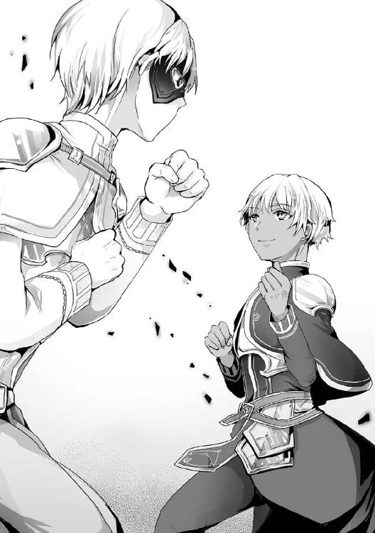
仮面の向こう側で、ナシュタールも似たような笑みを浮かべているだろう。
むむっ、感じる感じる！ 何か、うまく説明できないけど......アウスティナの言った通り、あれだよ『このくらい弱まってる感じ』がするよ！ 加護は絞っても、ラブはいつでもフルチャージだけどね！ うへへへ！
マリアベルは欲望を逬らせつつも、アベルカインに対して通常の加護が発動している確信を得た。しかし、あえてそのことを黙ったまま戦いを見守った。
アベルカインとナシュタールは再びぶつかり合うと、初手とは比べものにならぬ目まぐるしい攻防を展開し始めた。
手先から派生する攻撃一つ取っても拳打、掌底、手刀、貫手などを巧みに使い分け、あるときは防御の上から強引に、あるときは防御の隙間に滑り込むように、創意工夫を凝らした攻撃を行う。
そこに、足技や、手先、足先のみならず肘や膝も織り込んだ攻撃、果ては組み技まで織り込んで繰り広げられる戦いは、ある種の美しさすら伴い始めていた。
それでもなお、お互いにクリーンヒットは一度も無い。完全に互角だ。
ここで、アウスティナから深く大きな感嘆を含んだ言葉が漏れた。
「二人とも、完全に〈脈動〉を読み合ってるわね......それも、私には読み切れない領域で」
マリアベル同様、アウスティナも厳しい武術の修練を積み、神技にも開眼している。それでも、アベルカインとナシュタールの〈脈動〉を完全に感じ取れないのだ。
その事実は、命脈流の腕前において、アベルカインとナシュタールがアウスティナを上回っていることを意味していた。
はううーん。アウスティナには悪いんだけど、二人とも盛り上がってるし......活火山みたいに盛り上がってるしいっ!? 邪教徒と戦う前のウォーミングアップがてら、きりのいいところまでやらせてあげようかな
桃色の欲望とは違い、爆乳への嫉妬に対する沸点の低さは、メメントモリにとって純粋な心配の対象になりつつあった。
「アウスティナ、加護のことはわかったのですが......」
マリアベルは、メメントモリの心配を知ることなくアウスティナに小さく声をかけた。
「あー、わかってる。二人とも、今止めたら不完全燃焼って感じだもんね」
すると、アウスティナが楽しそうに困った様子で答えを返した。こちらも、マリアベルと同じく小さな声だ。勇者と勇者の戦いに、水を差さぬようにと配慮しているのだ。
貧乳と爆乳という激しい格差はあっても、二人とも見事な聖性を持つ巫女と巫女。似たような状況で、似たようなことを考え、通じ合うのも無理はない。
「二人とも、男の子ですから......」
「男の子、そうね。ナシュタールも、男の子なのよね......」
そのとき、アベルカインとナシュタールの戦いが大きく動いた。
「やりますね。では、これはどうです！」
仮面の奥から気迫の込もった声を放つと、ナシュタールの足運びが明らかに変わった。命脈流のそれではなく、緩急を利かせて幻惑する他流派の足運びである。
アベルカインは、それでも〈脈動〉を正確に捉えようとナシュタールの動きについて行ったが、そこを狙い打たれるかたちになった。またも命脈流の動きとは違う、舞い踊るような華麗な旋回から放たれた回し蹴りで迎撃されたのだ。
両腕を交差して受け止め、直撃は免れたアベルカインだが――それでもなお、衝撃で大きく吹き飛ばされた。辛うじて着地したが、間違いなく有効打だ。
「く......参りました。今のがナシュタール殿の奥の手でしょうか」
アベルカインは構えを解き、武人らしい潔さで敗北を認めた。
「納得できません」
そのとき、勝ったはずのナシュタールが構えを解きながらも待ったをかけた。
「ナシュタール。あなたねえ、勝ちを認めてもらって納得できないってどういうことなの？」
困惑したアウスティナは、黒髪のポニーテールと活火山を揺らし、杖を携えて椅子から立ち上がった。
そして、両手を腰に当てて胸を張り、威圧感のある態度でナシュタールを睨みつける。
「......アベルカイン殿。あなたは、自分に遠慮していましたね」
ナシュタールは、アウスティナに視線を向けることなくアベルカインへと声をかけた。
すると、アベルカインは大きく息を吐き、ナシュタールの言葉を肯定する。
「気づかれておりましたか......申し訳ありません」
「謝る必要はありません。アベルカイン殿が遠慮するのも無理もないことです」
どうやら、アベルカインとナシュタールの間では、すでに意味が通じているようだ。
しかし、武術脳シンパシーに割って入れないマリアベルとアウスティナには、何がなんだかわからない。
「アベルカイン、どういうことなのです」
今度はマリアベルが椅子から立ち上がって質問した。白銀の髪は弾むように揺れたものの、胸は揺れない。
くあああああうっ！ こ、これはあれだよ！ メメントモリ様を抱きかかえてるから！ だから揺れないんだよ！ うん、そう思っておこう！
メメントモリ人形を理由に、マリアベルが悲しすぎる強がりを逬らせる。
同時に、ナシュタールがアベルカインに先んじてマリアベルの疑問に答えた。
「アベルカイン殿は隠そうとなさっていましたが、彼の〈脈動〉からは、自分の仮面に対する気遣いが感じられました」
「ナシュタール殿の言うとおりです」
アベルカインが同意したことで、マリアベル達にも『遠慮』の正体が明らかになった。
あとに残ったのは納得と、このあとの展開に対する諦めだ。
は、はううーん。た、確かに、あの仮面はちょっと、気を遣っちゃうよね
これが命の取り合いなら、アベルカインも容赦なく、仮面――顔を狙ったろう。
しかし、この戦いは高潔なる誓いを立てて行われた手合わせ。素顔を隠す仮面を狙い、秘密を暴き立てるようなことができなかったのだ。
それがたとえ、自らの不利に繋がることになっても。
「アウスティナ。申し訳ありませんが......」
「あー、わかってるわかってる」
本当に申し訳なさそうなナシュタールに対し、アウスティナは諦め混じりに首を振り、投げやりな理解を撒き散らす。
「最後にちょっとだけ、仮面なしで手合わせって言うんでしょ。好きにしなさいよもー」
アウスティナは諦めに呆れをトッピングした声を発し、とっとと始めろとばかりに手を振ってみせた。
「ありがとうございます。では」
ナシュタールは小さく頷くと、仮面をごく自然な動作で外してみせた。
あらわになった顔は、勇ましくも整った印象を与える少年の顔だ。
白銀の髪と対照的に、瞳の色は黒い。光の届かぬ暗黒ではなく、信仰と勇気が星のように輝く夜空の瞳である。
さらに、最も注目すべき――と言うより、どうしても注目を集めてしまいそうな大きな特徴がある。
それは、傷跡。
右の額から、鼻筋を通って左頰に抜けるような、深く大きな裂傷の痕跡である。
仮面で隠すのも無理はないと思える大きな傷跡だが、そんな傷跡がナシュタールの顔に刻まれているのは、非常におかしなことだった。
アウスティナは、生命の上級神術を一通り行使することができる。
肉体の大きな欠損を完全に再生する、強力な治療術だって使えるのだ。この程度の古傷なら、完全に治癒して消し去ってもおつりが来るほどの再生力を持つ術である。
なのに、何故ナシュタールの傷跡を消さないのか？
今は〈茨棘の盾〉でオクタゴナを守っているせいで余裕がないのかもしれないが、それ以前に治癒する機会はいくらでもあったはずだ。
「その傷、事情があって消したくないらしいの。でも、他人にはそんな事情わかんないし。私が傷を消さないのは不自然でしょ。だから仮面で隠すことにしたんだって」
アウスティナはマリアベルをちらりと見ながら、薄い胸に抱かれた疑問に答えた。
確かに、本人が治療を嫌がるならば無理に消し去る必要もない。傷そのものは完全に塞がった古傷であり、現時点で命に関わるものではないからだ。
「なるほど、そういうことでしたか......」
アウスティナの視線で表情にまで驚きが漏れていたことを感じたマリアベルは、納得した様子で頷きながら、神秘の仮面を整えた。
ふにゅうーん。それにしても、おっどろいたなあ......
マリアベルは、妄想世界で驚き混じりの溜息をついた。
その理由は、仮面の下に大きな傷跡があったことでも、その傷跡をアウスティナが消していないことでも、傷跡を消さない理由が判明したことでもない。
ナシュタールの顔立ちは、マリアベルのかつての理想に近かった。
もちろん、傷を抜きにした話ではあるが、アベルカインと出会う前にイメージしていた『理想の勇者』の顔立ちである。
ゆえに、驚いたのだ。そう、あくまでも驚いただけ。それも軽く。
かつての理想に出会ったというのに、マリアベルの心はときめきも、恋心も、愛情も、欲情も、ぺろぺろも感じることなく、驚き以外の感情はほぼ全て凪の状態にあった。
過去の理想より今の理想！ 二夫を追う者は一夫も得ずだよ！ 私にはアベルカインがいるもんね！ 未来の夫がいるもんね！ ぐへへへへへ！
そして、朝焼けの瞳をナシュタールからアベルカインにずらした途端、ときめき、恋心、愛情、欲情、ぺろぺろ、らぶらぶちゅっちゅの全てが妄想世界で嵐の如く吹き荒れる。
婚活戦士は揺るがない、清く貧しい乳房の如く揺るがない。
勇者にして新たな理想、そして未来の夫であるアベルカイン以外に愛と欲望を向けるなど、マリアベルには考えられないことだった。
メメントモリは、死の世界からそんなマリアベルを見守りつつ、一途なところは褒めるべきかと悩んだ。
しかし、神の悩みを置き去りに現実は動き続ける。
「これでもう、遠慮することはありません」
ナシュタールはそう言うと、外した仮面を呆れたままのアウスティナに放り渡して構えを取った。
「わかりました。僕も出し惜しみはしません」
アベルカインも応じるように構えを取り、瞬く間に武術脳シンパシーによる同意が形成される。ただ一度の攻防で、改めてすっきりと決着をつけるための同意だ。
言葉通り、出し惜しみなしに構えを取った二人の姿は最初のように鏡写しではない。
ナシュタールは、武というより芸に近い飾り気が混じった構え。
アベルカインは、重心を少し低くし、巨大な柱のような安定感を感じさせる構え。
それぞれ命脈流の構えを軸に、得意とする他流派の構えを混ぜ込んでいる。
それが二人の本来の戦闘スタイルであり、武術的にも素顔と素顔で向き合っていることがよくわかる光景だ。
「出し惜しみなしか......そこまで本気でやり合わなくてもいいのに」
アウスティナは、呆れを深めて溜息をついた。
マリアベルも、共感の苦笑いでこたえる。
だが、婚活戦士の本能は、当たり前で無難な感情を、激しい妄想で掘り下げて行く。
ふにゅうーん。でもさでもさ！ この、ワガママを苦笑しながら見守る感じも悪くないよね！ なんか、姉さん女房って感じだよね！ そもそも、アベルカインっていくつなんだろ？ 私より年下なのかな？ もしそうなら、ちょっとお姉さんぶっちゃおうかなあ！
減速知らずの妄想は、あっという間に桃色の欲望に塗れたレッド・ゾーンならぬピンク・ゾーンに突入した。
らぶらぶちゅっちゅにおいても、お姉さんぶってリードするべきか、お姉さんなのにリードしてもらうギャップ萌えを狙うかという選択肢にまで到達したのだ。
んにゅうううう！ どっち!? どっちがアベルカインの好みなの!?
マリアベルは妄想世界で鼻血を垂らしながら、緊迫した面持ちで必死に考え込んでいた。その緊迫は現実にまで伝染し、神秘の仮面を微かに強張らせる。傍目には、アベルカインの勝利を信じて固唾を飲んで見守っているかのようだ。
「............」
マリアベルの表情を横目で見たアウスティナも、その表情に緊迫感を滲ませ、固唾を飲んでナシュタールを見詰めた。
はっ！ そうだ、今はそれどころじゃない！ アベルカインをちゃんと応援しないと！
妄想世界のマリアベルは、鼻血を拭いながら現実に目を向け、心からアベルカインの勝利を祈る。その瞬間、二人の勇者の戦いは、二度目の決着に向けて急加速した。
「いざ、勝負！」
先に動いたのはナシュタールだ。
緩急をつけた幻惑の足運びで円を描くようにアベルカインの周囲を回り、じわじわと間合いを詰めていく。夜空の瞳は二度目の勝利を見据え、不敵な光を宿していた。
「............」
対するアベルカインは動かない。それどころか、ナシュタールの動きを目で追おうともしない。夕暮れの瞳は、感じ取った〈脈動〉の先にある刹那の勝機を見定めようとしていた。
「はあっ！」
動かぬアベルカインに対し、ナシュタールはあえて正面から突っ込んだ。死角からの攻撃をイメージさせる動きからの心理的な不意打ちだ。
「そこっ！」
その瞬間、アベルカインが動いた。正面から仕掛けて来ることを〈脈動〉で読んでいたのか、ナシュタールの動きときれいに重なるように掌底が突き出される。
「ふっ！」
だが、ナシュタールは踊るように軽やかなターンを決め、全身の回転で衝撃を逃がしてアベルカインの掌底の威力を殺しきった。
ナシュタールの〈脈動〉が物語る次の一手。それは、回転の勢いを殺さず懐に潜り込み、攻撃の余韻で姿勢が少し崩れたアベルカインの腹部に肘を捻じ込むことだ。
わかっていても、生半可な手段では覆しがたい技の冴えを持った〈脈動〉である。
んにゃああああああああああっ！ アベルカイン！ がんばって！
だが、マリアベルは信じていた。出し惜しみなしで行くと言った、アベルカインの本気がナシュタールに打ち勝つことを。
「でええいっ！」
アベルカインは、その期待に応えた。凄まじい衝撃と激震がナシュタールを、マリアベルとアウスティナを、勇者達の決闘場そのものを襲ったのである。
「こ、これはっ......！」
勇者たるナシュタールが攻撃を中断せざるを得ないほどの衝撃に、アウスティナの活火山がばるばると揺れる。
その原因は、アベルカインの脚だ。
僅かに振り上げ、振り下ろす。それだけの動作で芝生を抉り、大地にめり込み、思い出の庭を揺らしたのである。
「もらった！」
激震が生み出した僅かな隙を、アベルカインは強引にこじ開けた。肩を押しつけるようにナシュタールに密着すると、そこから全体重を乗せた体当たりを放ったのだ。
「くうっ......！」
傷跡と表情を苦しげに歪めたナシュタールは大きく吹き飛ばされ、着地してもなお芝生を抉って後退する。少し前のアベルカインと、完全に立場を逆にした光景だ。
「参りました。まさか〈震脚〉を使って来るとは......」
大きく息を吐いたナシュタールは、汗だくの顔に爽やかな笑みを浮かべてアベルカインを称え、己の敗北を認めた。
ダメージが少ないのは、回し蹴りを受けたアベルカインと同様、辛うじて直撃は免れていたからだ。吹き飛ばされる方向に自分から飛んで、衝撃をいなしたのである。
「一か八かでした。実は......〈震脚〉を戦いに組み込んだのは、これが初めてなのです」
アベルカインもまた、汗だくの顔に爽やかな笑みを浮かべてナシュタールに答えた。
〈震脚〉は地の神を崇める流派の神技である。
大地を強く踏み締めることで超局所的な地震を引き起こすこの神技は、範囲内の敵から安定を奪い取り、続く攻撃の命中を容易にする。
複数の武術流派は会得しても、複数の武術流派の神技を使える武人は滅多にいない。ナシュタールも、アベルカインは命脈流に絡んだ神技のみを使えると先入観を抱いていた。
その先入観を強めて勝機とするべく、アベルカインは体当たりを強く意識し、大仰に身体を動かす兆候を見せてナシュタールに〈脈動〉を強く感じ取らせた。
そこに突然、一か八かの〈震脚〉を割り込ませたことで虚を突くことができたのだ。
先ほど、他流派の足運びを組み込んだ移動と回避、そして攻撃で有効打を取ったナシュタールに対する意趣返しとも言えるだろう。
「そういう一か八かは、このような手合わせならではですね。次に戦うことがあるなら、お互いの手の内を全て明かした上でやりあいたいものです」
汗に濡れ、戦いに乱れた白銀の髪をかき上げて、ナシュタールがアベルカインに歩み寄る。
アベルカインも同じように、汗に濡れ、額に張りついた灰銀の髪を払ってナシュタールに歩み寄った。
そして、二人の勇者はお互いの健闘を称え合い、固く握手を交わす。完全に武術脳シンパシー空間を形成している。
「ちょっと、二人とも」
そこに、アウスティナとマリアベルが静かに歩み寄った。
声をかけたのは、憮然とした表情を浮かべたアウスティナである。
アベルカインとナシュタールは、握手を解いてそれぞれの巫女に向き合った。
「すいません。時間を取らせ......」
そう言って頭を下げようとしたナシュタールの額をアウスティナが小突いた。縦に持った仮面の縁をこつんと音を立ててぶつけたのだ。
「二人とも、やりすぎです」
続いて、マリアベルが二人を窘めつつ、アベルカインの額を小突いた。こちらは、メメントモリ人形の拳を使った、かわいらしい一撃だ。
んにゅうううう。勝ってくれたのは嬉しいんだけど。ここ、アウスティナの家の別荘じゃん。これがもし、私とアベルカインの......らぶらぶマイホームの庭だったらと思うと、怒るのもしょうがないって感じだよね
親しき仲にも、活火山相手にも礼儀ありの精神である。
「あ......」
思い出したように、アベルカインとナシュタールは庭を見回す。
戦いの影響で芝生は踏み荒らされ、特に〈震脚〉で踏み締めた部分と、二人が吹っ飛んで着地した部分は、芝生が抉れてひどい有様だ。
「まあ、多少は覚悟してたし。止めなかった私達も悪いけど」
アウスティナは眉尻をつり上げ、少し怒った様子でナシュタールに仮面を投げつけ、言葉を続けた。
「そのありあまった元気は、邪教徒に全部ぶつけること」
「アベルカインも、それでよいですね」
有無を言わさぬ態度のアウスティナの言葉を、マリアベルが優しく引き継いだ。
熱く滾る活火山のムチ、安らかにもたれかかれる壁のアメ。
アウスティナとマリアベルは、自然と役割分担を行って勇者を窘めた。
「はい、申し訳ありません」
「自分も軽率でした。申し訳ありません」
余計な言い訳をせず、アベルカインとナシュタールは揃って頭を下げた。
「わかってくれればいいのです。今後は気をつけてくださいね」
マリアベルはそう言うと、メメントモリ人形を片手で抱え、空いた片手の人差し指を立てた。
「大きな怪我でもされたら、それこそ一大事ですから」
そして、茶目っ気たっぷりの笑顔でアベルカインの鼻先を突ついてみせる。
「んう、わ、わかりましたから。いきなり突つくのはやめてください」
突つかれたアベルカインは、それほど嫌がっている様子はなく、微かな照れを表情に滲ませて鼻先を押さえた。
ふにゃあああああああっ！ か、かわいい！ 思ってたよりリアクションがかわいいよおおおおっ！ こ、これはつんつんしちゃおうかな！ 今後もつんつんしちゃおうかな！
この瞬間、マリアベルの欲望にぺろぺろ、ちゅっちゅに加えて、つんつんという新たな仲間が増えることになった。
マリアベルよ――この先、そんな言葉をどんどん生み出すのではあるまいな。
聞いているだけで気力が抜けるような桃色の単語群が大増殖する可能性に、メメントモリは割とマジでびびっていた。
そんな、神の恐怖を助長するかのように、マリアベルの妄想は止まるところを知らずにヒートアップした。妄想世界で劇団マリアベルが開演したのだ。
例えば例えばぁ！ 激しい夜の戦いを終えた直後とかぁ！ 『もう、激しすぎですよ』とか言っちゃって！ そのままつんつんって窘めちゃって！ それでそれで！ アベルカインが『いきなり突つくのはやめてください』とか言いながらも！ わ、私を激しくつんつんする準備を整えちゃったりなんかしちゃったりしてえええっ！ ぐへへへへへ！
メメントモリは、そっと目を逸らした。
桃色の花畑を滴る鼻血で染めるマリアベルを直視できなくなったのだ。
巫女と神の一方通行の戦いは、人知れず、誰も止めに入ることのできぬまま――その激しさを、少しずつ増し続けていた。
［ Ⅴ ］
踏み荒らされた芝生を、青白い光が照らす。
マリアベルが、アベルカインとナシュタールに対して行使した神術の照り返しである。目的は二つ、治療と身支度だ。
ふにゅうーんっ！ アベルカインの胸元に飛び込んで、またすんすんしたいなあ！ ほんのり汗の匂いがする、熱い抱擁を交わしたいなあ！ まあ、この先いくらでもチャンスはあるけどさ！ ありすぎるけどさ！ うへへへへ！
劇団マリアベルの上演は終わったものの、妄想世界のテンションは激しいままだ。一切ブレることなく、アベルカインの存在を中心に据えた妄言を逬らせている。
「はい、二人とも終わりましたよ」
そう言うと、マリアベルは妄想とは掛け離れた穏やかな微笑を浮かべ、アベルカインとナシュタールの肩を叩いた。神術の行使を終えた証に、青白い光が消える。
「申し訳ありません。自分の回復と身支度までしていただいて」
ナシュタールが仮面をつけ直し、軽く頭を下げた。
すると、白銀の髪がさらりと揺れる。アベルカインとの戦いで汗をかき、土埃を被った髪とは思えぬ清潔感だ。よく見れば髪だけではなく、全身から汗の匂いやべたつき、土埃などが消え失せている。
これが『身支度』――〈浄化の光〉と呼ばれる基礎的な神術だ。その名の通り、衣服や身体の汚れを取り、身を清める効果がある。
自力で清潔さを保つことが難しい状況にある人々に対して施して回ることが奨励される術だが、神官が自分や身の回りの人物の『身支度』に使うことも多い。
外見のイメージが大切な巫女や勇者にとって、非常に重要な神術といえるだろう。
「気にすることはありません。それに、アウスティナに任せるのは聊か酷というものです」
まあ、このくらいはね！ アベルカインの！ 爽やかに戦う凜々しい顔を！ たっぷり堪能させてくれたお礼でもあるし！ うへへへへ！
「マリアベル、お疲れ様です」
荒ぶる妄想を知らぬアベルカインは、マリアベルを労いながらメメントモリ人形を差し出した。神術をかけている間、邪魔にならぬよう預かっていたのだ。
「〈浄化の光〉って、便利なんだけど、味気ないのよね」
そのとき、メメントモリ人形を受け取るマリアベルを背後から見詰めて、アウスティナが何気ない感想を漏らした。
マリアベルは意図の読めぬ言葉に振り返り、アベルカインとナシュタールも視線を向ける。
「だって、ちゃんと入浴したりしないと。ほら、心まで洗濯された感じがしないって言うか......この気持ち、わかる？」
同意を求め、アウスティナは三人を見回し、顎先に人差し指を当てて小首を傾げた。
んにゃあああああああっ！ 活火山いいこと言ったあああああああああああっ！
妄想世界のマリアベルにしては極めて珍しく、活火山という単語に、嫉妬を忘れるほどの感謝を満たして絶叫した。さらに、現実世界でも白銀の髪を弾ませて力強く頷いてみせる。
「そうですね。身を清める過程を楽しむ気持ち、わかりますよ」
「ああ、マリアベルもわかる？ パッと結果だけ出るのが、一番味気ない神術だと思うの」
年頃の少女らしい発想で、マリアベルとアウスティナは頷き合った。
「そういうところは、確かにあるかもしれませんね」
アベルカインも遅れて同意し、ナシュタールも頷いた。
そうだよね！ 入浴は楽しいよ！ アベルカインと一緒だともっと楽しいよ！ 背中を流し合ったりとかさ！ もっと違うところを流し合ったりとかさ！ 『一緒に入ると、どうしても長湯になってしまいますね』とか！ らぶらぶしながら言っちゃったりしてさああああっ！
瞬間的に妄想のテンションを跳ね上げながら、マリアベルは決意した。
神話祭の旅路の最中、絶対に、必ず、一度でいいからアベルカインと一緒に楽しく入浴する決意である。
その直後、妄想の花畑を、どこからともなく湧き出した桃色の泡が覆い尽くす。
メメントモリは、泡の中で繰り広げられる妄想を直視できなくなり、またしても目を逸らした。
「それにしても、派手にやったわねえ......」
「アウスティナ」
荒れた芝生を見回して溜息をつくアウスティナに、ナシュタールが少し大人びた声をかけた。つけ直した仮面の向こうから聞こえてきたのは、小さな子供を優しく諭すような暖かい声だ。
「マリアベル様と、きちんと話をしておいた方がよいのではありませんか」
「ナシュタール......でもね。忘れてるなら、それはそれでいいのかなって気もして」
アウスティナは、日没の瞳を迷いに揺らしてナシュタールを見詰めた。その顔は珍しく、大人に縋る子供のような表情を浮かべている。
「アウスティナ、大丈夫」
そこまで言うと、ナシュタールはアウスティナに歩み寄って肩を摑み、強引にマリアベルの方に向き直らせた。
「マリアベル様も立派な聖性を持った巫女。頼りになる勇者も傍にいます。きっと、思い出ごとあなたの気持ちを受け止めてくださるはずです」
ナシュタールは言葉を止め、アウスティナの背中をそっと押した。
え？ 何？ この、今から告白しますみたいな空気！ や、やめてよね！ 私、そっちの趣味はないし、すでにアベルカイン一筋なんだから！ 困るよ！
マリアベルは意を決した様子のアウスティナと視線を合わせつつ、妄想世界で桃色の泡から抜け出しながら、斜め上の予測に身構えた。
しかし、現実はマリアベルの心を正面からちくりちくりと攻め立てる。
「......私、あなたと仲直りしておきたかったのよ。だから、邪教徒のことがなくても、あなたに会いに行くつもりだった」
アウスティナはそう言うと、自らのポニーテールを解いて髪留めを取った。そして、懐からもう一つ髪留めを取り出すと、二つとも掌の上に乗せてマリアベルに差し出してみせる。
一つは、アウスティナがつけていた薄紫色の飾り玉のついた髪留め。もう一つ、新たに取り出したのは、濃い紫色の飾り玉のついた髪留め。色違いでお揃いのバレッタだ。
「これ、見覚えない？」
心の奥で疼く痛みとアウスティナの態度に困惑しながら、マリアベルはまじまじと二つの髪留めを見詰めた。
あれ？ こっち、私のだよね？
濃い紫色の飾り玉がついた髪留めをきっかけに、遠い記憶を封じた過去の扉が出現し、ゆっくりと開いてゆく。
その先にいたのは、お揃いのポニーテールで仲良く遊ぶ二人の少女。幼い頃のマリアベルと、幼い頃のアウスティナである。
やっぱり、私のだ......何でアウスティナが持ってるんだっけ？ そもそも、これアウスティナから貰ったんじゃなかったっけ？
マリアベルは、幼い自分とアウスティナを注意深く観察した。
幼い頃のマリアベルは濃い紫色の飾り玉がついた髪留め。
幼い頃のアウスティナは薄い紫色の飾り玉がついた髪留め。
色違いで、お揃いの品を身につけている。
現在のアウスティナが差し出した、二つの髪留めと同じものである。
「これ、私がママに頼んで買ってもらったものなんだけど、マリアベルに片方あげたのよ」
マリアベルだけでなく、アウスティナも二つの髪留めを通して過去の記憶を見詰めていた。
「そ、そうですよね。これは、確かに私が貰ったもののはずです」
少しずつ紐解かれる記憶に誤りがなかったことに安堵しつつ、マリアベルは小さく頷いた。
アウスティナも、マリアベルが同じ過去を見ていることに安堵したような溜息をつき、小さく頷いてから話を続けた。
「でも、私が壊しちゃったの。そのことも覚えてない？」
その瞬間、新たな過去への扉がマリアベルの妄想世界に出現した。鎖でがんじがらめにされ、異様なまでに念入りに封じ込められた傷だらけの扉だ。
「本当に忘れちゃったのね。あの......葬儀のことを」
現在のアウスティナが放った言葉が、過去への扉を激しく叩いた。鎖が千切れ飛び、鍵が開き、軋んだ音を立てて扉が開く。
「葬儀......？ そ、そうだ、葬儀の日に、それを......！」
マリアベルは傷だらけの記憶と正面から向き合うため、妄想世界で過去への扉へと足を踏み入れる。
死の世界から、メメントモリはその光景を静かに、どこか暖かい眼差しで見守っていた。
桃色の欲望や劇団マリアベル、活火山に対する嫉妬やスレンダーの悲劇など、嫌な意味で多様性を見せつけてきたマリアベルの妄想力が、忘れていた記憶を鮮明に思い出すという非常に真っ当な方向に活かされ始めたからだ。
敬愛する神の眼差しに背中を押されたかのように、マリアベルは力強く過去の記憶を踏み締めた。
朝焼けの瞳に映るのは、十年前の景色。場所は、オクタゴナのクレアーウィット神殿。それも、本来は勇者選定に用いる一番奥の部屋だ。
そうだよ......
マリアベルは部屋の入り口から、ゆっくりと周囲を見回した。
そこには、多くの人々がいた。男も女も子供も大人も老人もいた。
性別も年齢も立場もばらばらのはずの人々は、皆、同じような衣服を着ていた。薄桃色でも白でもなく、黒いクレアーウィットの神官服だ。
死者の安息をメメントモリに願うため、本来は薄桃色や白が基調となる部分をメメントモリの神官服と同じ色に染め上げた、特別な神官服である。
皆、悲しみに染め上げられ、涙で濡れた同じような顔をしていた。すすり泣くような声も、そこかしこから聞こえてくる。
全て、どのような神術を以てしても覆せぬ悲しみ、死に対する涙と声だ。
その表情が何を意味しているのか、マリアベルは知っている。
あの日......クレアーウィット神殿で、葬儀があったんだ
朝焼けの瞳が、周囲の人々から奥の祭壇へと視線を移す。
祭壇の前には、白地に薄桃色の〈生命賛華〉が輝く布を被せられた棺。
そして、棺の前には――この場で唯一、死を否定するかのように、薄桃色の神官服を身につけた幼い少女の背中。
アウスティナの、大切な人が死んじゃったんだよ......
直接会ったことはないが、どんな人物なのかよく知っていた。
幼いアウスティナが、未熟な慕情を滲ませて、憧れの人だと教えてくれた少年。
将来を嘱望された、クレアーウィットの若き神官戦士。
邪教徒との戦いで、命を落としてしまった殉教者。
棺の中で眠っているのは、そういう人間で、棺の前で立ち尽くしているのは、悲しみに押し潰されてしまいそうな幼い少女――当時のアウスティナだ。
「すいません。アウスティナはどちらにいらっしゃるのでしょうか」
幼い子供の声が、マリアベルの横を通り過ぎていった。
年の割には少し大人びた、背伸びしているような声だ。
その声の主が誰なのか、マリアベルはわかっている。
幼い頃の自分だということなど、わかりきっているのだ。
ああ、私だ......
いつの間にかマリアベルの意識は、幼いマリアベルの体に移っていた。
誰かが、アウスティナは祭壇の前だと教えてくれる。
その声に従い、小さな足音を響かせ、マリアベルは祭壇へと駆けて行く。
白銀のポニーテールが、濃い紫色の飾り玉が、一歩足を踏み出す度に揺れる。
何もかもが過去ではなく、現在起きていることのような臨場感を伴っていた。
「アウスティナ。こんなことになって、なんて言ったらいいのか......」
マリアベルは、立ち尽くすアウスティナに急ぎ足で歩み寄った。
そして、震える小さな肩に手をかけ、沈痛な面持ちで言葉をかける。
幼いながらも、メメントモリの巫女としての使命感と、アウスティナへの友情が感じられる立派な立ち振る舞いだ。
「さわらないで！」
だが、アウスティナは、背を向けたままマリアベルの手を払い落とした。
その様子を遠巻きに見守っていた人々は、悲しみに驚きを上乗せし、すすり泣きの音も忘れ、凍りついたように動きを止める。
それは、傍目には子供と子供の未熟な感情が、激しくぶつかり合う兆候にしか見えない。
しかし、誰も割って入ることはできなかった。
幼くも激しい、アウスティナの聖性に気圧されたのだ。
「ごめんなさい。でも......」
そんなアウスティナに対して、マリアベルは辛うじて言葉を返し、その場に踏み留まった。
死にまつわる、やり場のない悲しみや怒り。特に、子供のように未熟な感情であれば、ある程度まで受け止めてあげるのも、メメントモリ神官――そして、巫女の務め。
それでアウスティナの悲しみが少しでも和らぐなら、八つ当たりであろうと受け止めるべく、自らの意志で足を止めたのだ。
「ちがう......そうじゃない、そうじゃないの！」
だが、アウスティナは大粒の涙を零し、声を荒らげ、体ごとマリアベルに向き直った。
幼くも可愛らしい顔立ちは、友の計らいを見通してなお、ぶつけようのない憤りに苛まれているような、複雑な感情に歪んでいた。
「帰って。私の気持ちは......あなたや、メメントモリ様にぶつけるようなことじゃない」
大きく息を吐いたアウスティナは袖口で強引に涙を拭き取りながら、ゆっくりとマリアベルに告げた。大きな負の感情を抱え、塞ぎ、抑えつけているような声だ。
「アウスティナ......」
気圧されるように後ずさりながら、マリアベルは少し食い下がった。
周囲の大人達は、子供とは思えぬ聖性と感情の鬩ぎ合いに呑まれて動けない。
「いいから、すぐに帰って！」
アウスティナの放つ、一際強い否定の叫びに呼応し、何かが弾けるような音が響いた。
「あうっ!?」
マリアベルは真正面から見えない衝撃を受け、小さな悲鳴を上げて尻餅をついた。
同時に、バレッタの留め金が音を立てて弾け飛ぶ。
解放された白銀の髪がマリアベルの背を覆い、罅割れたバレッタが床を跳ね、場違いに軽い音を響かせた。
幼くも聖性に満ちた子供に稀に起きる現象――激情による神術の暴発だ。
「けほっ」
特に強い衝撃を胸に受けたのか、マリアベルが咳き込む。
それを合図に、大人達は一斉に動いた。
幼い二人の間に割って入り、アウスティナを宥め、マリアベルには治癒の神術をかけつつ運び出してゆく。
「............」
マリアベルは、されるがままだった。
胸の痛みよりも強い痛みが、心を苛む。アウスティナの強く、深い拒絶が悲しかった。友を慰めることすらできぬ自分の未熟さが、不甲斐なさが、恨めしかった。
「アウスティナ......」
大人達の腕の中でもがき、友へと手を伸ばし、複雑な感情を込め、その名を呼んだ瞬間――マリアベルの眼前で、部屋の扉が閉じる。
拒絶を象徴するような軋んだ音と共に、過去の記憶にはなかったはずの声が聞こえた。
「ずっと......謝ろうと思ってたの。あのときのこと」
それは、幼い声ではなく、成長したアウスティナの声。
その声は、マリアベルが幼い頃の自分から離れ、体の一部が幼いまま成長しない、現在の自分へと帰還する合図となった。
［ Ⅵ ］
マリアベルとアウスティナは、揃って顔を上げ、視線を交わした。
朝焼けと日没の瞳に映るのは、幼い過去の姿ではなく、成長した現在の姿だ。
幼く、苦い記憶の旅。
それは、とても長いようで、現実での経過時間はさほどでもない。不思議な密度に満ちた旅だった。
「そんなことも、ありましたね......」
過去の余韻が未だに残っているのか、マリアベルは憂いを帯びた陰のある表情で呟いた。
アウスティナも似たような表情で、軽く頷いてマリアベルの呟きに答える。
「あのあと、すごく疎遠になって......ずっと、後悔してた。あなたはただ、私を慰めに来てくれただけなのに」
「いえ、あなたの気持ちを理解できるつもりになっていた私が未熟であり、傲慢だったのです」
マリアベルとアウスティナは、複雑な感情を滲ませた声で語り合う。
んにゅーん。確かに、疎遠になっちゃったけどさ。そんな気はしなくもないけどさ。けどさ、けどさ、けどさぁっ！
マリアベルは少し俯いた。その視線は、アウスティナが掌に乗せた二つの髪留めに注がれているように見える。
過去の拒絶が、長年の疎遠とすれ違いに繋がった。それは、概ね事実だ。
しかし、マリアベルが、当時のことを忘れ去るほどのトラウマを作り出した原因は別にある。
アウスティナあああああうっ!? なんで、私を置いてけぼりにするかなあ!? なんで、私には無いものを激しく盛り上がらせて突っ走っちゃったのかなあ!? なんでなんでなんでっ！ 貧しい乳房を圧する活火山になっちゃったのかなあああああああっ！
マリアベルは、髪留めではなく爆乳を――嫉妬と恐怖と痛みの象徴を見ていた。
いかに疎遠になっても、全く顔を合わせなかったわけではない。少しずつ、成長した姿を見せ付けあう機会は、何度もあった。
幼い頃の友情は見失っても、挨拶や世間話には当たり障りなく応じてきた。
だが、そのたびにマリアベルは恐怖した。
アウスティナの、ばるばると育って一人前を遙かに超えてゆく胸と、自分自身の、つるつると育たず半人前にすら届かぬ胸に恐怖したのだ。
やがて、その恐怖はアウスティナから受けた胸と心の痛みに結びつき、嫉妬も交えながら乳房の代わりとばかりにふくらみ続けた。
そして、ついに幼い日の出来事をトラウマに変えて記憶の底に封印してしまったのだ。
それが、ここまで何度も感じていた心の痛みの正体である。
マリアベルよ――もう少し、あと少しだけ、我慢することはできなかったのか。
直前までマジメに回想をこなすマリアベルを見て、メメントモリは期待していた。
もしかしたら、このまま内面も理想的な巫女として、文句のつけようのない清らかさを維持できるのではないかと思っていたのだ。
だが、その期待は爆乳へのふざけたトラウマが嫉妬と共に大噴火した瞬間、火山灰に紛れて儚く散り――膝から崩れ落ちるほどの精神的な疲労に掏り替わった。
マリアベルの斜め上にぶっとぶ思考回路が、メメントモリを相手に明確な一本を取ってしまった。嫌な意味で記念すべき瞬間である。
「旅立つ前に、会っておきたかった。少しでも、昔みたいになりたくて......」
失われた神の期待も、マリアベルのふざけたトラウマも知らぬアウスティナは、縮むことを知らぬ乳とは違い、身を縮めるような態度で言葉を紡いでいた。
そんなアウスティナに対し、マリアベルは爆乳に対する嫉妬の溶岩を妄想で振り切り、何とか現実で顔を上げることに成功する。
「もっと、早く言ってもらってもよかったのですよ」
「さっきも言ったけど、無理に思い出させることもないのかもって......もう、こういう迷いが出ちゃうあたり、私もまだ未熟よね」
アウスティナが、そう言って表情を緩める。
はううーん。ま、まあ、私も逆の立場ならそう思うかもしれないけど、忘れられっぱなしもなんか微妙な気持ちになるよね。私だって、アベルカインに――らぶらぶ記念日とか、ちゅっちゅ記念日とか、ぺろぺろ記念日とか覚えててほしいもん！ 忘れられると悲しいよね！ 思い出してもらったあとは、仲直りのちゅっちゅで記念日増やしたいよね！
マリアベルは自らの失礼な忘却を反省しつつ、そこから桃色の欲望へとごく自然に思考を展開させた。
すると、まだできてもいない記念日に対して死の世界からメメントモリが言及する前に、現実世界で動きがあった。
アウスティナが小さく溜息をついたのだ。
桃色の欲望が見えているかのような反応だが、そうではない。肝心要の言葉を口に出すべく、溜息と一緒に肩の力を抜いただけ。
「ありがとう。マリアベル」
そして、アウスティナはずっと言いたかった言葉を口に出した。
武術脳シンパシーで空気を読み合い、気配を消してマリアベルとアウスティナだけの世界を演出してきたアベルカインとナシュタールが、少しだけ落ち着かない様子を見せる。
流石に、決定的な発言に対してマリアベルがどう答えるのか気になるようだ。
「............」
マリアベルは、過去の余韻を振り切るような微笑みを浮かべ、アウスティナの掌から髪留めを一つ取った。濃い紫の飾り玉がついた、幼い頃の愛用品の方だ。
そして、髪留めを取るだけに止まらず、入れ違いにメメントモリ人形をアウスティナの掌に置いたのである。
「少しの間、持っていてください」
怪訝な顔をするアウスティナに対し、マリアベルは笑みを深めてそう言いながら、妄想世界で荒ぶっていた。敬愛し、崇めるメメントモリに激しい懺悔の念を送っていたのだ。
くあああああああっ！ メメントモリ様、ごめんなさい！ 活火山と触れ合っているのはお辛いと思いますが！ すぐにすみますから、どうかお許しを！
何度も何度も頭を下げられる、斜め上の懺悔を聞き届けたメメントモリは、ゆっくりと立ち上がり、服についた土埃を払いのけて微笑んだ。
それは、そんなことで謝らずともよいという意思を込めた、呆れ混じりの微笑みだ。
「よいしょ」
マリアベルは、神の微笑みを知ることなく、両手を使って後頭部で髪をまとめ始めた。
慣れないというより久々の作業に笑顔が消え、それなりに時間もかかったものの――優しく揺らめく白銀のポニーテールを作ってみせる。
そして、飛び切りの笑顔をアウスティナに向け、メメントモリ人形をそっと取り返し、幼い子供のように元気いっぱいの声を響かせた。
「アウスティナ。久しぶりに、お揃いにしましょうか」
その声と笑顔は、アウスティナの中で蟠っていた後悔を洗い流した。
アベルカインとナシュタールも、互いの巫女の仲睦まじい様子に自然と笑顔になる。
やがて、アウスティナとナシュタールの体から青白い光が溢れ出た。メメントモリに捧げられる信仰の光だ。
光はすぐ二人の体から離れ、マリアベルの胸元に吸い込まれてゆく。
「うん。そうしよう」
アウスティナもまた、飛び切りの笑顔を返した。
そして、マリアベルとは違い、手際よく淀みなく、杖を携えたままポニーテールを作ってみせる。自分の体から、メメントモリに対する信仰の光が出たことには気づいていないようだ。
はううーん。他の巫女に対する信仰の光は見えないもんね。気づかなくても無理ないよ
マリアベルは、そんなことを思いつつも、自分の体からアウスティナに対する信仰の光が溢れている気がしていた。
それどころか、アベルカインからもアウスティナに対する信仰の光が出ているかもしれないとすら思っていた。
ここまでの短くも濃厚なやり取りを経て、改めて信仰を捧げ合うほど心を交わすことができたという確信があったからだ。
メメントモリ様、メメントモリ様。見ていてくださいましたか
マリアベルは、取り返したメメントモリ人形を少し強く胸に抱いて天を仰いだ。
マリアベルよ――その信仰、お前とアベルカインの大きな助けになろう。よくやっ。
よくやったな、と言い終えることはできなかった。
妄想世界のマリアベルが、何の前触れもなく血の涙を流し始めたからだ。
メメントモリは、ぎょっとして口を噤み、微かにあとずさってしまう。
だから、だから......メメントモリ様あっ！ お願いしますっ！
敬愛する神をドン引きさせた形相のまま、地の底から響くような渇望を込め、マリアベルは天高く叫び、妄想世界を震撼させた。
私にも――乳を！ アベルカインに押し当てたら『や、やわらかい......』と思ってもらえるような！ 活火山とは言いません！ 山脈とも言いません！ そう、丘！ なだらかな丘陵くらいの乳をくださいませんかああああああっ！！
血涙のご褒美コールに頭痛を堪えながら、メメントモリはマリアベルから目を逸らす。
そして、悲しげな笑みを浮かべ、そっとささやいた。
マリアベルよ――よいではないか。貧しくとも、無ではないのだ。
どこか、自分に言い聞かせているような響きを滲ませた、悲しくも優しいささやき。
それは、直後に同じ口から溢れた溜息によって吹き散らされた。
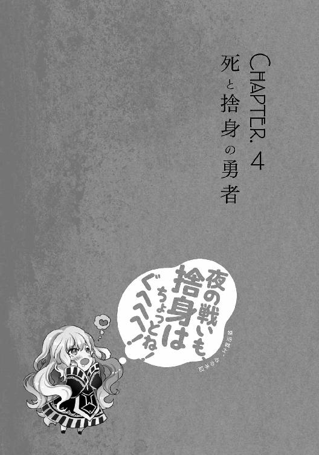
［ Ⅰ ］
オクタゴナを囲む外壁には、東西南北に面した大きなアーチ状の門が四つ存在し、それぞれの門には見事な宗教的装飾が施された大きな鐘が取りつけられている。
そのうちの一つ、南門の上に取りつけられた大鐘が薄桃色に輝き、荘厳な音色を空高く響かせ始めた。
すると、オクタゴナの観光客達は皆、こぞって南門の周囲に集結してゆく。
それに合わせて、様々な宗派の神官達が慌しく観光客を誘導し、門へと続く道の左右に押し分け、巫女と勇者のための道を開ける。
観光客達が殺到するのも無理はない。この鐘が鳴り響くことは、その門から巫女と勇者が旅立つという合図だからだ。
しかも、大鐘を包む薄桃色の光は、クレアーウィットの巫女アウスティナと、その勇者ナシュタールがここに来るという目印。
音と光の二つを確認することで、観光客達は目当ての巫女と勇者が旅立つ姿をその目に焼きつけ、自らを神話の背景の一部として刻むべくスムーズに行動できるのだ。
ちなみに、大鐘を輝かせているのも、鳴らしているのも、対応する神官の神術である。
観光客達を整理する神官達も含め、崇める神への信仰を糧に裏方に徹する人々の努力があるからこそ神話祭は成立しているのだ。
やがて、大鐘の音が止むと、観光客達は期待に目を輝かせながら、巫女と勇者が姿を見せるはずの門に続く道の彼方を見詰めた。
しかし、彼らの期待は意外なかたちで裏切られることになる。荘厳な鐘の音が、再び聞こえ始めたのだ。それも、今しがた音が止んだばかりの南門の大鐘から。
多くの人々が、何事かと大鐘を見上げて目を丸くした。
大鐘が、輝いている。
それも、青白い――死の神メメントモリを象徴する色に輝いている。
観光客達がざわめいた。そこには、メメントモリに対する過剰な恐怖による怯えも含まれているが、決してそれだけではない。
強烈なデビューを飾った巫女マリアベルと勇者アベルカインに対する興味や、二組の巫女と勇者が同じ門から共に旅立つという、珍しい光景に対する期待。
ポジティブな感情による人波のざわめきが、完全に怯えと恐怖を上回っていた。
そして、鐘の音が止まり、青白い光が消えた瞬間。
門に続く道の向こうから、二人の巫女と二人の勇者が姿を現した。
割れんばかりの歓声、万雷の拍手、誰が用意したのか色とりどりの紙吹雪が巫女と勇者を出迎える。
無数の祝福と期待の中へと、最初に飛び込んだのはアウスティナとマリアベルだ。
歩調を合わせ、黒髪と白銀のポニーテールを共に弾ませ、お揃いの髪飾りと、護神具の杖を陽光に輝かせる姿は、神話の一ページと呼ぶに相応しい。
「これほどの人々に見守られ、旅立つことになるとは思ってもみませんでした」
マリアベルは小声でそう言って、淡く頰を染めて微笑んだ。その手に携えた杖こそが、メメントモリに授かった護神具である。
美しき白銀の輝きはアウスティナの杖とお揃いだが、デザインがお揃いで色が違う髪留めのように、全てが同じというわけではない。
マリアベルの護神具は柄の部分は特に装飾なくシンプルだが、〈獄炎十字〉の意匠が施された先端部には、青く燃え盛る死の世界の炎が灯っている。
逆にアウスティナの護神具は、柄に植物の蔦が絡みつく飾りがついていて、先端は〈生命賛華〉の意匠のみ。形状に関しては対照的なのだ。
「思ってもみなかったなんて、よく言うわ。強かに信仰獲得を狙ってる癖に」
マリアベルの護神具をちらりと見詰め、アウスティナが小声でからかった。
言うまでもないが、形状が対照的なのは杖だけではない。
ばるん。
つるん。
相変わらずの、圧倒的な格差がある。
んくうううううううううっ！ いいよいいよ！ 胸は薄いけど、心は厚いで行くよ！ 活火山の存在も、まあ少しは、ほんのちょっとは、先っちょくらいは許容するよ！
だが、マリアベルは少しだけ、ほんの少しだけ、自身の胸の薄さ程度のごく僅かだけ、爆乳への嫉妬を和らげていた。幼い頃の友情を取り戻したお陰である。
「もう、茶化さないでください。思ってもみなかったからこその行動です」
全盛期の嫉妬を防いできた神秘の仮面が和らいだ嫉妬を通すはずもない。現実のマリアベルは、神秘と慈愛に満ちた笑顔でアウスティナに答えた。
二人は小さな声で言葉を交わしつつも、観光客達ににこやかに手を振って愛想を振り撒き、信仰を獲得することに余念がない。
巫女としての教養と神話祭に賭ける使命感、あるいは執念の賜物だろう。
お、信仰心来てる！ うーん、アウスティナと一緒に護神具出してるのが効いたみたいだね
マリアベルの護神具は、邪教徒との戦いを考慮して出してきたものだ。
相手の数や状況にもよるが、大規模な攻撃神術を行使する可能性も高い。出会い頭に襲撃され、咄嗟に出せないでは話にならない。
はううーん。いきなり戦いが始まるかもって気合入れてたけど、それはなさそうかな？
さりげなく振り返ったマリアベルは、アベルカインとナシュタールの様子を確認した。
二人とも、少しは慣れてきた様子があるが、詰め掛けた人々の多さに面食らっているのか、愛想を振り撒く努力をしているものの、その態度はややぎこちない。
だが、悪しき〈脈動〉を感じ取っているのなら、愛想などかなぐり捨てて戦闘態勢に入るであろう二人がこの様子。
今すぐ戦いが始まる可能性は、非常に低いとみて間違いない。
ナシュタール......アウスティナにとっては、運命の出会いって感じなのかなあ
マリアベルは、微かな安堵と共にナシュタールを見詰めた。
葬儀の記憶が思い出させた『ナシュタール』の名に潜む特別な意味。
それは、アウスティナが憧れ、若くして命を落とした少年と同じ名前だということ。
同一人物ということはありえない。実は生きていたということも、生き返ったということもありえない。生きていたなら年齢が合わないし、死者を蘇らせる神術など存在しない。
ま、ちょこちょこ気になるとこはあるけどさ。間違いなく、勇者に申し分ない人材だもんね。あとは、アウスティナが好きにすればいいんだよ。フラグを立てていけばいいんだよ
マリアベルは、大通りでの出来事を思い出しつつ、一人で納得した。
アウスティナと再会したとき、ナシュタールは即座に姿を現さなかった。あれは、二人の再会を邪魔せぬよう、気を利かせていたのだと今になってわかったのだ。
ああいう不器用で無骨な優しさ、きっとアベルカインにもあるよね！ でも、たまには甘くてスイートな言葉で溶かしてほしいな！ ぐへへへ！
マリアベルは欲望を滾らせつつ、アベルカインの腰の辺りを暖かい眼差しで見詰めた。
視線の先にあるのは、ベルトの紐にぶら下がった飴玉の袋――より正確には、そこから顔を出したメメントモリ人形だ。
ふにゅーん。メメントモリ様、居心地はどうですか？ あまり長く見てると、へ、変なとこ見てるんじゃないかって思われますし。ほどほどにしておきますね！
マリアベルよ――わらわを気にかけるのはよいが、変なところばかり見詰めるようになるのではないぞ。いいか、なるのではないぞ。絶対に、なるのではないぞ。
メメントモリの突っ込みは、切実だった。
何しろ、マリアベルは唇でちゅっちゅとか、横顔でぺろぺろとか、後頭部ですんすんとか、現時点でもあらん限りの桃色の欲望を思い浮かべることができるのだ。
これで、変なところばかり見詰めながら桃色の欲望を滾らせ始めたら、どこまでおかしなことになるのか、メメントモリの知性を以てしても予測がつかない。
ぶっちゃけ、マジで勘弁してほしい。メメントモリは、真剣にそう思っていた。
「マリアベル様ー！ アベルカイン様ー！ よい旅路を！」
そのとき、歓声の中から、野太い男達の合唱が聞こえた。
名前を呼ばれたマリアベルとアベルカインが、そちらに視線を向ける。
「まあ、あなた達は......」
朝焼けの瞳と夕暮れの瞳に映るのは、神殿に押しかけてきた元勇者候補の面々。記念すべき、最初の信徒達だ。
どうやら、先頭グループのカイゼル髭、煌びやかな鎧、ノースリーブの実力行使トリオが彼らを仕切っているらしく、声を揃えて声援を送っていた。
見事な統率力ではあるのだが、見事すぎて少し観光客達から浮いてしまっている。
その絶妙なミスマッチさが、アベルカインの自然な笑いを誘った。
「なんだかんだで、心根の暖かい人達ですね」
アベルカインが、マリアベルに向けて微笑み交じりの感想を漏らす。
見慣れた顔ぶれの愉快な姿が緊張を解したのか、態度からはぎこちなさが、表情からは硬さが抜けつつあった。
「一時とは言え、勇者を志した者達です。心根が暖かく、正しい信仰に満ちているのも自然なことでしょう」
マリアベルがアベルカインに同意すると、居並ぶ元勇者候補の向かい側から大きな声が聞こえた。
「メメントモリの巫女様、勇者様！ その人形、今のうちに仕入れておきますよ！」
そこにいたのは、薄緑色の手拭いを頭に巻いた、輪投げ屋の店主だった。
アベルカインの腰、飴玉の袋から顔を出した人形を指差し、朗らかな笑みを浮かべている。
「あんた達が神話祭を終える頃には、大人気になってるでしょうからね！ どうか、大儲けさせてくださいよ！」
実に商魂逞しい、個性的な声援である。
その正直さに、マリアベルとアベルカインは思わず吹き出してしまう。
「ふふ、期待していてください。でも、そんな大声で言っては他の人が真似をしますよ」
手を振り返しながら、マリアベルは大きめの声で返事を返した。
すると、輪投げ屋の店主は一本取られたとばかりに額を叩き、苦笑を浮かべる。
「......マリアベル、あなた達の信徒。なんて言うか、濃いわね」
アウスティナが、ちょっと羨ましそうな声を漏らした。
歓声を向けられている割合で言えば、アウスティナとナシュタールの方が圧倒的に上なのだが、それでも声援が目立つような信徒が存在することが羨ましいようだ。
「あなたがそれを言いますか、アウスティナ」
マリアベルは苦笑を返しつつも、少し楽しそうだ。
うへへへへ！ そうだよ！ 乳はなくとも、アウスティナにないものだって私は持ってるもんね！ キャラの濃い信徒とか！ アベルカインとか！ アベルカインとの幸せな未来とか！ あと、アベルカインとのらぶらぶちゅっちゅとかね！
マリアベルよ――後半の二つは、まだ実現しておらんだろうが。
メメントモリは、二番目の所有物自慢まではギリギリで許容した。
何故なら、アベルカインがマリアベルの勇者になったことは、薄い胸のように揺ぎ無い事実。冷静に見極め、受け入れるのも神の役目である。
んにゅーん。それにしても、あの子は来てないのかな
ふいに、マリアベルの妄想世界から欲望に満ちたイメージが霧散する。
その原因は、スレンダーの悲劇を巻き起こした、ツインテールの女の子だ。
熱心な信徒になってくれた感触があったのだが、門も随分と近づいてきたというのに姿が見えない。
「マリアベル、誰か捜しているのですか？」
マリアベルの少し焦った様子に気づいたアベルカインが、そっと声をかけた。
「ええ、大通りで会った女の子がいないなと思いまして......」
マリアベルは、ちらりとアウスティナに視線を向ける。
その瞳に宿るのは、微かな不安だ。
「............」
すると、アウスティナは楽しげな笑みを浮かべ、観光客達の中でも特に門の間近にいる人々をさりげなく指差した。
んん？ あ、いた！
マリアベルがそちらに視線を向けると、母親らしき女性の陰に隠れる女の子の姿があった。本人は上手に隠れているつもりなのだろうが、ツインテールがはみ出てしまっている。
「多分、マリアベルを驚かせたいんでしょ。気づかないふりしてあげなさいよ」
門を出る瞬間に合わせて声をかけたいのだろう。アウスティナは、そのように判断していた。
「ふふ、もちろんです」
マリアベルは安堵した。大通りで目立っていた女の子が邪教徒に危害を加えられたのではないかと心配したのだ。
んにゅにゅ。こっちでもおかしな動きはないなあ......肩透かし？ 邪教徒がいるなら、絶対仕掛けてくると思うんだけど。あいつら、こういうときに引くってことを知らな......
そのとき、マリアベルは感じ取った。自分と、自分を通じてメメントモリに向けられる、隠し切れぬ邪教の悪意、邪気の群れを感じ取ったのだ。
アベルカイン、アウスティナ、ナシュタールも滲み出る邪気と、悪しき〈脈動〉を感じ取る。
神術で都を守るアウスティナ、命脈流の神技を会得したアベルカインとナシュタールを差し置いて、マリアベルが一番早く邪気に気づけた理由は明白だ。
いる！ しかも、邪教徒の中核は――
反メメントモリ派。
敬愛する神に向けられる敵意を敏感に感じ取り、誰よりも早く敵の宗派を見破ったマリアベルを、メメントモリは上機嫌に見守っていた。
実際、聖性と信仰心に裏打ちされた洞察力は、メメントモリでなくとも喝采を浴びせたくなるほど見事なものだが、それだけでは終わらないのがマリアベルだ。
んにゅうううううううっ！ もー、絶対許さないよ！ そもそも、反メメントモリ派ってひどくない？ あいつら絶対、邪悪な巨乳派だよ！ メメントモリ様の清く貧しい乳房が疎ましい、心の貧しい巨乳派だよ！
自らが崇める神を貶めんとする敵との戦いに向け、マリアベルは妄想世界で拳を固め、斜め上に決意の叫びを逬らせた。
メメントモリ様！ ご安心ください！ あなたの貧乳は！ 清く貧しい乳房は！ 必ず、この私が守って、守って、守りきってみせますから！
誓いを立てるマリアベルの瞳は、清らかな決意に美しく輝いていた。
マリアベルよ――お前はどうして、あの流れからそこに行き着いて、そんなにも清らかな瞳を見せることができるのだ。
メメントモリは、死の世界で目頭を押さえた。
清らかで美しい信仰と決意が本物だからこそ、その美しさを構成する乳への拘りが際立ち、メメントモリを色んな意味で涙目にしたのである。
迫り来る邪教徒との戦いを前に、人知れず神との前哨戦に勝利する。
それは、決して神話に残してはならぬ――神の涙に彩られた、ひどく異形な偉業だった。
［ Ⅱ ］
マリアベルがメメントモリを涙目にした瞬間、アウスティナの笑顔の質が変わる。不敵で好戦的な笑顔。たとえるなら、鼠を捕らえた猫の笑顔である。
敵の存在を察知するのはマリアベルに一瞬遅れたものの、アウスティナは〈脈動〉の超感覚も交え、観光客に混じる邪教徒の位置を正確に把握していた。
このまま放っておいても、邪教徒が凶行に及ぼうとすれば、その行為を悪しき〈脈動〉と捉えた〈茨棘の盾〉が自動的に発動し、彼らを戒めるだろう。
だが、そこまで受身に回るよりは容赦なく攻める。
それが、アウスティナの考え方であり性癖――つまり『Ｓ』のやり方である。
「〈茨棘の盾〉よ！ クレアーウィットの怒りもて、邪なる者に戒めを！」
ゆえに、アウスティナは自らの意思で〈茨棘の盾〉を発動させた。
日没の瞳を怒りと聖性で輝かせ、神より授かった杖を振りかざし、薄桃色の法衣をはためかせ、邪教徒を滅ぼす戦いの火蓋を切ったのである。
オクタゴナ全域が、足元から湧き上がるような白銀の光に包まれる。
もし、鳥の視点でオクタゴナを見ることができる者がいれば、八角形の外壁で囲まれた都を包み込む〈生命賛華〉に心を奪われたろう。
多くの観光客にとって、その光は驚きこそすれ、恐怖を感じるようなものではなかった。むしろ、暖かさと安堵すら感じる者もいた。
だが、光と共に生じた幾つもの閃き――白く輝く神術の茨は邪教徒を戒め、捕らえ、暖かさどころか火炙りの熱のような激痛を与えてゆく。
周囲の観光客が、戒めを受けた者達の姿に驚き、困惑混じりに距離を取る。
すると、そこだけ見えない壁があるかのように邪教徒達の姿が浮き上がってきた。
彼らの殆どは一般の観光客にしか見えない装いだ。その姿からは、邪気を隠し、群集に紛れようとする殊勝な努力が覗える。
「右に十七人。左に十五人。オクタゴナ中に二人ずつ散らばってるのが合計十二人。全部合わせて四十四人ね」
アウスティナは邪教徒の小賢しい努力も、人々の動揺も我関せずといった態度で淡々と〈茨棘の盾〉で捕らえた人数を報告した。
しかも、メメントモリの巫女が姿を見せたことに昂ぶり、邪気を滲ませた門の周囲にいた者達だけでなく、オクタゴナ中に散らばっていた邪教徒までも一網打尽。
大神術の発動に動揺し、邪気を滲ませた伏兵を僅かな隙を突いて捕らえたのだ。
本来は受動的に発動する〈茨棘の盾〉を能動的に発動させた上で、繊細に使いこなす。
巫女の加護や護神具の補助だけでなく、アウスティナ自身の実力とセンスがなければ実現できないことだ。
しかし、見事な神術も多くの観光客にとっては突然の異変としか認識されない。
アウスティナの淡々とした報告だけでは、少しずつ広がる困惑の波紋は止められないのか、不穏なざわめきが周囲を包み込もうとしていた。
すると、マリアベルが一歩前に出た。その顔は静謐なる威厳で引き締められ、その瞳は戒めにもがく邪悪を見据える。
そして、その唇は――この場にいる全ての人々に向け、ゆっくりと言葉を投げかけた。
「静まりなさい」
激しくもなければ、大きくもない声だった。
だというのに、邪教徒も、多くの善良な観光客も、パニックを警戒していた神官達までも押し黙り、動きを止める。
人々は、巨大な壁が目の前に立ちはだかったかのような錯覚を覚えていた。
身動きはおろか、言葉を発することすら忘れるほどの威容を放つ壁――マリアベルの言葉はそれほどの威厳と聖性に満ちていたのだ。
「巫女アウスティナの戒めの正義、我が神術が証明しましょう」
マリアベルは邪教徒を圧しながら、杖の下端で少し強めに石畳を叩く。
その衝撃か、あるいは溢れる聖性に呼応してか、杖の先端に灯る青き炎が音を立てて強く揺らぎ、静謐なる威厳に満ちたマリアベルの表情が炎の照り返しで美しく彩られる。
「メメントモリよ！ 〈審問の星〉にて、邪悪の影を照らしたまえ！」
死の世界の青き炎を思わせる、燃え盛るような熱量を伴う祈りの言葉が響いた。
自らの祈りに導かれるように、マリアベルが杖を高く掲げる。その動きに合わせ、黒い法衣が勇ましくはためいた。
すると、杖の先端に灯る青き炎が強く、強く、青白く輝いて世界を照らす。
〈茨棘の盾〉が発する光すらも退けるような、凄まじい爆光である。
多くの人々は、不思議な感覚で光を見上げていた。まるで眩しさを感じない上に、目が離せぬほどの暖かさと安らぎが、その光には含まれていたからだ。
「う、ううっ、ぐ......!?」
だが、中には苦悶の呻きを伴って身を竦める者達がいた。
そう〈茨棘の盾〉により戒められた邪教徒達だ。
「どうやら、答えは出たようですね」
冷たくも厳かに言葉を放つと、マリアベルは光を放つ杖を一際高く掲げた。
すると、邪教徒達の体から赤黒く蠢き、不快に明滅する光が漏れ始める。
それは視覚化された邪気、言い逃れできぬ邪教の証である。
〈審問の星〉は、強い聖性を込めた光で周囲を照らすことで、邪教徒の内包する邪気を反発作用で視覚化させ、邪教徒の存在を暴き出す神術だ。
類稀な聖性と信仰を持つ、一部の神官にしか使えぬ術だが――神の代行者たる巫女が、扱う資格を持たぬはずがない。
うん、いい感じ！ アウスティナにばっか負担はかけられないもんね！ アベルカイン、どうかな？ 今の私、輝いちゃってる？ でも、尊敬しすぎちゃダメ！ 大きすぎる尊敬で、愛を遮っちゃダメなんだからね！
マリアベルは妄言を外に出すことなく、大きく杖を振るって空を切る音を響かせる。その動きに合わせ〈審問の星〉が一際強く輝き、そして消えた。
大仰な動きと神術の消失には、二つの意図がある。
まず〈審問の星〉に回していた力を他の神術を使う余力に回すこと。
次に、邪教徒の存在に気づいた人々がパニックを起こす暇を与えぬよう、自分自身に注目させることだ。
それでパニックを防げる時間は一瞬だが、その一瞬を最大限に利用する者が、マリアベルの傍らで自らの杖を掲げる。
「神聖なる祭に潜み、信仰を汚さんとする邪悪なる者よ！」
アウスティナは、マリアベルの作った一瞬に熱く怒りに満ちた声を滑り込ませた。
その瞬間、この場にいる邪教徒達を戒めたまま白銀の茨が一気に成長する。人々の頭上や、周囲の建物の高さも超えた茨は、邪教徒達を空中に磔にした。
「巫女と勇者の前で悔い改めるか！ 抗って果てるか！ 自らの意思で選びなさい！」
そして、アウスティナが杖の下端を石畳に叩きつけると、高く伸びた茨が柔らかくしなり、邪教徒達を次々にマリアベル達の前へと放り投げた。
同時に、群衆に混じった神官達が一斉に祈りを捧げ〈庇護の柱〉を発動させる。数多の信仰の色が入り混じった巨大な光の柱が、マリアベル達と邪教徒達を囲んだ。
その役割は、無力な人々を守り、信仰獲得を助けること。
巨大な〈庇護の柱〉は強度と視覚的な薄さを両立して作り上げられている。
巫女と勇者の戦いを見た観光客から、信仰の光が発生することを期待しているのだ。
邪教徒達はすでに戒めを解かれており、石畳に投げ出された痛みなど意に介することなく、ただ狂信のみに凝り固まった形相でマリアベルとアウスティナを睨みつけた。
その中から一人、若く瑞々しい顔を狂信に歪めた女性が立ち上がり、懐からナイフを取り出しながらヒステリックに叫ぶ。
「悔い改める......？ バカを言わないで！」
次に、槍を携えた壮年の男が立ち上がり、優しげな顔を狂信に歪めて言葉を引き継ぐ。
「お前達こそが悔い改めよ！ 不死の奇跡は幻ではない！ 現実にあるのだ！」
続々と立ち上がる邪教徒達は、誰も彼もが呪いの言葉や神への罵倒、自らの正当性を叫んでアウスティナの言葉を拒絶し、武器を抜いた。
数多の信仰が形作る処刑場へと居場所を移したという自覚はあるようだが、誰一人として抵抗を諦めてはいない。
その様子を見守る観光客達に、恐怖や混乱の色はなかった。
微かな不安はあるものの、その不安にも、遠い世界の物語を見詰めるような好奇心が混じっていて、当事者としての感情が非常に希薄だ。
それは、巫女と勇者が二組もいれば、この程度の邪教徒達など絶対に何とかしてくれるという、大きく、無垢で、恐ろしい信頼の現われである。
だが、無垢なる信頼すらも困惑させる怯えた声が、邪教徒達の最後尾から発せられた。
「だ、だから言ったじゃないですか。こんなこと、うまく行くはずがないって......」
巫女も、勇者も、観光客も、邪教徒も、声の主へと視線を集中する。
そこにいるのは、黒いローブを身にまとい、俯いてぼそぼそと呟きを漏らす陰気な女性だ。よく見れば、胸元には逆さまの〈獄炎十字〉を象ったペンダントが輝いている。
「ディアネイラ、いかん！ お前が弱気になぶっ」
みすぼらしいローブを羽織った老人が徹底抗戦の意思を挫かれぬように張り上げた声が、果実が弾けるような音で中断される。
ディアネイラと呼ばれた女性の拳が、老人の頭を叩き潰したのだ。
「だからぁ......言ったじゃないですかあっ！」
意思と命を失って、仰向けに倒れる老人の亡骸を踏みしめ、ディアネイラは叫ぶ。
「こんな小賢しいやり方じゃダメだって！ 信じて！ クレアーウィット様を信じて！ 不死なる世界を信じてやらなきゃ、ダメだって！」
おぞましく邪悪な圧力に満ちた絶叫を響かせ、ディアネイラは血で汚れた拳を振り上げる。
「そこまでになさい！」
その瞬間、マリアベルは杖を掲げ、狂乱に抗うような怒号を上げた。怒りに満ちた声は、杖の先端に灯る炎から青く燃え盛る火球を生み出し、邪教徒達へと撃ち放つ。
同時にディアネイラは握り締めた拳を開き、手近な邪教徒の胸倉を摑んだ。そして、襲い来る青き炎へと躊躇いなく、人間離れした力で投げつける。
悲鳴の代わりに爆音が轟き、青き火球と邪教徒の命は空中でぶつかり合って爆ぜ消えた。
群集の思考を置き去りにする狂乱と暴力、そして爆炎が辺りに僅かな静寂を生む。
「なんと哀れな......」
そこに、マリアベルが深い哀れみに満ちた声を染み渡らせた。
邪教徒に向けて掲げられた杖に灯る炎は、青き火球を生み出した余韻で大きく揺らいでいる。
「哀れ？ 哀れなのはあなた達です。こんなに素晴らしい、不死の奇跡を認めようとしない」
そう言って歪んだ笑みを浮かべたディアネイラの顔は、手配書の印象とまるで違う。
あまりに美しすぎるのだ。元々の顔の面影が、まるでない。
「おぞましい邪教の儀式に身を捧げ、狂信の極みに辿りついてしまったのですね」
マリアベル、そしてアウスティナもディアネイラを見て顔を顰めた。
狂信特性は、邪教への信仰が深まるほどに強さを増す。
そして、ディアネイラの元の面影がないほど美しい人相は〈不死〉の極み、損壊した肉体を再生するだけでなく、思い描くままに作り変える力に目覚めた証だ。
ディアネイラの顔がかつての面影がないほど美しくなっているということは、少なくとも一度――面影がなくなるほど、破壊されているということ。
その状態から、元通りを超えた理想の再生を求めさせることが、不死の極みに辿りつくための儀式となる。マリアベル達が嫌悪感を覚えるのも無理はない。
「そう。そうなんです。辿りついたんですよ。不死の極みに......自らの魂を、意思を、肉体に反映させる力に辿りついたんです」
ディアネイラは首を傾げ、くすんだ茶色の髪を揺らして瞳の端から涙を零した。
「ザグフェル、かわいそうな子。あの子は、ここに辿りつく前に死んでしまった。小賢しいことばかり考えているから......」
そして、流れる涙を死した弟に捧げながら、ゆっくりと血まみれの手を翳し――指先を、マリアベルへと向ける。
すると、邪教徒達は、その指先に導かれるかのように視線を集中させた。
「傀儡が土壇場で教祖の器に目覚めたか。そういうところはザグフェルと似ている」
アベルカインは、吐き捨てるように言葉を放つと、悪意に満ちた指先と視線を遮るかのように前に出た。その背中は、必然的にマリアベルの眼前に晒されることになる。
はううううううううんっ！ い、今のいいなあ！ 頼りがいのある背中っていいよね！ なんていうかこう――夜の戦いも僕に任せろって感じがするよ！
巫女の仮面の下で逬る欲望に呼応するかのように、もう一つの頼りになる背中が前に出た。
「この世界に、お前達の居場所はない。死の世界で裁きの炎に焼かれよ」
アベルカインに並んだナシュタールが、静かな死刑宣告を放つ。
「クレアーウィットの勇者でありながら、メメントモリの存在を肯定するか！」
ディアネイラが、ナシュタールの言葉に激昂した。
「この不信心者めっ！ 恥を知れっ！」
苛立ちのままに放たれた罵倒が、開戦の合図となった。
恐るべき教祖を得た邪教徒達は、残党の寄せ集めとは思えぬ統率の取れた動きでクレアーウィットとメメントモリの信仰を貶めにかかる。
彼らの脳裏に描かれた、戦いのイメージはこうだ。
まず、十五人ほどの決死隊が巫女と勇者の足止めを試みる。
残りは左右に分かれ、神と信仰を罵り、呪う言葉を吐きながら群衆を襲う。
巫女や勇者、群衆に混じった無数の神官に最終的に殺されようとも、それまでに一人でも多く無力な人々を呪いの言葉と共に殺すことができればそれでいい。
周囲を囲む〈庇護の柱〉の強度など、彼らは考慮に入れていない。
歪んだ信仰と、狂える不死への希望に全てを捧げれば、必ずやメメントモリの信仰を貶めるという使命を成就できるだろう。いや、できる。できるのだ。
ディアネイラの放つ邪気に導かれるように、彼らは本気で、心の底からそう信じていた。
このように妄念に縋る以外に道のない状況で、強力な指導者に意思統一された邪教徒の集団は一斉に狂信特性に目覚めることがある。〈不死〉の力に目覚め、肉体の限界を超えた力を発揮する者が次々と出てくれば、本当に〈庇護の柱〉を突き破りかねない。
しかし、邪教徒達のイメージが現実になることもなければ、全員が狂信特性に目覚める奇跡も起こらなかった。
二人の巫女と勇者の手によって、彼らの妄念は儚くも崩れ去ったのだ。
さあ行くよ！ アベルカインには、愛のちゅっちゅマークをつけるつもりで！
「メメントモリよ！ 〈庇護の印〉にて、勇者達の命を守りたまえ！」
マリアベルは〈審問の星〉を解除して得た力で、先の火球に続く神術を行使した。
すると、メメントモリの象徴たる〈獄炎十字〉が、アベルカインのみならず、ナシュタールの鎧にも青白い光と共に浮かび上がる。
外見の変化は〈庇護の印〉を施す者が最も信仰する神の象徴が衣服や鎧に浮かび上がるだけだが、巫女の加護に近い不可視の防御膜で全身を覆う効果がある。
〈庇護の柱〉よりも上級の防御神術で、激しい戦いの最中も動きを阻害せず、視界を遮ることもない。神官戦士や武人の援護に向いた神術だ。
「ゆ」
決死隊の一人。最初に目立っていた槍を携えた壮年の男が、たった一文字の言葉を残し、何が起きたのか理解することもできずに絶命した。
真正面から突っ込んできたナシュタールの抜き打ちで首を撥ねられたのだ。
彼は〈庇護の印〉の発動を見てから「勇者が来るぞ！ 気をつけろ！」と叫びたかったのだが、忠告を同志に残す暇もなく、首を失った体が鮮血を噴き上げてぐらりと傾ぐ。
その体が倒れるよりも早く、ナシュタールはさらに踏み込んだ。決死隊の只中、やや左寄りに食い込み、次々に剣を振るって邪教徒の命を断ち切ってゆく。
「よ」
左に散開し、無力な人々に襲い掛かろうとしていた邪教徒の一人が、たった一文字の言葉を残し、何が起きたのか理解することもできずに絶命した。
今度の死亡者は槍を携えた男の前に目立っていたナイフの女である。
決死隊を無視して左に回ったアベルカインの一撃。鞘に包まれた死想剣を脇腹の半ばまでめり込む勢いで打ち込まれ、複数の臓腑をまとめて叩き潰されたのだ。
彼女は「よくも！ この恨み、お前達の信徒で晴らしてやる！」と叫びたかったのだが、憎悪を撒き散らす暇もなく、夥しい喀血と共に脇腹のへこんだ体がぐらりと傾ぐ。
その身体が倒れるよりも早く、アベルカインは石畳を砕けんばかりに踏み締めた。
地の神技〈震脚〉によって激しく大地が揺れ動き、左側のみならず、この場にいる全ての邪教徒を足止めする。
そしてえっ！ らぶらぶちゅっちゅのお邪魔虫を！ 思いっきり追い払うつもりでっ！
「メメントモリよ！ 〈業火の腕〉にて、歪んだ信仰を祓いたまえ！」
右に散開し、無力な人々に襲い掛かろうとしていた邪教徒が青き炎に包まれた。マリアベルが祈りと共に振り下ろした杖の先端から吹き荒れた、死の世界の炎である。
彼らは何一つ言葉を残せぬまま、右寄りに陣取っていた数人の決死隊を巻き込み、黒焦げになって砕け散った。
そこでようやく、最初にナシュタールに、次にアベルカインに一撃で仕留められた邪教徒の亡骸が倒れ、流れ出る血液で石畳を汚す。
その二人がきっかけとなったかのように、次々と亡骸が折り重なってゆく。
ナシュタールの剣で切り裂かれた死体が三、アベルカインの鞘で叩き殺された死体が一の割合である。信仰差から来る加護の格差が、二人の速度に大きな差をつけていた。
よしよし！ 勝ちフラグ見えた！ 二人とも信じてたよ！
マリアベルは、アウスティナが邪教徒を正面に集めた直後から、他の神術を行使したりとやるべきことを果たしつつ、自分の狙いを〈脈動〉としてアベルカインとナシュタールに伝えるため『右側の邪教徒を神術で焼き払う』ことを強くイメージしていた。
マリアベルの意図と〈脈動〉を察知していたがゆえに、二人の勇者は左側の邪教徒に集中して攻撃を仕掛け、足止めを行ったわけだ。
命脈流神技に目覚めた武人との、確かな信頼感が生み出す無言の連係である。
んにゅーんっ！ 特に、アベルカインのサポートがいい感じだよね！
巫女の神術は広範囲に対する攻撃に向くが、肉体を強化されている勇者と比較すると攻撃の速度で大きく劣る。
闇雲に神術を撃っては避けられる可能性もあるし、絶対に避けられないような超広範囲に対する神術は周辺被害を考えると使えないことも多い。
今回の場合、全力を出しすぎると〈庇護の柱〉を破ってしまう可能性があるのだ。
だから、勇者のサポートが重要！ 愛の共同作業が重要なんだよね！ 避けられない状況を作ってもらえると、すっごい助かっちゃうんだよね！
マリアベルの妄想世界は戦いの緊迫感を維持しながらも、アベルカインの活躍にテンションが上がり、桃色の欲望を強く溢れさせていた。
はううーん！ アベルカインの踏みつけは、ほんと一級品だよ！ 何しろ神技だしね！ でも、夜の戦いで踏みつけられるのはちょっと......私、そこまでＭじゃないもん！ やっぱソフト＆ラブがいいよ！ 程好い言葉責めとか最高だよね！ ぐへへへ！
信仰を賭けた現実の戦い、未来の夜を思い描いた妄想の戦い、どちらもマリアベルにとって避けては通れぬ戦いだ。
現実を精一杯、力の限り生きてこそ、何の憂いもなく未来で夜の戦いを楽しむことができる。
使命を果たした巫女と勇者の安息を、らぶらぶちゅっちゅな夫婦の幸せを摑むことができる。
マリアベルの考え方にブレはなく、巫女の聖性と婚活戦士の欲望を、こんなときでも矛盾なく繋げて循環させまくっていた。
そんなマリアベルを、メメントモリは黙って見守りながら悩んでいた。
機会を見て一度叱りつけておかなければ、神秘の仮面でも取り繕えないような恐るべき桃色妄想を逬らせかねない。そんな、不安と恐怖に満ちた苦悩である。
神をも悩ませる婚活戦士の本性を知らず、あくまでも憎き敵として信仰を貶める戦いを挑み、散って行こうとしている邪教徒達は、ある意味で幸せかもしれない。
だが、それは神の視点でしか思い至れない発想だ。
いかに狂える信仰に身を委ねても、矮小な人間に過ぎない邪教徒達。彼らは現状に幸せなど感じ取れるはずもなく、一気に追い詰められた焦燥と驚愕に顔を歪めていた。
「メメントモリの巫女と勇者が、やるものですねえ！」
しぶとく生き残っていたディアネイラが苛立たしげに叫ぶ。
他の邪教徒達と違い、その顔には憎悪と憤怒が張りつき、固く握り締めた拳は爪で掌が裂けたのか、指の隙間から血が滴り始めていた。
生き残りは他にもいるが、その数はディアネイラを合わせても僅か五名。
ここで、アベルカインとナシュタールは戦いを有利に進めつつも油断せず、挟み撃ちを狙うために左右に散った。
邪教徒達には、それがわかっていても対抗する術がない。
あまりにも、手勢が少なすぎる。〈不死〉の狂信に目覚めた者もディアネイラを含めて三人ほど混じっているが、それを加味しても圧倒的不利。絶望的な状況である。
「くっ、まだ......まだ！」
剣を構えた髭面の男が自らを叱咤するように呟いた。
呼応するように、生き残った邪教徒は徹底抗戦の構えを取る。狂信を支える希望は、この場にいない同志。オクタゴナに散らばって配置した十二名の邪教徒だ。
アウスティナが彼らを捕えているのは間違いない。オクタゴナを覆う〈茨棘の盾〉が未だに維持されていることからも、それは明らかだ。
だが、自分達が奮戦し、アウスティナの注意を引きつければ、脱出できる者も出てくるかもしれない。いや、きっと出てくる。必ず出てくる。そして、使命を果たしてくれる。
邪教徒達は、歪んだ希望をぶくぶくと心の中で肥え太らせた。
その希望が、彼らをさらなる狂信の高みへと導く寸前――ここまで黙って戦いを見守っていたアウスティナが、ついに動いた。
「『まだ』じゃないわ。『もう』お終いよ」
アウスティナが凜とした声を響かせると、オクタゴナを包み込み、足元から人々を照らし続けていた白銀の光が一際強く輝いた。
「〈茨棘の槍〉よ！ クレアーウィットの慈悲をもて、不死なるものに安らぎを！」
さらなる祈りに呼応し、眩い光は未だ戒められた邪教徒達の足元に収束し、無慈悲な慈悲で処刑を執行するべく、天高く駆け上るように逬った。
生じたのは、歪んだ信仰と狂える命を貫き、消し飛ばす――茨の槍。
アウスティナはマリアベル、アベルカイン、ナシュタールの三人にこの場を任せ、自身はこの場にいない邪教徒をまとめて始末するべく神術を練り上げていた。
それが〈茨棘の盾〉の行使と維持に用いた力を攻撃に転用できる〈茨棘の槍〉である。
いつまでも捕えたままでは〈不死〉の力が増大して脱出されるかもしれない。
自分にしか即座に攻撃できない相手を、半端な攻撃で討ち漏らすわけにはいかない。
ゆえに、アウスティナは〈不死〉に目覚めた者であろうと一撃で葬る威力を求めた。
オクタゴナ全域を守護し、四十四人の邪教徒を容易く捕えた力を、たった十二人に収束させて解き放つ、茨棘ならぬ極刑の槍を作り上げたのだ。
唖然とした顔で動きを止めた残り僅かな邪教徒達の表情を見れば、もはや尖塔と呼べる大きさと高さで聳えた白銀の茨が、どのような結果を齎したかがよくわかる。
この術の存在を知っていたマリアベルは〈茨棘の槍〉にアウスティナを集中させるべく、ナシュタールの分も〈庇護の印〉を行使した。
特に打ち合わせをしたわけでもない、お揃いの髪留めと髪型と共に、幼い頃の友情を取り戻した二人だからこそ可能な無言の連係である。
「ぐぎっ!?」
剣を構えた髭面の男が、短い悲鳴を上げた。
他の邪教徒も、次々に似たような声を上げて体を強張らせ、瞳から意思の光を消失させる。
よく見れば、彼らはみな、細い糸のような物で背中を貫かれていた。
「さあ、今こそ私の信仰と一つに！ そして、不死なる世界を希うのです！」
彼らを貫いているのは、ディアネイラの掌から飛び出した血管――〈不死〉の極みを用いた異形の再生力を駆使した血の通う操り糸だ。
いまや、全ての邪教徒は自我を失い、教祖たるディアネイラの一部と成り果てていた。
「はあっ！」
アベルカインとナシュタールは、おぞましい光景に臆することなく声を揃えて突撃した。
ディアネイラの操り人形と化した四人の邪教徒は、これまで以上に鋭く、自らの命を顧みぬ動きで二人の勇者を迎撃する。
「この〈脈動〉は......！」
スピードで劣るはずのアベルカインが、ナシュタールよりも先行した。
襲い来る操り人形の〈脈動〉に、アベルカインは心当たりがあった。それゆえの決断の早さが速度を補ったのだ。
「やはり！ ザグフェルと同じ太刀筋！」
先頭の操り人形、髭面の男が振り下ろす剣を半身でかわし、鮮やかなカウンターを首にねじ込み、ダメ押しとばかりに上段からの一撃で叩き伏せる。
さらに、僅かに遅れたナシュタールの振るう剣閃が、髭面の男の背中に突き刺さった血管を全て切り払った。
操り人形から死体に変わった髭面の男が倒れるより早く、アベルカインは第二、第三の操り人形を打ち倒していく。
神殿でいやというほど経験した〈脈動〉を避け、反撃を叩き込む。それは、アベルカインにとって、道筋のわかった迷路を出口まで進む作業のようなものだ。
「どうして！」
その光景に、ディアネイラが悲痛な声で叫んだ。
「あの子の努力が！ 剣筋が！ どうして、どうしてまた負けるの!?」
ディアネイラは、ザグフェルの努力を誰よりも傍で見ていた。
自分達の信じる教義のため、命脈流を真剣に学び、鍛え上げてきたことを知っていた。
歪んだ信仰に身を浸しながらも育まれた、姉弟の絆が垣間見える叫びだった。
しかし、すでに取り返しのつかないところまで狂信に浸っているディアネイラには、死をもって救いを与えるほかに道はない。
四体目の操り人形が、ナシュタールの剣閃で切り刻まれる。
間髪置かず、アベルカインがディアネイラへと肉迫した瞬間である。
「メメントモリよ！ 〈亡者の枷〉で不死の傀儡を戒めたまえ！」
機会を覗っていたマリアベルが、ここぞというタイミングで戒めの祈りを響かせる。
すると、ディアネイラが殴り殺した老人の亡骸が、地面から生え出た腕に戒められた。
それも、白々と透き通る骨の腕が合計六本、力の限り絡みついているのだ。
「くっ!?」
ディアネイラが狼狽し、悔しげに顔を歪ませた。密かに血の操り糸を仕込み、ここまで〈脈動〉を読ませぬよう動きを止めていた切り札を封じられたからだ。
それを為したのは、死の上級神術〈亡者の枷〉によって呼び出された死者の腕。
この腕の主達は、裁きの炎から少しでも早く逃れるため、巫女や神官の命に従って罪を雪ごうとする罪人であると言われている。
出す場所は地面に限らず、速度はそれほどではないが対象を自動的に追ってどこまでも伸びる、かなり使い勝手のよい戒めの術だとマリアベルは思っているのだが――。
はううーん。でもこれ、見た目が完全に悪役の術だよね。便利なんだけど、周りで見てる人がちょっと引いてる気がするし。メメントモリ様、ここはあれですよ。もっと、キュートでポップでラブリーな神術を増やしませんか！
威厳に満ちた神秘の仮面を被り、戯けた要望をメメントモリに送るマリアベルの眼前で、決着はあっさりとついた。
メメントモリの手形を輝かせ、右手の加護を発動させたアベルカインの腕が、狂信に猛るディアネイラを貫いたのだ。
「か、はっ......!?」
ザグフェルのときと同じく、音もなければ血も出ない。魂が罅割れ、砕け散る音を聞いたのは、加護の右腕に貫かれた本人だけ。
そして、右腕が引き抜かれると、振り乱した髪を白く染め、狂信と苦悶に凍りついた亡骸がゆっくりと倒れてゆく。
ディアネイラの瞳が最後に映したのは、憎きメメントモリの勇者アベルカイン。
曇天の空のような灰銀の髪と鎧、沈み行く太陽をも射殺すような夕暮れの瞳、血錆の浮いた剣を思わせる褐色の肌、暗黒の死へと人々を誘う黒い神官服。
極めつけに、鞘に包まれたままの奇妙な剣と、おぞましく輝く手形が刻まれた驚異の右腕。
それが、魂が砕ける痛みに慄くディアネイラの視点から見たアベルカインの姿だった。
これには観光客達、特に同じ光景を一度見ている元勇者候補達が慄きつつも沸いた。
「メメントモリ様の手を煩わせることもない。この場で、魂ごと滅び去れ」
アベルカインがそう言うと、魂の失われたディアネイラの肉体が仰向けに倒れる。
すると、胸元で輝くペンダントの紐が千切れ――逆さまの〈獄炎十字〉が硬い音を立てて石畳に転がった。
それが合図になったかのように、観光客から溢れた信仰の光がマリアベルへと注がれる。
ふにゅーん！ 今のはいい感じだったからね！ やっぱり、必殺技があると場が沸くよ！ 私もいつか、夜の必殺技を編み出してアベルカインを沸かせたいなあ！ ぐへへへ！
マリアベルは、大量の信仰を獲得した感動、それに伴って勇者の加護も大幅に強化されたことに対する安堵を込めた溜息をついた。
同時に、充実した夜の戦いへと流れるように思いを馳せ、そこから健康管理へと思考を繋げ、ごく自然にアベルカインへと労わりの言葉をかける。
「アベルカイン。怪我はありませんか」
「大丈夫です。マリアベル。それより、邪教徒の骸をこのままにしてはおけません」
アベルカインは、マリアベルの労わりに極めて実務的な答えを返した。
「アウスティナ。お疲れのところ申し訳ありませんが、機を見て〈庇護の柱〉を解除するよう周りの神官達に命じてください」
続けてナシュタールもアウスティナに実務的な言葉をかける。
それは、二人の勇者から溢れる生真面目なやる気の表れだ。
「ふふ......では、熱心な勇者達にこき使われるとしますか」
マリアベルはアベルカインの呼びかけに応じて歩を進めながら、アウスティナに小さく同意を求めた。神秘の仮面には、どこか楽しげな微笑が浮かんでいる。
「そうね。ほんと、巫女をこき使うなんて......大した勇者達だこと」
アウスティナも小さな声でマリアベルに応じ、どこか楽しげな微笑を浮かべた。
はううーん！ そうそう、ほんとやる気満々だよね！ でもいいよ！ あのやる気を、そのうち、そのうち......
メメントモリは、その様子を死の世界から見守りながら「あ、これは来るな」と思った。
そして、案の定――マリアベルの妄想世界で、桃色の欲望が逬る。
ぐへへへへへへっ！ らぶらぶちゅっちゅや、夜の戦いや！ ハッピーウエディングに向けてもらっちゃったりしちゃうもんねーっ！
さらなる桃色の妄想に塗れた状態で、マリアベルが見守るアベルカインの姿はこうだ。
さらさらですんすんしたい灰銀の髪、じーっと見詰められてきゅんきゅんしたい夕暮れの瞳、ぺろぺろしたりすりすりしたい褐色の肌、大好きなメメントモリ様色に染まった神官服にアクセントの鎧。
メメントモリは、死の世界で引きつった笑みを浮かべた。
脳が溶けそうなひらがなの擬音が並ぶ、桃色の視界が嫌でも見えてしまうせいだ。
もう、生温い眼差しで笑うしかなかった。それ以外に、反応のしようがなかったのだ。
だが、メメントモリはすぐに気持ちを切り替えて表情を引き締めると、朝焼けの瞳をアベルカインへと向ける。
アベルカインよ――そなたの右眼、すぐに役立てるときが来る。気を抜くでないぞ。
それは生温くも、優しくもない、厳しさに満ちた忠告。
神であるメメントモリだけが、改宗と信仰獲得に向けた刃を交わさぬ戦いのあと――必ずや始まるであろう、新たな邪悪との戦いを見据えていた。
［ Ⅲ ］
南門の前に詰め掛けた観光客の殆どは、軽い気持ちで巫女と勇者の出発を見守り、その後はオクタゴナでお祭り騒ぎを楽しむつもりだった。
だが、彼らの期待は裏切られた。
二組の巫女と勇者の登場、数多の邪教徒との戦い。そんな、興奮と信仰に満ちた裏切りだ。
後始末まできちんと見届けるつもりなのか、戦いが終わっても観光客達は動く気配を見せない。信仰獲得を狙う巫女と勇者にとっては、願ったりかなったりの展開だ。
「マリアベル。先に弔いを終わらせて。その方が〈庇護の柱〉を解除しやすいはずよ」
「わかりました。では、まずは私から」
アウスティナの頼みに、マリアベルは快く応じて白銀のポニーテールを揺らめかせる。
そして、視線を一点――無数の亡骸の中央で止めると、杖の先端をそこに向け、神の慈悲を求めて祈りを捧げた。
「メメントモリよ。〈業火の掌〉にて、罪人の亡骸を清めたまえ」
威厳をエッセンスに加え、引き締められた神秘の仮面によって紡がれた祈りが神に届き、死の世界の青き炎が杖の先端から溢れ出した。
邪教徒の亡骸は炎に包まれ、大きな掌に掬い上げられたかのように浮き上がる。
そして、多くの人々が見守る前で、炎に溶け込むように姿を消した。
灰にも炭にもならぬ、非現実的な消失にそこかしこからどよめきが上がる。
はううーん。この非現実感って、信仰獲得に大事な要素なんだよね。巫女は神の代行者なんだって事、わかりやすく見せつけるには打ってつけだよ
数多の視線と程好い畏怖を感じながら、マリアベルは杖を横薙ぎに振るう。
それを合図に、亡骸を呑み込んだ青き炎が煌めく火の粉となって消滅した。
マリアベルの行使した死の上級神術〈業火の掌〉は、亡骸の浄化と修復という二つの要素を持った神術だ。
今やってみせたように、浄化を目的に術を行使すれば、一瞬で亡骸を消し去ることができる。
逆に、修復を目的に術を行使すれば、夥しい損壊が見られる遺体であろうと、眠るように死んだかのようなきれいな状態に戻す事ができるのだ。
遺族に対するせめてもの慰めや、遺体の身元確認に役立つ、メメントモリの慈愛を象徴するような神術なのだが――。
んにゅーん。この神術、メメントモリ様の優しい所が感じられて好きなんだけど。あんまり有名じゃないんだよね
とにもかくにも、理不尽なまでに怖がられすぎというのがマリアベルの感想である。
「肉体の浄化を以て、現世での弔いとしましょう。魂の裁きと浄化は、メメントモリ様にお任せいたします」
マリアベルが厳かに告げると、アウスティナが入れ違いに動いた。
晴れやかで慈愛に満ちた笑みを浮かべて周囲を見回し、神術を維持し続けた影の功労者へと労いの言葉をかけた。
「八柱の神を崇める神官達よ。あなた達のおかげで、私達は邪教徒との戦いに集中できました。心よりの感謝を......ありがとう」
丁寧な余所行きの口調から、親しみやすい柔らかな『ありがとう』へ、短いながらもアウスティナらしさの詰まった労いの言葉が神官達の緊張と祈りと神術を解いた。
命、火、水、風、地、光、闇、死、色とりどりの信仰に彩られた〈庇護の柱〉は、ゆっくりと粉雪のように散らばり、光の粒となって宙を舞う。
「おお......」
ナシュタールが、思わず声を漏らした。
それほどまでに、色とりどりの光の粒が舞い散る様は美しく、文句なしに神話的な光景として全ての人々の記憶に刻み込まれてゆく。
はううーん！ いいないいなあ！ こういう特別な記憶を共有したことが活きてくる！ 後々――そう！ 『あのときの光はとても美しかったですね』とか私が言ったら！ アベルカインが、アベルカインが！ 『あなたの笑顔の方が美しいですよ』とか言いつつ！ 美しいのは笑顔だけですかって思うような場所に手を伸ばしてきたりして！ ぐへへへ！
マリアベルは、神話的な記憶と婚活的な妄想を同時に展開させつつ、アベルカインに視線を向けた。舞い散る光に見とれる横顔を、心の中でぺろぺろしようと思ったのだ。
あれ？
しかし、アベルカインの横顔はマリアベルの期待を裏切った。
美しい光景に見とれているとは思えぬ、驚愕と困惑で強張った表情をしているのだ。
異変は、それだけではない。
加護を受けた右眼の色が、夕暮れから朝焼け、橙から薄紫へと変貌している。
「これは......」
アベルカインはマリアベルの視線に気づくことなく、信じられないものを見ていると言わんばかりに目を瞬かせた。
その眼差しは、光の粒が舞う空でも、神話の光景を心に刻む人々でもなく、これから通り過ぎるべき門――の手前、何もないはずの石畳を見詰めている。
マリアベルは、得体の知れぬ不安を抱いてアベルカインの視線を追った。
ど、どうしたのアベルカイン。何か見えちゃってる？ まさか、私の心の中とか見えちゃってないよね？ それなら、私の方を見てるはずだし、違うよね？
もちろん、心の中など見えちゃっていない。変貌した瞳の先にあったのは、逆さまの〈獄炎十字〉。石畳に転がったディアネイラのペンダントだ。あるはずのない。そんなところまで転がっているはずのない。弔いの炎で燃え尽きていなければならないものだ。
アウスティナとナシュタールも異変に気づいたのか、同じ方向に視線を向ける。
「マリアベル！ あれに攻撃を！」
その瞬間、アベルカインが切迫した声を上げ、鞘ごと死想剣を引き抜いて走り出す。
メメントモリ神殿の戦いとは違う。神技ではなく右眼に突き動かされるような行動に対し、真っ先に応じたのは今回もマリアベルだった。
「メメントモリよ！ 〈業火の拳〉を、我が勇者へと貸し与えたまえ！」
祈りに従い、マリアベルの杖から放たれたのは死の世界の炎が渦巻く火球である。
拳とは言いつつも、子供の背丈くらいには大きい火の玉が、死想剣の鞘にまとわりついた。
「でえいっ！」
アベルカインは、預かった炎を切り裂かんばかりの勢いで剣を振り抜く。
その一振りは鞘から青き火球を解放し、ちっぽけなペンダントに向けて撃ち放った。
結果は直撃。人々は爆光に目を晦ませ、轟音に耳を塞ぎ、衝撃に身を縮め、溢れ出る煙に咳き込んだ。
「アウスティナ、自分はアベルカイン殿の前に出ます」
「んもう！ 私はでかいのを準備する！ それでいいのよね!?」
ナシュタールは剣を抜くと、アベルカインが飛び出しすぎないように前に出た。
アウスティナは疲労を押して、上級の攻撃神術を放つべく準備を始める。
周囲の人々も何かおかしいと気づいたのか、少しずつ混乱が広がっていた。
それが、大きなパニックにならずにすんでいるのは各宗派の神官達のお陰である。
彼らは強固な〈庇護の柱〉を行使、維持して疲労しているにも拘わらず、裏方の誇りが感じられる機敏な動きで観光客達を避難させ始めていた。
んにゅうううううっ！ この方が、私が適当に攻撃するより効果あるはずだけど！
マリアベルは、攻撃対象の選別をアベルカインに委任する効果を付与して神術を放った。
広範囲を丸ごと吹き飛ばすような攻撃は、周辺被害を考えると不可能。
狙い済ました攻撃も、どこを狙えばいいのかわからないのでは効果が薄い。
となれば、唯一――どこを狙えばいいのかわかっていそうな、アベルカインに狙いを任せるのが正解。それが、マリアベルの導き出した答えだった。
これ、加護で何か見えたんだよね!? アベルカイン、何を狙ってたの!?
朝焼けの瞳を凝らし、マリアベルは少しずつ薄まる煙の向こうを睨みつけた。
「くっ、今のではダメか......！」
唸ったのは、加護の力で朝焼けと夕暮れの二つを同時に瞳に宿したアベルカインだ。
その言葉に呼応するように、煙が内側から、尋常ならざる邪気によって吹き飛ばされると、誰の目にも明らかな異変があらわになった。
逆さまの〈獄炎十字〉が宙に浮かび、融解し、激しく泡立ちながら膨れ上がっていく。弾け飛ぶ鉛色の泡の表面に、怨嗟に彩られた顔が浮かんでは消えた。
それは全て、魂を打ち砕かれたディアネイラ本人を除く、邪教徒達の死に顔だ。
おぞましく異質な光景の意味が理解できる者も、できない者も、その身を強張らせ、凍りついたように動きを止めた。
「あ、あれは......」
スレンダーの悲劇を巻き起こした女の子が、震える声で呟いた。
遙か古の戦いにおいて、巫女と勇者に追い詰められた邪教徒達は、自分達を否定する世界を呪い、歪んだ魂を一つに束ね、災いを振り撒く存在として蘇る秘儀を編み出した。
それこそが、マリアベルが妄想の旅路で立ち向かった凶暴な獣。
空を、大地を、海を覆い尽くすほどの軍勢となって、古の世を襲った大いなる災い。
加護の力で打ち払い、滅ぼすべき信仰の敵――〈神敵〉である。
むにゃあああああうっ！ とんでもないことになっちゃったよおっ！ オクタゴナでいきなり〈神敵〉とか！ そもそも、あいつら！ それらしい儀式の準備なんてしてたっけ!?
マリアベルも〈神敵〉を人為的に生み出す手段は幾つか知っている。だが、どれもこれも異様に大掛かりな儀式が必要不可欠なのだ。
妨害されれば転生は失敗するというリスクがあるし、そこまでして〈神敵〉として生まれ変わっても、生まれ落ちた場所から大きく移動することができないという深刻な問題がある。
世界に災いを振り撒くために生まれたというのに、一つ所に留まってしまうのである。
古の世と違い、邪教徒の数が少なく、正しき信仰に満ちた世界では思うがままに振る舞うことができないのだ。
下級の〈神敵〉ですら、高位の神官が束になってかかっても勝てるかどうかという凄まじい強さだが、その場から人を大きく遠ざけてしまえば人的被害は免れることができる。
だからと言って、避難して放置を続けるだけでは人類の生活圏がどんどん失われてしまう。
そこで、巫女と勇者である。
各地に点在する〈神敵〉を打倒し、歪んだ信仰に奪われた土地を取り戻す。
それは、神話祭の中盤、充分に信仰を集めて加護を強めてから期待される偉業なのだ。
「マリアベル、大丈夫。今なら、充分な準備をして迎え撃てる」
アウスティナがポニーテールを揺らして微笑む。マリアベルと自分自身を安心させ、勇気づけるような表情だ。
何かがおかしいということは、アウスティナも感じていた。
反メメントモリ派が、オクタゴナへの潜伏と大掛かりな儀式の準備を両立できたはずはないし、〈神敵〉に生まれ変わるほどの意思統一があったとも思えないからだ。
しかし、現実は受け入れなければならない。受け入れて、対処しなければならない。
「......そうですね。アウスティナ、ありがとうございます」
マリアベルは穏やかな微笑を返した。
〈神敵〉に挑むには早すぎるのは確かだが、未来の夫アベルカイン、活火山の友アウスティナ、おそらく爆乳派のナシュタールと、頼もしい仲間が三人も揃っているのだ。
絶対になんとかなる！ そうですよね、メメントモリ様！
妄想世界のマリアベルは、満面の笑みで天を仰いでいた。
その様子を見守るメメントモリは、頼もしい仲間達に対する肩書きに頭痛を深めたものの、辛うじて突っ込みは堪えた。
未だ流動的で、予断を許さぬ事態に対して横槍を入れるような発言ができなかったのだ。
「アベルカイン！ あれは、あの状態が一番強固なはずです！」
「そうよ、生まれ落ちるまで待って！ その瞬間、一斉攻撃を仕掛けましょう！」
メメントモリの生真面目さが乗り移ったかのように、マリアベルとアウスティナが次々に叫ぶ。二人とも〈神敵〉が生まれる瞬間に立ち会ったことなどないが、資料や記録などで知識としては知っている。
その知識に基づき、現状で取り得る最善の攻撃手段を提案しているのだ。
もう少し時間をかければ避難も進み、門の近くから人はいなくなるだろう。
そうなれば、マリアベルとアウスティナは周辺被害を考えずに攻撃神術を放ち、強力な先制攻撃を行うことができる――それがこの場における最善策そのはずだった。
「......いえ、今すぐに倒します！」
だが、アベルカインはそれを拒否した。メメントモリ神殿でザグフェルに見せた以上の壮絶な殺気を放ち、最善と思われる行動を拒絶したのだ。
そして、行われたのは無謀としか言いようのない突撃だ。
死想剣を左手に携え、右手の加護を発動させ、邪悪を引き裂かんと突っ込んだのである。
アベルカインの〈脈動〉にアウスティナもナシュタールも気づいてはいた。
しかし、二人とも――止めることができない。
アウスティナは距離が遠すぎ、ナシュタールはその身を強張らせてしまっていた。まるで、アベルカインの放つ壮絶な殺気に射竦められたかのようだ。
マリアベルは、猛烈な嫌な予感に吐き気さえ覚えて眩暈がした。
アベルカインの背中に、右手と右眼を躊躇いなく差し出したときの危うさを感じたからだ。
ええ!? な、何で突っ込んじゃうの!?
青褪めて唇を震わせ、刹那の間にマリアベルは祈った。未来の夫の無事を切に祈った。
だが、その祈りは現実に影響を与えてはくれない。
突進するアベルカインの右手が触れる寸前、邪気を滾らせて胎動する〈神敵〉が、巨大な腕を突き出した。
そして、液状化した金属特有の粘つくような光沢に満ちた豪腕を、無造作かつ恐るべき勢いで薙ぎ払ったのだ。
「ぐうっ!?」
アベルカインは右腕を突き出しながら、鞘に包まれた死想剣で攻撃を受けようとした。
だが、攻め気が逸って防御が疎かになったのか、正面から受けるには加護の力が足りないのか、あるいはその両方か、強烈な衝突音と共にアベルカインは吹き飛ばされた。
その体は近くの建物に叩きつけられただけでは止まらず、石壁をぶち破って土埃と薄闇の向こう側に消えてしまう。
腰のベルトに結びつけていた飴玉の袋が弾け飛んだのか、色とりどりの飴玉とメメントモリ人形が石畳を転がる。人形の頰には一滴、真新しい血の染みがついていた。
「アベルカイン！」
マリアベルが青褪めた顔で悲痛な叫びを上げた。
悪いことは続くもの。勇者が一撃で打ち払われるという光景が、ここまで押し留めたパニックに火を点けてしまう。人々は混乱と恐怖に包まれ、我先にと逃げ出し始めた。
押し合いへし合いで逃げ遅れる人や、取り残される人どころか、下手をすれば死人すら出る可能性がある。
しかも、パニックに陥った人々がいつ飛び出してくるかわからないせいで、広範囲に影響を与える大きな攻撃神術での先制攻撃ができなくなってしまった。非常にまずい状況だ。
「ナシュタール！ 気を強く持って！」
アウスティナが檄を飛ばすと、ナシュタールは軽く頷いて硬直を抜け出し、剣を構える。
アベルカインの行動が生んでしまった不利を責め立てようという者は誰一人いない。そんなことをしている場合ではないのだ。
「マリアベルもしっかり！ すぐに奴を倒せば、アベルカインも治療できるわ！ 〈庇護の印〉だって解除してないんでしょ!?」
絶望を祓うようなアウスティナの声と、勇ましく構えられた杖――その先端で輝く〈生命賛華〉の光が、未来の夫を失う不安と恐怖に苛まれたマリアベルの瞳に希望を灯す。
「そう、そうだよ......ですね！ 人々のためにも、一刻も早く奴を倒しましょう！」
マリアベルは、素が出かかるほどの動揺から抜け出し、力強く応じた。
その瞬間、赤黒い邪気と粘りつくような光沢を爆発的に広げ、ついに〈神敵〉が狂信に歪んだ産声を上げる。苦痛に満ちた断末魔の声を幾重にも束ねたような、甲高く凄絶な声だ。
「巫女マリアベルの名において、命名します！」
んにゅうううううううう！ 許さない！ 絶対に許さないよ！
だが、マリアベルは決然とした眼差しで敵を見据え、怖気を誘う産声に抗う声を上げた。
朝焼けの瞳に映るのは、赤黒く蠢く邪気と粘りつくような光沢でその身を包んだ、オクタゴナを囲む外壁よりも上背のある異形。女性を象った〈神敵〉だ。
長い髪、ゆったりとした法衣、美しくも狂信と憎悪に歪んだ表情。腕はあるが、法衣の裾から足らしきものは見えず、いかなる力によってか地面から僅かに浮かんでいる。
さらに、マリアベルにとっては見過ごせない大きな特徴。それは、胸元。逆さまの〈獄炎十字〉が刻まれた胸元である。
何あれ!? メメントモリ様気取りなの!? ありえないよ！ とんでもない冒瀆だよ！
マリアベルは怒りに燃えた。アベルカインを傷つけられたことと同等の怒りが〈神敵〉の姿に対して沸き上がる。
どのような姿をしていても〈神敵〉の本質は獣に劣る破壊と殺戮の塊。
そんなものが神の姿を偽るという冒瀆と不遜に抗うように、溢れんばかりの怒りを込めた命名の叫びが戦場に響く。
「神敵ディアネイラ！ 〈業火の拳〉に満ちた、神の怒りをその身に受けよ！」
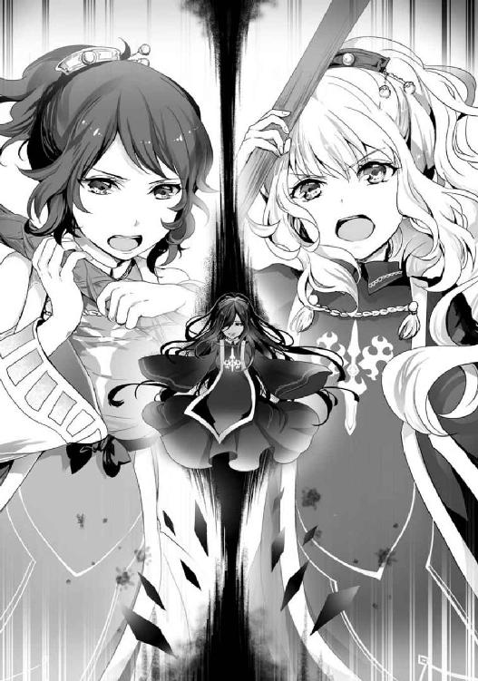
怒りは声だけでなく、高く掲げた杖から神術となって逬った。
赤ん坊ほどの大きさをした青き火球が五つ、空中に大きな弧を描き、それぞれが別々の角度からディアネイラ――若き教祖の名を与えられた〈神敵〉へと襲い掛かる。
同じ〈業火の拳〉でも、先ほどアベルカインに託した火球とは大きさも数も随分違う。
一撃で倒すことではなく、同時攻撃で幻惑し、爆発の衝撃で動きを止めることを目的とした攻撃だ。
その狙いは半分成功。ディアネイラは粘ついた光沢を歪ませ、火球の軌跡に翻弄されるように首を巡らせる。人に近い姿をしているのに、人の可動域を超えた首の動かし方をしているのがなんとも不気味だ。
「アウスティナ！ 援護を！」
「〈茨棘の種子〉よ！ クレアーウィットの怒髪を一房、勇者の剣に貸し与えて！」
マリアベルの攻撃で生じた隙を突いて、ナシュタールがディアネイラへと踏み込んだ。
同時に、アウスティナが怒りに満ちた祈りを神術に変えると、ナシュタールの剣に白銀の輝きを放つ茨がまとわりつき、刀身と一体化する。
すると、鋼を鍛え上げ、勇者の加護によってさらなる強度を得ているはずの刃がぐにゃりと曲がった。ナシュタールは、その異変を待っていたとばかりに剣を振るう。
流麗な剣閃を虚空に刻み、刃が踊った。
植物のように伸び、曲がり、しなり、火球に翻弄されるディアネイラにさらなる翻弄を与える変幻自在の攻撃だ。
ナシュタールは、生命の上級神術〈茨棘の種子〉により、茨の鋭さと痛みに加え、女性の髪を思わせるしなやかさと成長性など、様々な特性を与えられた剣を存分に活かしていた。
二人の巫女と一人の勇者の力を束ねた〈脈動〉にディアネイラも無傷ではいられない。
青き火球を二発、右腕を振り回して鬱陶しげに振り払ったものの、爆発の衝撃で体勢を崩し、残りの三発とナシュタールの斬撃をまともに受けた。
右腕と顔、胸元と脇腹が爆発で抉れ、全身に浅からぬ切り傷を受けて後退する。
「左ももらった！」
ナシュタールの鋭い声と共に、ディアネイラの左腕が茨の剣に切り飛ばされて宙を舞う。
だが、これ以上の追撃は許さぬとばかりに、満身創痍のディアネイラが反撃に出る。
なんと、全身の傷口から、液状化した金属の飛沫を無差別に撒き散らしたのだ。
滾る炎の如き邪気をまとい、一つ一つが拳ほども大きい飛沫――夥しい数の金属塊は、凄まじい速度を伴って石壁や石畳を容易く破壊した。人間が受ければ、ひとたまりもない。
「くうっ！」
アウスティナが杖を掲げ、祈りの言葉を省略した〈庇護の柱〉で自分とマリアベルを包む。
ディアネイラの攻撃が、神の加護で守られた巫女であろうと、神術まで使って守勢に回らねばならぬ威力を備えている証明である。
粘ついた金属塊が薄桃色の光に勢いよくぶつかる不快な音が、マリアベルとアウスティナの耳を幾度も打った。
疲労のせいか、咄嗟に自分を守るという選択しか取れない巫女達をフォローするかのように、ナシュタールが獅子奮迅の活躍を見せる。
無差別に撒き散らされた飛沫の〈脈動〉を読み、柔らかくしなり、どこまでも伸びる茨の剣を自在に振るって、次々に切り払い始めたのだ。
それも、壁や地面を抉るものや、アウスティナの〈庇護の柱〉で防がれるものは無視し、自分を狙うものは悉く避け、逃げ惑う人々に向けて放たれた飛沫のみを的確に狙っている。
達人と呼ぶに相応しい、このような状況でなければ見惚れるような技の冴えだ。
「修復が早い！ 〈不死〉の特性か......！」
白銀の刃と髪を閃かせ、白い神官服を靡かせながら、ナシュタールは苛立ち混じりに舌打ちする。
ディアネイラは、傷口が塞がるに従って、痛みを撒き散らすかのような無差別攻撃を止めつつあった。
しかし、それは戦いが振り出しに戻ったことを意味する。
そもそも生物ではない無機物をベースに体を構築しておきながら〈不死〉を発動させるのだから、理不尽もいいところである。
「見てください！ 左腕は治っていません！」
マリアベルがディアネイラの異変を見咎めて叫んだ。
確かに、ナシュタールが切り飛ばした左腕だけ完全に再生していない。傷口は閉じているが、それは切断面がそのまま塞がっただけ。
視線を巡らせれば、石畳に落ちた腕の方は錆びついて腐食したような色に染まり、音を立てて崩れ落ち始めていた。
ディアネイラもそこだけ完全に修復されないことに戸惑っているのか、まじまじと切断面を見つめて首を傾げている。
「あの腕は確か......」
ナシュタールが、土埃の晴れた壁の穴に目を向ける。アベルカインが叩きつけられ、破壊された壁である。その視線を追ったアウスティナも、何かに気づいたように目を見開く。
そう、アベルカインを打ち払った腕もディアネイラの左腕である。
無謀な突撃は何一つ戦果を残さなかったわけではない。接触の瞬間、加護の右腕はディアネイラの左腕を抉っていた。それが、再生能力の欠如に繋がったとしか考えられない。
「アウスティナ！」
「わかってる、合わせてあげるから。好きにやりなさい！」
マリアベルの声に、アウスティナが応じる。頷き合う二人のポニーテールは胸とは違ってお揃いの揺れ方で互いの意思を確認した。
同時に〈庇護の柱〉が解除され、二人の巫女が攻勢に出る。
アベルカイン、待ってて！ すぐに私が！ あなたのお嫁さんが助けに行くから！
「メメントモリよ！ 〈業火の拳〉で、我らの敵を打ち据えたまえ！」
マリアベルは、再び五つの火球で空中に大きな弧を描いた。
ただし、今度は全て、完全に修復している右側からディアネイラを襲う。
足を止めて腕で打ち払ってくれればしめたものだったが、そうも行かない。
ディアネイラは巨体に見合わぬ速さで邪気の尾を引き、空中を滑るように火球から逃れる。
そして、〈神敵〉の本能がそうさせるのか、高度を上げ、建物の上を通り、多くの人が避難した方角へと向かおうとする。
生まれ落ちた場所から離れられぬ定めを知らぬかのような、ある意味で哀れな動きである。
「かかった！」
ディアネイラの移動経路を遮るように、一切の哀れみを感じさせぬ茨の剣が振るわれる。
ナシュタールは地を蹴り、建物の屋根から屋根へと飛び移り、マリアベルの〈脈動〉が追い込むであろう場所に先回りしていたのだ。
しなやかな刃はディアネイラの巨体を切り裂くのではなく搦め捕り、その体を戒める。
もがきながら甲高い声を上げた頭部に、五つの火球が次々に着弾した。
「おおおおっ！」
ナシュタールは咆哮し、足場の屋根を砕かんばかりに踏み締めると、驚異的な膂力でディアネイラの巨軀を振り回した。
そして、二度、三度と大きな回転で勢いをつけ、ディアネイラをオクタゴナの南門へと叩きつける。歴史ある神殿都市の南門は、大鐘もろとも凄まじい音を立てて砕け散った。
流石に〈不死〉の再生力が追いつかないのか、ディアネイラは傷だらけの巨軀を瓦礫の中へと横たえる。
そこに満を持して、アウスティナが追い討ちの神術を放った。
「〈茨棘の棺〉よ！」
祈りと共に突きつけられた杖の先端、白銀に輝く〈生命賛華〉から幾筋もの光――太く、長く、強靭な白き茨が逬り、ディアネイラの全身に絡みつく。
頭部を始めとして、損傷の修復もままならぬ巨軀が最後の抵抗とばかりにもがくが、アウスティナの神術だけでなく、ナシュタールの剣も未だ絡みついたまま。
生命の巫女と勇者。二人がかりの戒めを逃れることは、いかに〈神敵〉といえど容易ではない。
「クレアーウィットの怒りもて、不死なるものを葬る力を！」
夥しい数の白き茨は、ディアネイラの全身を完全に覆い尽くすだけでは飽き足らず、強引にその身を縮めてゆく。
そう、棺と銘打たれた神術が、ただの戒めで終わるはずがない。
押し潰されるかたちとなったディアネイラは、凄まじい悲鳴と金属がひしゃげて砕ける異音の二重奏を戦場に轟かせた。
同時に、ナシュタールの〈茨棘の種子〉が解除される。
アウスティナは全ての力を〈茨棘の棺〉に注ぎ込み、ディアネイラを確実に仕留めようとしていた。〈茨棘の種子〉を解除したのも、そのためだ。
眉根を寄せ、頰を汗で濡らし、歯を食いしばり、全身全霊を込めた最後の攻撃である。
くううううううっ！ アウスティナ、がんばって！ ち、乳がもっと育ってもいいから！ 活火山を超えた活火山になってもいいから！ とにかくがんばって！
マリアベルは、迂闊に手出しをすることも、その場を動くこともできなかった。
攻撃を仕掛けようものなら、アウスティナの〈茨棘の棺〉を破ってしまう可能性がある。
アベルカインの治療に向かうことも、万一〈茨棘の棺〉が内側から破られたときは、即座に神術で攻撃しなければならないことを考えると難しい。
動かないのがベスト。揺れない胸のように動じないのがベスト。それは、マリアベルとてよくわかっている。理性でわかっているからこそ、感情で葛藤するのだ。
「うくっ！」
アウスティナが苦々しげに呻き声を漏らす。
同時に、順調に圧縮を続けていた〈茨棘の棺〉から、粘ついた光沢を放つ腕が突き出された。骨に肉と邪気がへばりついたような、ボロボロの右腕である。
度重なる上級神術の行使と維持で生じた疲労を突かれ、棺の一部が破られてしまった。
「大丈夫、このまま引きずり込める......！」
しかし、アウスティナは自らを叱咤するように強い意志を込めた呟きを放つと、突き出された腕に戒めの茨を絡め、言葉通りに棺の中へと引きずり込み始める。
それでも、何かを探すように、最後の悪あがきとボロボロの右腕が振り上げられる。この状態からでも、邪気をまとった飛沫を一つ二つ飛ばすことはできるかもしれない。
アウスティナもナシュタールも、そのことにさして問題を感じなかった。右腕から感じられる〈脈動〉の先には、すでに誰の姿もない。
避難は完全に終わっている――はず、だった。
えっ!?
マリアベルは驚愕した。
反射的に視線を向けた先。ディアネイラの振り上げた右腕の先に人がいる。スレンダーの悲劇でマリアベルを苦しめた、忘れようにも忘れられないツインテールの女の子がいる。
なぜ、そんな場所にいるのかという疑問に対する答えは簡単。彼女は無謀にも、信仰を捧げた『みこさま』と『ゆうしゃさま』の、大事な持ちものを拾いにきたのだ。
ちょっ!? ど、どうしよう！ どうしようどうしようどうしよう！
マリアベルが思考を高速で巡らせ、救出の術を探し始めた瞬間、アウスティナは〈茨棘の棺〉に注ぐ力を強め、ナシュタールは弾かれたように飛び出して救出に向かう。
だが、間に合わない。
マリアベルの頭は、何度も何度も同じ答えを、極限まで圧縮された時間の中で導き出す。
アウスティナもナシュタールも、そして自分も間に合わない。何をしても遅い。
だから、マリアベルは祈った。祈るしか術がないから、祈った。
くあああああああああああああああっ！ もういいから！ もう、もうーーっ！
あまりにも必死で純粋。神術でも起こりえぬ奇跡を願うがゆえの、渾身の祈り。
それは、マリアベルの妄想世界で、圧縮された時間を突き破るような叫びとなった。
もういいから！ 乳が育っていいから！ スレンダーに苦しめとか思いませんからあっ！ どうか、あの子を！ お助けくださああああああああああああああああああいっ！
乳に対する嫉妬を一時だけでも捨て去り、純然たる清らかさを持つに至った祈りがマリアベルの時間を加速させた。
アウスティナが間に合わず、ボロボロの右腕が振り下ろされる。
ナシュタールが間に合わず、赤黒く滾る邪気をまとった飛沫が飛ぶ。
その数はたった一つだが、無力な少女を殺害せしめるにはそれで充分だ。
しかし、血風をまとった黒い影が、スレンダーの悲劇を超える悲劇を防がんと――破壊と殺戮を望む邪気に満ちた、最後の一撃に立ちはだかる。
「くあああああああああああああああっ！」
その影は奇しくも、マリアベルが決死の祈りで逬らせた叫びとよく似た咆哮を響かせ、鞘に包まれたままの剣を邪気に満ちた一撃へと叩きつけ、振り抜き、打ち返した。
ディアネイラは、自らの悪あがきをその身に受けて〈茨棘の棺〉へと押し込まれる。
その瞬間、棺は一気に圧縮し、塵一つよりも小さく小さく、遙か小さく、包み込んだディアネイラごと身を縮め、空気に溶け込むように姿を消した。
神術でも実現できぬ、幼い命の救済を願う祈りを叶える奇跡が起きた。
そう、アベルカインが間に合ったのだ。
「アベルカイン！」
最初にその名を呼び、満身創痍のアベルカインへと駆け寄ったのはマリアベルだった。
そのあとにアウスティナが続き、ナシュタールは念には念をとばかりに周囲を警戒する。
霞む視界の中、呼びかけに応える余裕もないアベルカインは、未だに加護の朝焼けに染まった右眼で、ディアネイラが消え去った虚空を見据えていた。
そして、他の三人の、そしてツインテールの少女の目の前で、糸の切れた人形のように前のめりに倒れてしまう。
その体を間一髪で抱き止めたマリアベルが〈快癒の光〉をかけながら、慎重に石畳に寝かせると、アウスティナは気力を振り絞って上級神術による回復の準備を行う。
マリアベルは傷ついた勇者の血に汚れ、慌しい治療を始めながら、敬愛するメメントモリに対して必死に祈りを捧げていた。
メメントモリ様！ やりました！ あなたの信仰を冒瀆する敵を、皆の力で倒しました！ だからどうか！ アベルカインをお助けください......！
とてつもなく真摯で痛切で清らかな祈り。巫女として相応しい聖性に満ちた祈りである。
だが、その報告を死の世界で聞き届けたメメントモリは、真摯で痛切で清らかだからこそ、こみ上げてくる何とも言えない涙に目頭を押さえた。
問題は一つ「あなたの信仰を冒瀆する敵を」の部分。より正確に言うなら、ここでマリアベルが何を思い浮かべて『冒瀆』していると判断したかにある。
マリアベルよ――わらわは別に、その部分を冒瀆とは思ってはおらぬぞ。
メメントモリの、真摯で痛切な突っ込みが死の世界の冷たい空気を震わせる。
マリアベルは、ディアネイラがメメントモリを特に冒瀆している部分を胸元だと思っていた。
もちろん、逆さまの〈獄炎十字〉も、冒瀆の一部ではある。あるのだが、マリアベルにとっての真なる冒瀆要素は胸元のふくらみだった。
胸がある。メメントモリにないはずのふくらみが、そこにある。
それが、マリアベルには許せなかった。
敬愛する神の貧しさを嘲笑うかのように、ふくらみを盛りつけたことが許せなかったのだ。
あまりにも斜め上、なのに、とてつもなく清らかで聖性に溢れた怒りである。
メメントモリは、一つ咳払いをした。
頭痛を誤魔化し、引きつった表情をどうにか整え、深い安堵を宿した微笑を浮かべる。
皆――よくやった。よく、やってくれたな。
全てを見通す、慈愛に満ちた微笑と共に呟かれた安堵の声が、戦いの終わりを告げていた。
［ Ⅰ ］
神殿都市オクタゴナは、前代未聞の事態に激震した。
邪教徒の大規模な侵入。〈神敵〉の発生。パニックに陥る人々。破壊された南門。
しかし、それら全ての問題は二組の巫女と勇者による〈神敵〉討伐によって、すでに事後処理の段階に入っていた。
幸い、観光客などの人的な被害は軽傷の怪我人程度に留まっていたこともあってか、パニックに陥った人々もそれなりに落ち着きを取り戻している。
だが、破壊された南門にほど近いクレアーウィット教会の中で、たった一人の重傷者――アベルカインを治療し終えたアウスティナは落ち着きを取り戻すどころではない。
度重なる上級神術の行使で疲労困憊し、ふらつきながら無人の客室へと足を運び、扉を押し退けるようにして中に入ると深い溜息をついて呟いた。
「あーもう......疲れた」
護神具の杖もすでになく、肩を落とした姿は巫女とは思えない弱々しいものだ。
「アウスティナ。少し休んだほうがよいのではありませんか」
続けて部屋に入ったナシュタールは、そっと声をかけながら後ろ手に扉を閉め、鍵をかけた。
「もー。始まって早々、こんなにハチャメチャな神話祭なんて聞いたことないわ」
休息の提案を受け入れたのか、アウスティナは愚痴を吐きつつ近くのベッドに横たわる。
その様子を見ながら、ナシュタールは西日の差し込む窓に近づいてカーテンを閉め、アウスティナの言葉に頷いた。
「クレアーウィット様の加護を以てしても、現時点ではかなりの強敵でした。それに......アベルカイン殿を制止することができず、肝を冷やしました」
「......あれは、仕方ないわ。あんな、死そのものを思わせる殺気。メメントモリの勇者には相応しいけど......」
何気ない同意から、複雑な感情を滲ませる沈黙を経て、アウスティナは自らの発言をこのように締め括った。
「死の感触を知る、あなたとの相性が悪すぎた」
暗く、冷たい沈黙が、部屋に漂う。
ややあって、ナシュタールの目が何かに気づいた様子で瞬きする。
夜空の瞳に映るのは、アウスティナの頭で存在を主張するポニーテールだ。
「そのまま寝ると変な癖がつきますよ」
ナシュタールは暖かな掌をそっと伸ばして髪に触れ、薄紫の飾り玉がついた髪留めを取った。ポニーテールが優しく解けて、柔らかな黒髪が揺れる。
アウスティナは暖かい手の感触に頰を緩め、疲れが滲む顔に自然と笑顔を浮かべた。
「でも、いいこともあったな」
「自分も、そう思います」
アウスティナはポニーテールの解けた髪を弄り、ナシュタールは掌の中で輝く髪留めを見詰め、思い思いの態度で『いいこと』に思いを馳せた。
まるで、暖かな西日のような沈黙が部屋を満たす。
だが、その沈黙は少しずつ、少しずつ、星のない夜空のように暗いものに変わりつつあった。
「............」
ナシュタールは仮面の中で瞼を閉じ、暗闇を見詰めながら、アウスティナの苦笑に無言で応じる。瞼を閉じ、口を引き結んだその顔は――十年前、暗い棺の中で永遠の眠りについていた少年と同じ顔をしていた。
「窮屈な想いをさせて、ごめんなさい。でも、あなたの顔を覚えている人はたくさんいる。だから......」
アウスティナは、苦渋に満ちた声で沈黙を破ると静かにベッドから降り、立ち上がった。
「お気になさらず。アウスティナが気に病むほど窮屈とは感じておりません。むしろ、この名も偽った方がよいのではと思うくらいです」
「バカ、偽名を使いこなせるほど器用な性格してないでしょ。名前だけなら、マリアベルだってあなただと気がつかなかったんだし......堂々としているほうがいいわ」
重い空気に軽い笑いを挟み、二人は話を続けた。
「ふふ......それに、この傷は自分にとって恥ずべき傷。あまり、見せびらかしたいとも思いません」
「私にとってもよ。あなたと何度も顔を合わせておきながら、病に蝕まれていることに気づかなかった」
気づいていれば、病を押して戦いに挑むなどという無謀な行いなど許さなかった。邪教徒との戦いで遅れを取って死なせるようなこともなかった。たとえ、治らぬ病であったとしても、安らぎの中で死を迎えさせることもできた。
それは、アウスティナにとって、死の悲しみと共に心に刻まれた後悔である。
「とはいえ、受け入れるほかありません。二度目の命を粗雑に扱わぬよう、死の証......致命の傷跡を永遠に残す。何もかも、伝承通りなのですから」
ナシュタールはそう言って、仮面を軽く撫でた。
その様子を見ながら、アウスティナは苦渋を振り払うように微笑んだ。日没も宵闇も越えた、朝日を思わせる微笑がそこにあった。
「ナシュタール、偉業を重ねましょう。小さなものから、大きなものまで。誰よりも、どの巫女と勇者よりも沢山、完璧に」
アウスティナは表情をそのままに、歌うように美しく言葉を紡いだ。二人でなら、必ずそれができると言わんばかりの自信に満ちた声音である。
その自信が誇張とは言えない事をナシュタールはよく知っている。アウスティナの巫女としての力と聖性を、身をもって理解しているからだ。
「そうすれば、あなたが生き返った事も......」
アウスティナは、ナシュタールに自分の勇者を務めてほしかった。
だが、それが叶わぬ夢であることは誰よりも知っていた。神術の力をもってしても、人を生き返らせることはできないのだ。
ゆえに、神話祭の前夜――ひっそりと、ナシュタールの墓を訪れた。
幼い夢を置き去りにする、別れの儀式のために。
奇跡は、そこで起きた。
「偉大な勇者に与えられた特別な奇跡として、誰もが暖かく迎えてくれる。きっと、きっとよ」
ナシュタールは、神術の力で蘇ったのではない。
墓前で死を悼み、安らぎを祈り、別れをすませようとしたアウスティナの前に、不可能を可能にする力が出現した。
創生剣クレアーウィット。生命の神が携え、まだ現世で為すべきことのある命を、一度だけ死から救うと言われる、人域を超えた奇跡の剣。
ありえない。誰も、何の代償も払っていないのに、あまりに都合のいい奇跡が現れたのだ。
だが、剣の名が、力が、使い方が、淡々と心に流れ込んでくる。
その事実が、アウスティナを突き動かした。
別れの儀式を、再会の儀式に変えてしまったのだ。
絶対に、誰にも明かしてはならぬ秘密ができた瞬間だった。
創生剣はナシュタールの再生と引き換えに掻き消えてしまった。もう一度呼び出す方法は、アウスティナにもわからない。
事実が知れ渡れば、厄介な事になる。
死者が蘇る奇跡の存在が一人歩きし、そこだけを切り取って噂が広まるのは確実だ。
そうなれば、我も我もと、死者の再生を願う人々がアウスティナに縋りつくに違いない。
いちいち断っていては埒が明かないし、信仰獲得にも大きな支障が出るだろう。
だから、最後の最後まで隠し通し、誰よりも完璧な巫女と勇者として使命を果たす。
そうすれば、大偉業を為し遂げる運命にある勇者を、クレアーウィットが特別な計らいで蘇らせたなど――多くの人々を納得させるだけの大義を語るだけの説得力を得る事ができる。
「はい、アウスティナ」
ナシュタールは暗い夜空の瞳を複雑に揺らめかせ、アウスティナを見詰めた。
死の安息から目覚めたナシュタールは、様々な感情に苛まれていた。
生き返った事そのものに対する驚き。
十年という歳月に対する喪失感。
そして、幼いアウスティナと、巫女アウスティナの落差。
ナシュタールにしてみれば、寝て起きたらいきなりアウスティナが大人になっていたようなもの。巫女候補とはいえ、子供として接していた相手との距離感に戸惑うのも当然だ。
「大丈夫よ。クレアーウィット様も、あなたと......あなたを蘇らせた私を認めている。加護がきちんと発動しているのがその証拠」
アウスティナは自分に言い聞かせるように力強く頷く。
他ならぬアウスティナ自身、ナシュタールに対して様々な感情を抱いていた。
自分の都合で生き返らせた事に対する罪悪感。
十年という歳月で重く積み重ねた慕情。
そして、幼い目で見ていたナシュタールと、巫女として見るナシュタールの落差。
同じ人物でも、見る側の心が変われば見え方も変わる。立派に成長したアウスティナにとって、ナシュタールは頼れる勇者ではあるが、憧れのお兄さんではなくなっていた。
アウスティナもまた、ナシュタールとの距離感を測りかねていたのだ。
「......アウスティナ」
ふいに、ナシュタールが先ほどより力強くアウスティナを呼んだ。
「自分は、あなたの勇者に選ばれてよかった。そう思います」
十年の歳月が作り出した戸惑いを切り裂こうとしているかのような声だった。
短い言葉だったが、長々と言葉を重ねるよりも鋭く心に刺さるナシュタールの発言にアウスティナは目を瞬かせる。
「ありがとう。そういうところ、ちっとも変わらないわね」
「それはそうです。ついこの間まで眠りこけていたのですから」
口調は硬いが、冗談めかした声にアウスティナの表情が変わる。巫女としての神秘に溢れた笑顔から、年頃の少女のような自然な笑顔に変わったのだ。
「ふふ......本当にありがと。あなたのおかげで、調子が出てきたわ」
アウスティナはそう言って、照れ隠しでもするかのようにナシュタールに背を向けた。
そのまま日没の瞳を閉じ、寝転がったままベッドに隣接した壁に触れる。
その瞬間、瞼の裏の暗闇に、現実とは違うもう一つの世界――即ち、妄想世界が出現した。
ふふっ
妄想世界のアウスティナは、雲を貫く高い高い山の頂上にいた。
そして、雲海を晴れやかな笑顔で眺めてガッツポーズを取る。
くあっ、くあっ、くああああああああああああああっ！ これよこれえっ！ この感じがほしかったのよ！ 調子出てきたああああああああああああああああんっ！
アウスティナの叫びに呼応するかのように、幾つもの山が雲を貫いて突き出てくる。それらは全て、山頂から黒々とした煙を噴き上げる活火山だ。
にゃああああああああああああああああっ！ 十年前はこれでよかった！ きゅんきゅんしてたあっ！ ナシュタールの、ナシュタールのぉ！ 短い言葉の中に溢れる、包容力にきゅんきゅんしてたけどおおっ！
活火山の一つが、さらなる叫びに呼応して大噴火する。巻き上がる噴煙が、雲を越えた空の果てに『きゅんきゅん』という頭の悪そうな煙文字を描き出す。
でもね！ 十年という歳月が、見た目の年齢も！ 心の年齢も近づけちゃったんだから！ 何もかも、今までのままではいられない！
果てしなく上がってゆくアウスティナのテンションに導かれるかのように、さらなる大噴火を起こした噴煙が『きゅんきゅん』の煙文字と混じり合って、姿を変える。
私からガンガン押しちゃったり！ リードしちゃったりしてもいいじゃない！ 掌で転がしちゃってもいいじゃない！ ころころしちゃってもいいじゃない！
やがて、出来上がった新たなる煙文字――『Ｓ』の性癖に裏打ちされた『ころころ』を見上げ、アウスティナは天を仰いだ。
そして、そしてえっ！ マリアベルぅ！
まだ噴火していない火山が一斉に鳴動し、これまで以上の大噴火を予感させる。
仲直りできてよかったあっ！ しばらくお別れだけど！ だけどだけど！ また会ったら、会ったら！ まず、まずはそう！ あの胸を！ 密かに気にしてるっぽいあの胸をっ！
しかし、鳴動は大噴火の予兆ではなかった。
なんと、雲海を二つに断ち割り、巨大な壁がせり上がってきたのだ。
この私があっ！ 直々に！ 育ててあげるからねーーーーーーーーーーーーーーーっ！
欲望の叫びと共に、数多の火山が今度こそ一斉噴火する。
マリアベルと、そしてナシュタールとの絆を深めて取り戻した妄想は、積年の想いを果てしなく長く、溜まりに溜まったマグマのように大噴火させ続けていた。
［ Ⅱ ］
「うっ......」
最初に目に入ったのは、見知らぬ天井とカーテンから差し込む西日。次に、自分が清潔なベッドで寝ていることと、悪い夢を見ていたことを理解する。
「アベルカイン！ 目が覚めたのですね！」
喜びに溢れる声が、右手を包む暖かな感触に気づかせた。
アベルカインは、ゆっくりと声の方向に視線を向ける。
そこにいたのは、瞳を喜びに潤ませ、目尻に涙を溜め込んだマリアベルだ。
ベッドの傍らに跪き、アベルカインの右手を暖かく硬い掌でしっかりと包み込んでいる。
目が覚めるまで、ずっとそうしていたのだろうと思わせるには充分な光景だった。
「マリアベル......」
特に痛みなど感じることなく、アベルカインは身を起こした。
シーツがずり落ちてあらわになった上半身は、右眼、右手ともに加護による変化が元に戻っており、衣服は変わらぬものの、鎧は取り外されている。
「......ええと」
アベルカインは、何を言えばいいのか迷い、漠然と部屋を見回した。
「......そうだ！ あの子は！ それに〈神敵〉はどうなりましたか!?」
少しの間、無言でマリアベルの言葉を嚙み締めていたアベルカインだったが、理解が追いついた瞬間、矢継ぎ早に質問を投げかけた。
すると、マリアベルはアベルカインの右手を解放し、懐からメメントモリ人形を取り出した。〈浄化の光〉でもかけたのか、血汚れや土埃はきれいに消え去っている。
「あの女の子は無事です。神敵ディアネイラも倒しました。避難した人々には多少の怪我人が出たようですが、重傷者や死人は出ていないようです」
マリアベルは、メメントモリ人形をアベルカインの膝にそっと置きつつ、淡々と質問に答える。
何か、大きな感情を抑え込んでいるようにも見える態度だが、アベルカインはそこに気を回すよりも早く、深い安堵の溜息をついた。
「そうですか、よかっ......」
「よくありません！」
激しい怒りと、深い悲しみに満ちたマリアベルの声に、乾いた音が重なる。白く硬い掌が、褐色の頰を打っていた。
アベルカインは心を突く怒声に硬直し、頰を走る痛みに目を瞬かせる。
「あなたはどうして！ そんなにも......自分の命を軽んじるのです」
マリアベルは、極めて根本的な質問を投げかけた。
聞きたいことは、他にもあった。
何故〈神敵〉の誕生を誰よりも早く察知できたのか、右眼の加護の効果は何なのか。
しかし、マリアベルは、それらの諸問題を一先ず横に置いておくことにした。
んもおおおおおおおっ！ 何でそんなに捨身なの!? ありえないよ！ これ直さないとダメッ！ 絶対に！ 真っ先に直さないとダメだよっ！
神殿での説法は、間違いなく効いている。効いてなおこうなのだから、相当根深い問題がある。マリアベルは、そう判断していた。
「それは......」
アベルカインは、目を伏せて迷いを見せた。
理性では話すべきだと思いつつ、感情では話していいものかと思っている。そんな迷いだ。
くううううううううっ！ この憂いを帯びた瞳、きゅんきゅんするなあ！ 叩いて赤くなっちゃった頰も、今すぐぺろぺろして治したいよねっ！
その様子を、怒りを宿した神秘の仮面で見詰めながら、マリアベルは妄想世界でメガネをかける。巫女として、婚活戦士としての洞察力をフル活用し、アベルカインの心理状態を推測するためだ。
貪欲に欲情ポイントを探し、メガネを桃色に曇らせながらも――マリアベルは、見るべきところはしっかりと見て、アベルカインの表情や仕草に宿る感情を的確に分析していた。
その結果見出したのは、憂いを帯びた瞳に宿る深い悲しみ、赤くなった頰を微かに震わせる迷い、唇から言葉を紡ぎ出せない不安である。
未来の妻として、夫の気持ちを思いやり、支える気持ちを糧にマリアベルは分析を進めた。
「アベルカイン、あなたの捨身の姿勢。言葉だけでは正せぬことがよくわかりました」
だが、マリアベルはどちらの驚きも裏切るアイデアと共に言葉を紡ぎ、ここまでずっと握っていたアベルカインの手を離した。
「............」
アベルカインは、静かに覚悟を決めた。もう一度、先ほどよりも強く叩かれるくらいのことはありうると考えたからだ。それぐらいのことはしてしまったという自覚があった。
しかし、その覚悟は全く予想だにしていなかった暖かさによって裏切られる。
「......え？」
アベルカインは困惑した。マリアベルとの距離が近い、というより完全に抱き締められていることに果てしなく困惑した。
甘く香る白銀の髪、法衣を通して鼓動を感じるほどに押しつけられた体、薄く貧しいが確かに存在するふくらみ、全てを包み込むような慈愛に満ちた暖かさ。
マリアベルの抱擁から与えられた感触の全てが、アベルカインを困惑させていた。
空気を摑もうとしているかのような中途半端な位置を彷徨う腕は、抱き返すことも、かと言って突き放すこともできないという困惑の象徴だ。
ぐへへへへへ！ 言葉が通じないのなら！ ボディランゲージしかありませんよねーっ！
マリアベルは興奮した。何しろ、メメントモリ神殿で抱きついたときとはわけが違う。今のアベルカインは、鎧をつけていないのだ。
すんすんしたい灰銀の髪、服と服という薄い障害を通して感じる鼓動と鍛えられた体、すりすりして甘えたい胸板に、命そのものを包み込んでいるような暖かさ。
アベルカインから味わう感触の全てに、とてつもなく興奮していた。
「このまま、抱き締めてください」
震える声が、マリアベルの唇から零れ出る。
アベルカインはその声を、恥じらいに震えながら信念を持って慈愛の心を押し通そうとしている声だと判断した。
「こ、こうです......か？」
巫女と勇者ではなく、ただのマリアベルとアベルカインとして抱き合っている。
何とも言えぬ気恥ずかしさと戸惑いを感じながら、アベルカインはマリアベルを抱き返した。
「とても、あたたかいです」
マリアベルは戸惑いがちに、それでいて優しく抱き返してくる感触に陶酔しながらも、アベルカインに必要な言葉を投げかける。
「そ、そう......ですね。マリアベルも、あたたかいです」
他にも様々な感触と感情に翻弄されていたが、アベルカインはとりあえず同意した。
「それが、私の命です。あなたが抱き締めている......あたたかさが」
マリアベルは、抱き締める腕に少しだけ力を込め、言葉を紡いだ。
これから紡ぐ言葉は、アベルカインが神殿での説法を覚えていてこそ効果がある。
んにゅうううううんっ！ 生真面目なアベルカインなら、絶対覚えてるよね！ あとは、あとは！ 現実でも鼻血を出さないように気をつけないとねっ！
桃色の欲望が鼻から溢れ出たら困るという斜め上の懸念を神秘の仮面で覆い尽くし、勇者にして未来の夫への信頼に背中を押され、マリアベルはさらに突き進んだ。
「あなたと私は、勇者と巫女。運命共同体なのですよ」
ぴくり、とアベルカインの体が震える。
その感触に、神殿での説法を覚えているという確信と安堵を感じながら、マリアベルの唇は淀みなく言葉を続けた。
「あなたが自らの命を粗末に扱うこと。それは......私の命を粗末に扱うということです」
アベルカインに大きな反応はない、肯定の言葉も否定の言葉も返ってこない。
んにゃああああああああっ！ でも、ここは行っていいタイミングだよ！ 押して押して！ 押しまくっていいタイミングだよね！
妄想世界のマリアベルが、どこからともなく辞書を取り出す。
そして『後退』の二文字が書き込まれたページを開き、どこからともなく取り出した赤鉛筆で×印をつけようとして――やめた。
そんなことをするまでもなく、滴り落ちる鼻血で文字が消えたからだ。
「だから、私は......何度でもあなたを抱き締めます」
マリアベルは妄想世界で鼻血に塗れた辞書を投げ捨て、現実世界で捨身の覚悟に塗れたアベルカインの命を抱き締め続ける。
婚活戦士として未来の夫の命を案じ、巫女として供たる勇者の命を案ずる。
不純と純粋を矛盾させること無く一つに束ね、マリアベルは最後の仕上げを紡ぎ出す。
「あなたが、私の温もりを通じて......自らの命の尊さに気づいてくれる、そのときまで」
暖かな沈黙に包まれる巫女と勇者を見守りながら、メメントモリは絶句していた。
その理由はもちろん、聖性と婚活魂を矛盾なく併せ持つ巫女マリアベルだ。
アベルカインに起こり得る悲劇を遠ざけるどころか、叩き潰すような勢いで慈愛に満ちた振る舞いをしておきながら――。
ど、どうかなあ!? これはかなり効いたんじゃない!? って言うか、もしかして......キ、キス待ちしてもいい雰囲気じゃない!? いや、それはまだ早いかな!? ど、どうしよう、どうしよう！ どうしたらいいと思いますか、メメントモリ様！
――妄想世界では、キス待ち検討会議についての意見をものすごく真剣な面持ちで、鼻血を拭いながら尋ねてくる。
とてつもないギャップに、メメントモリは膝から崩れ落ち、勢いよく死の世界の大地に突っ伏する。
だが、幸いなことにキス待ち検討会議はすぐにお流れになった。
溢れんばかりの慈愛と聖性に打たれたアベルカインが、抱き返す腕に力を込めたからだ。
「マリアベル、ありがとう」
アベルカインは万感の思いを込めた「ありがとう」によって、マリアベルに欲望と献身のボディランゲージが実を結んだことと、キス待ち検討会議が実を結ぶ空気ではないことを伝えた。
「んっ......」
マリアベルは白銀のポニーテールをふわりと揺らし、ちょっとＭな部分を刺激するきつめの抱擁に酔いしれながら、最大の戦果を妄想世界で何度も何度も確認した。
何度でもあなたを抱き締めます。
何度でもあなたを抱き締めます。
何度でもあなたを抱き締めます。
ふにゃああああああああああああああああんっ！ これだよこれえっ！ やったやった！ 無制限ハグの大義名分ゲットォーーーーーーーーーーーーーッ！ うへへへへっ！
マリアベルが、妄想世界で歓喜の拳を突き上げる。
すると、どこからともなく湧いて出た大きなくす玉が、妄想の空で勢いよく割れた。
桃色の紙吹雪と共に飛び出た『何度でもあなたを抱き締めます記念日』と書かれた垂れ幕が、欲望に塗れた世界で誇らしげにたなびく。
慈愛に満ちた暖かな抱擁で勇者の命を包み込み、西日に照らされて暖かく微笑む巫女の心とは思えない、あまりにも斜め上にかっ飛んだ喜びの景色である。
全てを見届けたメメントモリは、引きつった表情を浮かべて呟いた。
マリアベルよ――あまり、いかがわしい記念日を増やすでないぞ。
どこか諦めの漂う矛盾した祈りは、死の世界の冷たい大地に吸い込まれて消えた。
（了）
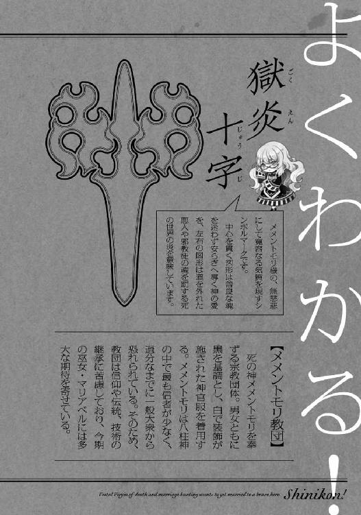
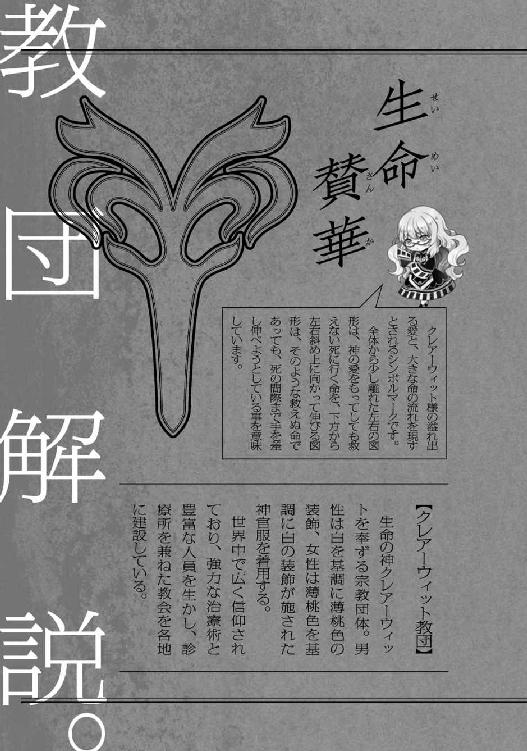
この度は『しにこん！－死と婚活の巫女は理想の勇者とゴールインしたい－』電子書籍版をお買い上げいただき、ありがとうございます。
ネット連載、書籍版、そして、電子書籍版という、二度目の発売を経て、こうしてまた、あとがきでみなさんとお会いすることができました。
そこで、電子書籍という媒体で、改めて感謝の気持ちをお伝えすべく、電子書籍版オリジナルのあとがきでお送りさせて頂きます。
まず、書籍から電子書籍に、と聞くと、そもそもがネット小説ですから、ネットに逆戻りしてきたような印象を受けるかもしれません。
ですが、私は、決して逆戻りではないと思います。
色んな方の協力で、いいものに仕上がった書籍版『しにこん！』を電子書籍の世界にも広げるぞ、と前向きな気持ちを抱いていますし、逆戻りではなく、前進であると信じているからです。
ただ、面白さを電子書籍に誠実に移植した結果、一つ、重大な注意点が生じてしまいました。
電子書籍には、荷物としてかさばることもなく、本が汚れることを気にしないでもいい、ということから、外出時に読み進めやすい、というメリットがあります。
しかし......『しにこん！』に関しては、外で読むと吹き出して困るという嬉しい悲鳴をネット連載の頃から何度も聞いているので、読者のみなさんにとって、メリットではなく、思わぬトラップになるかもしれませんので、ご注意ください！
さて、ここで、少し、電子書籍ではなく、書籍版一巻の話をしたいと思います。
というのも電子書籍版が『電子』という媒体に則し、関連スタッフさんが工夫を施してくださったように、書籍版も『紙の本』という媒体に則した工夫がなされているからなのです。
特に、透明素材を用いた透け透け表紙は、外からでも一目でわかる『工夫』ですね。
他にも、マリアベルの妄想部分が丸文字になってより強調されていたり、本の用紙がほのかにピンクだったりと、紙の本ならではの展開がされています。
様々な理由やライフスタイルに合わせ、電子という媒体を積極的に選択している方もいらっしゃると思いますが、秋に発売する二巻と合わせ、紙の一巻も手に取っていただけますと嬉しいです。
紙も電子も両方買う！とまで行かずとも、書店さんなどで手に取っていただき、実際に目にしていただければと思います。
また『しにこん！』はネット連載を『小説家になろう』というウェブサイトで継続中です。
書き始めた当初の荒削りな文章も多々ありますが、電子書籍版との物語の差や、私自身のつづるミニブログ『活動報告』などの関連コンテンツもございますので、機会がありましたら、そちらも目にしていただければ幸いです。
では、私の中にある『しにこん！』最後の場面まで書き切るまで、ご縁が続くことを願いつつ、今回は筆を置かせていただきます。
良縁ありましたら、続巻のあとがきでお会いしましょう。
それでは、また。
ぶんが秀徳
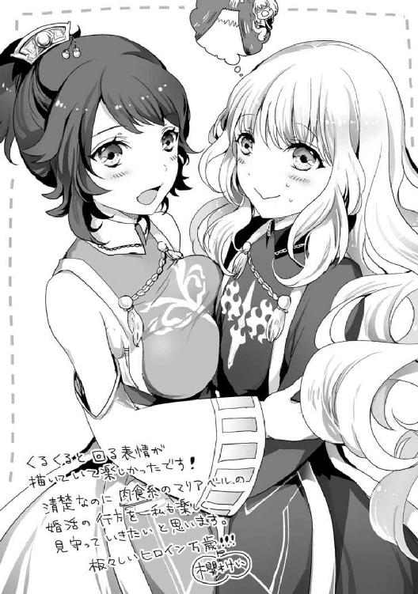
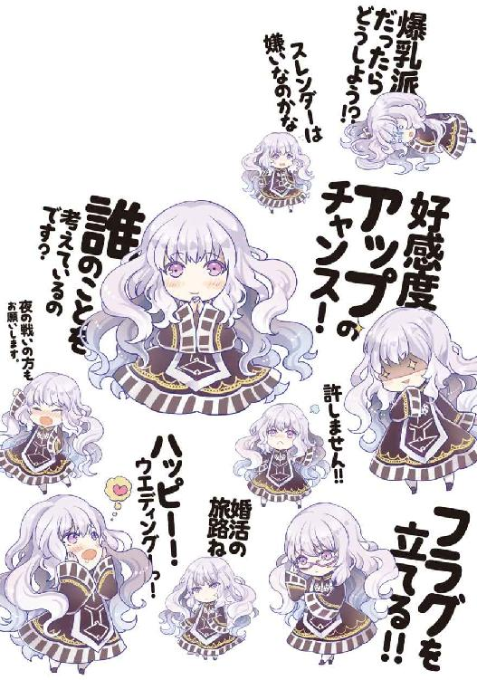
電子版
しにこん！
～死と婚活の巫女は理想の勇者とゴールインしたい～
著者／ぶんが秀徳
イラスト／櫻木けい
2014年10月15日電子版ver.1.0発行
発行人 青柳昌行
発行 株式会社KADOKAWA
〒102-8177 東京都千代田区富士見2-13-3
電話 0570-060-555（ナビダイヤル）
http://www.kadokawa.co.jp
企画・制作 エンターブレイン
装幀 BALCOLONY.
(c)2014 Hidenori Bunga
本電子書籍は『しにこん！～死と婚活の巫女は理想の勇者とゴールインしたい～』（2014年6月12日発行 初刷）を元にして制作しております。